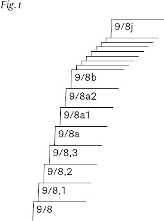
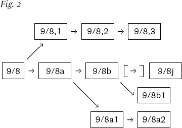
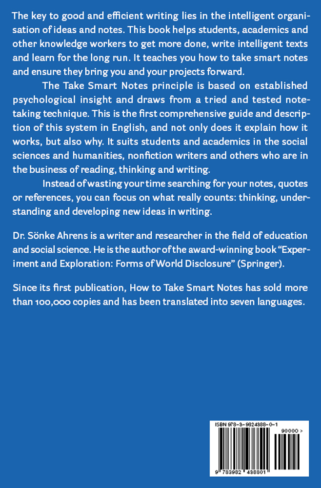

Como tirar notas inteligentes
COMO TIRAR NOTAS INTELIGENTES
Uma Técnica Simples para Impulsionar a Escrita, o Aprendizado e o Pensamento
Edição Revisada e Ampliada 2022
Direitos autorais © 2017 Sönke Ahrens. Todos os direitos reservados.
ISBN-13: 978-3-9824388-0-1 (edição de bolso)
ISBN-13: 978-3-9824388-1-8 (e-book)
ISBN-13: 978-1-6670075-5-7 (Audiolivro)
Editado por Kathy Drouin-Keith
Design e Layout por Káschem Büro
Insa Kühlcke-Schmoldt e Nina Massow
Capa com design de Oliver Ferreira
Publicado independentemente por
Sönke Ahrens, Hamburgo, Alemanha
“Não se pode pensar sem escrever.”
– Niklas Luhmann
CONTEÚDO
1 Tudo o que você precisa saber
2 Tudo o que você precisa fazer
4 Algumas coisas para manter em mente
OS QUATRO PRINCÍPIOS SUBJACENTES
5 Escrever é a única coisa que importa
7 Ninguém nunca começa do zero
8 Deixe o trabalho levar você adiante
OS SEIS PASSOS PARA UMA ESCRITA DE SUCESSO
9 Tarefas separadas e interligadas
11 Faça anotações inteligentes
15 Um vislumbre do Zettelkasten de Luhmann e algumas palavras sobre software
Muita coisa aconteceu desde que este livro foi publicado pela primeira vez em 2017. O mais importante: ele encontrou seu público. Descobri, para minha alegria, que não estava sozinho em achar a abordagem interconectada, descentralizada e de baixo para cima do Zettelkasten muito mais natural de se trabalhar do que as abordagens lineares e de cima para baixo que a maioria de nós aprendeu na escola e que ainda estão incorporadas a maioria das ferramentas de escrita e anotações.
Agora, quatro anos depois, após o surgimento de uma nova geração de ferramentas digitais que permitem a conexão bidirecional e o estabelecimento de uma crescente comunidade de entusiastas de anotações, a ideia do Zettelkasten se espalhou por disciplinas, profissões e fronteiras linguísticas.
Com o cenário em rápida mudança das ferramentas disponíveis, decidi manter o livro o mais independente possível de ferramentas e seguir o exemplo do Zettelkasten baseado em papel de Luhmann. O software pode tornar as coisas consideravelmente mais fáceis e é emocionante explorar seus recursos. Mas também traz o risco de perder de vista o que é mais importante e nos arrastar para um jogo de atualização com os últimos desenvolvimentos. Os livros sobre anotações têm um ciclo de vida diferente e devem se concentrar nos aspectos mais atemporais do tópico – essa é a vantagem deles.
O audiolivro e a maioria das traduções já se baseiam nesta edição revisada de 2022, que você tem em mãos. Existem algumas mudanças em relação à edição original de 2017. Em primeiro lugar, corrigi alguns erros que alguns leitores observadores me apontaram. Em um caso, eu entendi errado uma metáfora da química; no outro caso, repeti embaraçosamente uma história sobre lápis no espaço sem perceber que ela foi desmascarada como um mito urbano há muito tempo. Obrigado a todos que me escreveram gentilmente e apontaram isso! Junto com alguns erros de digitação, há na verdade um terceiro pequeno erro factual que corrigi, mas como ninguém notou ainda, vamos fingir que não havia nenhum. Em segundo lugar, adicionei um pequeno apêndice, que espero lhe dê uma ideia melhor de como era o Zettelkasten de Luhmann e o que é crucial ter em mente quando usamos ferramentas digitais. A última adição é uma tabela que costumo usar em palestras e que fornece uma visão geral das principais diferenças entre essa abordagem e a maneira tradicional de escrever e fazer anotações.
Todo mundo escreve. Principalmente na academia. Os alunos escrevem e os professores escrevem. E os escritores de não-ficção, que são o terceiro grupo de pessoas que este livro pretende ajudar, obviamente também escrevem. E escrever não significa necessariamente artigos, artigos ou livros, mas sim a escrita básica do dia-a-dia. Escrevemos quando precisamos nos lembrar de algo, seja uma ideia, uma citação ou o resultado de um estudo. Escrevemos quando queremos organizar nossos pensamentos e quando queremos trocar ideias com outras pessoas. Os alunos escrevem quando fazem um exame, mas a primeira coisa que fazem para se preparar, mesmo para um exame oral, é pegar papel e caneta. Escrevemos não apenas as coisas que tememos não nos lembrarmos de outra forma, mas também as mesmas coisas que tentamos memorizar. Todo esforço intelectual começa com uma nota.
A escrita desempenha um papel tão central na aprendizagem, no estudo e na pesquisa que é surpreendente o quão pouco pensamos nela. Se se fala em escrita, o foco recai quase sempre nos poucos momentos excecionais em que escrevemos um longo texto, um livro, um artigo ou, como alunos, os ensaios e teses que temos de entregar. À primeira vista, faz sentido: essas são as tarefas que causam mais ansiedade e com as quais lutamos por mais tempo. Consequentemente, essas “peças escritas” também são o foco da maioria dos livros de autoajuda para acadêmicos ou guias de estudo, mas muito poucos fornecem orientação para as anotações diárias que ocupam a maior parte de nossa escrita.
Os livros disponíveis se enquadram aproximadamente em duas categorias. A primeira ensina os requisitos formais: estilo, estrutura ou como citar corretamente. E depois há os psicológicos, que ensinam como fazê-lo sem colapsos mentais e antes que seu supervisor ou editor comece a se recusar a adiar o prazo mais uma vez. O que todos eles têm em comum, porém, é que começam com uma tela ou folha de papel em branco. Mas, ao fazerem isso, ignoram o principal, que é o apontamento, não percebendo que melhorar a organização de toda a escrita faz diferença. Eles parecem esquecer que o processo de escrita começa muito, muito antes daquela tela em branco e que a escrita real do argumento é a menor parte de seu desenvolvimento. Este livro visa preencher essa lacuna, mostrando como transformar com eficiência seus pensamentos e descobertas em peças escritas convincentes e construir um tesouro de anotações inteligentes e interconectadas ao longo do caminho. Você pode usar esse conjunto de anotações não apenas para tornar a escrita mais fácil e divertida para você, mas também para aprender a longo prazo e gerar novas ideias. Mas, acima de tudo, você pode escrever todos os dias de uma forma que promova seus projetos.
Escrever não é o que segue a pesquisa, aprendizado ou estudo, é o meio de todo esse trabalho. E talvez seja por isso que raramente pensamos nessa escrita, na escrita cotidiana, nas anotações e rascunhos. Assim como a respiração, é vital para o que fazemos, mas, como a fazemos constantemente, ela escapa à nossa atenção. Mas, embora até a melhor técnica de respiração provavelmente não faça muita diferença em nossa escrita, qualquer melhoria na maneira como organizamos a escrita cotidiana, como fazemos anotações do que encontramos e o que fazemos com elas, fará toda a diferença. por enquanto estamos diante da página/tela em branco – ou melhor , não , pois quem faz anotações inteligentes nunca mais terá o problema da tela em branco.
Há outra razão pela qual fazer anotações passa despercebido: não recebemos nenhum feedback negativo imediato se o fizermos mal. Mas sem uma experiência imediata de fracasso, também não há muita demanda por ajuda. E o mercado editorial funcionando como funciona, também não ajuda muito na oferta para essa falta de demanda. É o pânico diante da tela em branco que leva estudantes e escritores acadêmicos a recorrerem às estantes cheias de livros de autoajuda sobre a escrita, um mercado que as editoras se reúnem em massa focando em como lidar com esse cavalo-já-já- situação de abandono do celeiro. Se fizermos anotações de forma não sistemática, ineficiente ou simplesmente errada, podemos nem perceber até que estejamos no meio de um pânico de prazo e nos perguntemos por que sempre parece haver alguns que escrevem muito bem e ainda têm tempo para um café cada vez que pedimos. E mesmo assim, é mais provável que alguma forma de racionalização obscureça a visão do motivo real, que é provavelmente a diferença entre anotações boas e ruins. “Algumas pessoas são assim”, “escrever tem que ser difícil”, “a luta faz parte do acordo” são apenas alguns dos mantras que impedem muitos de indagar o que exatamente distingue as estratégias de escrita bem-sucedidas das menos bem-sucedidas.
A pergunta certa é: o que podemos fazer de diferente nas semanas, meses ou mesmo anos antes de enfrentarmos a página em branco que nos colocará na melhor posição possível para escrever um ótimo artigo com facilidade? Muito poucas pessoas lutam com seus trabalhos porque não sabem como citar corretamente ou porque sofrem de um problema psicológico que os impede de escrever. Poucos lutam para enviar mensagens de texto para seus amigos ou escrever e-mails. As regras de citação podem ser consultadas e não há como haver tantos problemas mentais quanto trabalhos adiados. A maioria das pessoas luta por razões muito mais mundanas, e uma delas é o mito da própria página em branco. Eles lutam porque acreditam, como são levados a acreditar, que a escrita começa com uma página em branco. Se você acredita que realmente não tem nada em mãos para preenchê-lo, tem um bom motivo para entrar em pânico. Apenas ter tudo na cabeça não é suficiente, pois colocar no papel é a parte mais difícil. É por isso que a escrita boa e produtiva se baseia em boas anotações. Conseguir algo que já está escrito em outra peça escrita é incomparavelmente mais fácil do que reunir tudo em sua mente e tentar recuperá-lo de lá.
Resumindo: a qualidade de um artigo e a facilidade com que é escrito dependem mais do que tudo do que você fez ao escrever antes mesmo de tomar uma decisão sobre o assunto . Mas se isso é verdade (e eu sinceramente acredito que seja), e a chave para uma escrita bem-sucedida está na preparação, isso também significa que a grande maioria dos livros de autoajuda e guias de estudo só podem ajudá-lo a fechar a porta do celeiro corretamente. e de acordo com as regras oficiais – não apenas um momento, mas muitos meses depois que o cavalo já escapou.
Com isso em mente, não é de surpreender que o indicador mais importante de sucesso acadêmico não seja encontrado na cabeça das pessoas, mas na maneira como elas realizam seu trabalho diário. Na verdade, não há correlação mensurável entre um QI alto e o sucesso acadêmico – pelo menos não acima de 120. Sim, uma certa capacidade intelectual ajuda a entrar na academia e, se você luta muito com um teste de QI, é provável que você também lutará para resolver problemas acadêmicos. Mas uma vez dentro, um QI superior não o ajudará a se distinguir nem o protegerá do fracasso. O que faz uma diferença significativa em todo o espectro da inteligência é outra coisa: quanta autodisciplina ou autocontrole alguém usa para abordar as tarefas em questão (Duckworth e Seligman, 2005; Tangney, Baumeister e Boone, 2004).
Não é tão importante quem você é, mas o que você faz. Fazer o trabalho necessário e fazê-lo de maneira inteligente leva, de alguma forma sem surpresa, ao sucesso. À primeira vista, isso é uma boa e uma má notícia. A boa notícia é que não poderíamos fazer muito sobre o nosso QI de qualquer maneira, embora pareça estar sob nosso controle ter mais autodisciplina com um pouco de força de vontade. A má notícia é que não temos esse tipo de controle sobre nós mesmos. Autodisciplina ou autocontrole não é tão fácil de alcançar apenas com força de vontade. A força de vontade é, até onde sabemos hoje, 1 um recurso limitado que se esgota rapidamente e também não precisa ser melhorado a longo prazo (Baumeister, Bratslavsky, Muraven e Tice, 1998; Muraven, Tice e Baumeister, 1998 ; Schmeichel, Vohs e Baumeister, 2003; Moller, 2006). E quem iria querer se açoitar para trabalhar, afinal?
Felizmente, esta não é toda a história. Sabemos hoje que o autocontrole e a autodisciplina têm muito mais a ver com nosso ambiente do que com nós mesmos (cf. Thaler, 2015, cap. 2) – e o ambiente pode ser mudado. Ninguém precisa de força de vontade para não comer uma barra de chocolate quando não há nenhuma por perto. E ninguém precisa de força de vontade para fazer algo que queria fazer de qualquer jeito. Toda tarefa que for interessante, significativa e bem definida será realizada, pois não há conflito entre interesses de longo e curto prazo. Ter uma tarefa significativa e bem definida sempre supera a força de vontade. Não ter força de vontade, mas não ter que usar força de vontade indica que você se prepara para o sucesso. É aqui que entra em jogo a organização da escrita e das anotações.
1 Tudo o que você precisa saber
Até agora, as técnicas de redação e anotações geralmente eram ensinadas sem muita consideração pelo fluxo de trabalho abrangente. Este livro pretende mudar isso. Ele apresentará a você as ferramentas de anotações que transformaram o filho de um cervejeiro em um dos cientistas sociais mais produtivos e reverenciados do século XX . Mas, além disso, descreve como ele os implementou em seu fluxo de trabalho para poder dizer honestamente: “Nunca me obrigo a fazer nada que não me apeteça. Sempre que estou preso, faço outra coisa.” Uma boa estrutura permite que você faça isso, mova-se facilmente de uma tarefa para outra – sem ameaçar todo o arranjo ou perder de vista o quadro geral.
Uma boa estrutura é algo em que você pode confiar. Isso alivia você do fardo de lembrar e acompanhar tudo. Se você pode confiar no sistema, pode deixar de lado a tentativa de manter tudo junto em sua cabeça e pode começar a se concentrar no que é importante: o conteúdo, o argumento e as ideias. Ao dividir a tarefa amorfa de “escrever um artigo” em tarefas pequenas e claramente separadas, você pode se concentrar em uma coisa de cada vez, concluir cada uma de uma vez e passar para a próxima (Capítulo 3.1). Uma boa estrutura permite o fluxo , o estado em que você fica tão completamente imerso em seu trabalho que perde a noção do tempo e pode simplesmente continuar enquanto o trabalho se torna fácil (Csikszentmihalyi, 1975). Algo assim não acontece por acaso.
Como estudantes, pesquisadores e escritores de não-ficção, temos muito mais liberdade do que outros para escolher no que queremos gastar nosso tempo. Ainda assim, muitas vezes lutamos mais com procrastinação e motivação. Certamente não é a falta de temas interessantes, mas sim o emprego de rotinas de trabalho problemáticas que parecem tomar conta de nós em vez de nos permitir conduzir o processo na direção certa. Um fluxo de trabalho bem estruturado nos coloca de volta no comando e aumenta nossa liberdade para fazer a coisa certa na hora certa.
Ter uma estrutura clara para trabalhar é completamente diferente de fazer planos sobre algo. Se você faz um plano, impõe uma estrutura a si mesmo ; isso o torna inflexível. Para continuar de acordo com o planejado, você precisa se esforçar e empregar força de vontade. Isso não é apenas desmotivador, mas também inadequado para um processo aberto como pesquisa, pensamento ou estudo em geral, onde temos que ajustar nossos próximos passos a cada novo insight, entendimento ou conquista – que idealmente temos regularmente e não apenas como exceção. Embora o planejamento muitas vezes esteja em desacordo com a própria ideia de pesquisa e aprendizado, é o mantra da maioria dos guias de estudo e livros de autoajuda sobre redação acadêmica. Como você planeja o insight, que, por definição, não pode ser antecipado? É um grande equívoco pensar que a única alternativa ao planejamento é ficar sem rumo. O desafio é estruturar o fluxo de trabalho de forma que percepções e novas ideias possam se tornar as forças motrizes que nos impulsionam. Não queremos nos tornar dependentes de um plano ameaçado pelo inesperado, como uma nova ideia, descoberta – ou insight.
Infelizmente, até as universidades tentam transformar os alunos em planejadores. Claro, o planejamento o ajudará nos exames se você os cumprir e seguir em frente. Mas não fará de você um especialista na arte de aprender/escrever/fazer anotações (há pesquisas sobre isso: cf. Capítulo 1.3). Os planejadores também não devem continuar seus estudos depois de terminarem os exames. Eles estão bastante contentes por ter acabado. Os especialistas, por outro lado, nem pensariam em desistir voluntariamente do que já provou ser gratificante e divertido: aprender de uma forma que gere insights reais, seja acumulativo e desperte novas ideias. O fato de você ter investido neste livro me diz que você prefere ser um especialista do que um planejador.
E se você é um aluno que busca ajuda para escrever, é provável que também tenha grandes expectativas, porque geralmente são os melhores alunos que têm mais dificuldade. Bons alunos lutam com suas frases porque se preocupam em encontrar a expressão certa. Levam mais tempo para encontrar uma boa ideia sobre a qual escrever porque sabem por experiência que a primeira ideia raramente é aquela em que grandes e boas perguntas não caem em seu colo. Eles passam mais tempo na biblioteca para obter uma visão geral melhor da literatura, o que leva a mais leituras, o que significa que eles precisam lidar com mais informações. Ter lido mais não significa automaticamente ter mais ideias. Principalmente no começo, significa ter menos ideias para trabalhar, porque você sabe que outras pessoas já pensaram na maioria delas.
Bons alunos também olham além do óbvio. Eles espiam por cima das cercas de suas próprias disciplinas – e uma vez que você tenha feito isso, você não pode voltar e fazer o que todo mundo está fazendo, mesmo que agora você tenha que lidar com ideias heterogêneas que vêm sem um manual sobre como elas podem se encaixar. Tudo isso significa que é necessário um sistema para acompanhar o crescente conjunto de informações, o que permite combinar diferentes ideias de maneira inteligente com o objetivo de gerar novas ideias.
Estudantes pobres não têm nenhum desses problemas. Contanto que eles se mantenham dentro dos limites de sua disciplina e leiam apenas o quanto lhes é dito (ou menos), nenhum sistema externo sério é necessário e a escrita pode ser feita seguindo as fórmulas usuais de “como escrever um artigo científico”. papel." Na verdade, os alunos ruins geralmente se sentem mais bem-sucedidos (até serem testados), porque não sentem muita dúvida. Em psicologia, isso é conhecido como efeito Dunning-Kruger (Kruger e Dunning, 1999). Os alunos pobres carecem de percepção de suas próprias limitações – pois teriam que saber sobre a vasta quantidade de conhecimento existente para poder ver o quão pouco sabem em comparação. Isso significa que quem não é muito bom em algo tende a ser excessivamente confiante, enquanto quem se esforçou tende a subestimar suas habilidades. Os alunos pobres também não têm dificuldade em encontrar uma pergunta sobre a qual escrever: não lhes faltam opiniões nem a confiança de que já pensaram sobre elas. Eles também não terão problemas para encontrar evidências confirmatórias na literatura, pois geralmente carecem de interesse e habilidade para detectar e pensar sobre fatos e argumentos que refutam.
Bons alunos, por outro lado, constantemente aumentam o nível para si mesmos, pois se concentram no que ainda não aprenderam e dominaram. É por isso que os grandes empreendedores que experimentaram a vasta quantidade de conhecimento existente provavelmente sofrem do que os psicólogos chamam de síndrome do impostor, a sensação de que você não está realmente à altura do trabalho, embora, de todas as pessoas, eles sejam (Clance e Imes 1978; Brems et al. 1994). Este livro é para vocês, bons alunos, acadêmicos ambiciosos e trabalhadores do conhecimento que entendem que o insight não vem fácil e que escrever não é apenas para proclamar opiniões, mas a principal ferramenta para obter insights que valem a pena compartilhar.
1.1 Boas soluções são simples – e inesperadas
Não há necessidade de construir um sistema complexo e não há necessidade de reorganizar tudo o que você já possui. Você pode começar a trabalhar e desenvolver ideias imediatamente fazendo anotações inteligentes.
Complexidade é um problema, no entanto. Mesmo que você não pretenda desenvolver uma grande teoria e queira apenas acompanhar o que lê, organizar suas anotações e desenvolver seus pensamentos, terá que lidar com um corpo de conteúdo cada vez mais complexo, até porque não é apenas sobre coletar pensamentos, mas sobre fazer conexões e gerar novas ideias. A maioria das pessoas tenta reduzir a complexidade separando o que tem em pilhas menores, pilhas ou pastas separadas. Eles classificam suas notas por tópicos e subtópicos, o que faz com que pareça menos complexo, mas rapidamente se torna muito complicado. Além disso, reduz a probabilidade de construir e encontrar conexões surpreendentes entre as próprias notas, o que significa um compromisso entre usabilidade e utilidade.
Felizmente, não precisamos escolher entre usabilidade e utilidade. Pelo contrário. A melhor maneira de lidar com a complexidade é manter as coisas o mais simples possível e seguir alguns princípios básicos. A simplicidade da estrutura permite que a complexidade cresça onde queremos: no nível do conteúdo. Há pesquisas empíricas e lógicas bastante extensas sobre esse fenômeno (para uma visão geral: cf. Sull e Eisenhardt, 2015). Fazer anotações inteligentes é o mais simples possível.
Outra boa notícia diz respeito à quantidade de tempo e esforço que você tem que colocar para começar. Mesmo que você mude consideravelmente a maneira de ler, fazer anotações e escrever, quase não há necessidade de tempo de preparação (exceto para entender o princípio e instalar um ou dois programas, se você for digital). Não se trata de refazer o que você já fez antes, mas de mudar a forma de trabalhar daqui para frente. Não há realmente nenhuma necessidade de reorganizar qualquer coisa que você já tenha. Apenas lide com as coisas de maneira diferente no momento em que tiver que lidar com elas de qualquer maneira.
Há mais boas notícias. Não há necessidade de reinventar a roda. Precisamos apenas combinar duas ideias bem conhecidas e comprovadas. A primeira ideia está no cerne deste livro e é a técnica da caixa simples. Explicarei o princípio desse sistema no próximo capítulo e mostrarei como ele pode ser implementado nas rotinas diárias de estudantes, acadêmicos ou outros trabalhadores do conhecimento. Felizmente, existem ferramentas digitais para todos os principais sistemas operacionais disponíveis que ajudarão você a implementá-lo, mas se preferir, também pode usar papel e caneta. Em termos de produtividade e facilidade, você ainda superará facilmente aqueles que estão fazendo anotações não tão inteligentes.
A segunda ideia é igualmente importante. Mesmo a melhor ferramenta não melhorará consideravelmente sua produtividade se você não mudar suas rotinas diárias nas quais a ferramenta está incorporada, assim como o carro mais rápido não ajudará muito se você não tiver estradas adequadas para conduzi-lo. Como toda mudança de comportamento, uma mudança nos hábitos de trabalho significa passar por uma fase em que você é atraído de volta aos seus velhos hábitos. A nova maneira de trabalhar pode parecer artificial a princípio e não necessariamente como o que você faria intuitivamente. Isso é normal. Mas assim que você se acostumar a fazer anotações inteligentes, parecerá muito mais natural que você se perguntará como conseguiu fazer alguma coisa antes. As rotinas exigem tarefas simples e repetíveis que podem se tornar automáticas e se encaixar perfeitamente (cf. Mata, Todd e Lippke, 2010). Somente quando todo o trabalho relacionado se torna parte de um processo abrangente e interligado, onde todos os gargalos são removidos, mudanças significativas podem ocorrer (e é por isso que nenhuma das dicas típicas de “10 ferramentas alucinantes para melhorar sua produtividade” você pode encontrar todas pela internet será de grande ajuda).
A importância de um fluxo de trabalho abrangente é o grande insight de “Getting Things Done” de David Allen (Allen, 2001). Existem poucos trabalhadores sérios do conhecimento que nunca ouviram falar de “GTD” e isso é por uma boa razão: funciona. O princípio do GTD é reunir tudo o que precisa ser atendido em um só lugar e processá-lo de forma padronizada. Isso não significa necessariamente que realmente fazemos tudo o que pretendíamos fazer, mas nos obriga a fazer escolhas claras e verificar regularmente se nossas tarefas ainda se encaixam no quadro geral. Somente se soubermos que tudo está resolvido, do importante ao trivial, podemos deixar ir e focar no que está bem na nossa frente. Somente se nada mais permanecer em nossa memória de trabalho e ocupar valiosos recursos mentais, podemos experimentar o que Allen chama de “mente como a água” - o estado em que podemos nos concentrar no trabalho bem à nossa frente sem nos distrair com pensamentos concorrentes. O princípio é simples, mas holístico. Não é uma solução rápida ou uma ferramenta sofisticada. Não faz o trabalho para você. Mas fornece uma estrutura para o nosso trabalho diário que lida com o fato de que a maioria das distrações não vem tanto do nosso ambiente, mas de nossas próprias mentes.
Infelizmente, a técnica de Allen não pode ser simplesmente transferida para a tarefa de escrita perspicaz. A primeira razão é que o GTD depende de objetivos claramente definidos, enquanto o insight não pode ser predeterminado por definição. Geralmente começamos com ideias um tanto vagas que estão fadadas a mudar até que se tornem mais claras no decorrer de nossa pesquisa (cf. Ahrens, 2014, 134s.). A escrita que visa o insight deve, portanto, ser organizada de maneira muito mais aberta. A outra razão é que o GTD exige que os projetos sejam divididos em “próximas etapas” concretas e menores. Claro, a escrita perspicaz ou o trabalho acadêmico também são feitos um passo de cada vez, mas na maioria das vezes são pequenos demais para valer a pena escrever (procurar uma nota de rodapé, reler um capítulo, escrever um parágrafo) ou grandes demais para serem concluídos em uma só vez. Também é difícil prever qual passo deve ser dado após o próximo. Você pode notar uma nota de rodapé, que verifica rapidamente. Você tenta entender um parágrafo e precisa procurar algo para esclarecer. Você faz uma anotação, volta a ler e depois pula para escrever uma frase que se formou em sua mente.
Escrever não é um processo linear. Constantemente temos que pular para frente e para trás entre diferentes tarefas. Não faria sentido microgerenciar a nós mesmos nesse nível. Diminuir o zoom para a imagem maior também não ajuda muito, porque então temos os próximos passos como “escrever uma página”. Isso realmente não ajuda a navegar pelas coisas que você precisa fazer para escrever uma página, geralmente um monte de outras coisas que podem levar uma hora ou um mês. É preciso navegar principalmente pela vista. Estas são provavelmente as razões pelas quais o GTD nunca realmente pegou na academia, embora tenha muito sucesso nos negócios e tenha uma boa reputação entre os autônomos.
O que podemos extrair de Allen como um insight importante é que o segredo para uma organização bem-sucedida está na perspectiva holística. Tudo precisa ser cuidado, caso contrário, os bits negligenciados nos incomodarão até que as tarefas sem importância se tornem urgentes. Mesmo as melhores ferramentas não farão muita diferença se forem usadas isoladamente. Somente se estiverem inseridas em um processo de trabalho bem concebido, as ferramentas podem desempenhar seus pontos fortes. Não adianta ter ótimas ferramentas se elas não se encaixam.
Quando se trata de escrever, tudo, desde a pesquisa até a revisão, está intimamente ligado. Todos os pequenos passos devem estar ligados de forma a permitir que você passe de uma tarefa para outra sem problemas, mas ainda separados o suficiente para nos permitir fazer com flexibilidade o que precisa ser feito em qualquer situação. E este é o outro insight de Allen: somente se você puder confiar em seu sistema, somente se você realmente souber que tudo será resolvido, seu cérebro se soltará e permitirá que você se concentre na tarefa em questão.
É por isso que precisamos de um sistema de anotações tão abrangente quanto o GTD, mas adequado para o processo aberto de escrever, aprender e pensar. Digite a caixa de deslizamento.
1.2 A caixa de deslizamento
É a década de 1960, em algum lugar da Alemanha. Entre os funcionários de um escritório administrativo está o filho de um cervejeiro. O nome dele é Niklas Luhmann. Ele fez faculdade de direito, mas optou por ser servidor público, pois não gostava da ideia de ter que trabalhar para vários clientes. Ciente de que também não é adequado para a carreira de administração, pois envolve muita socialização, ele pede licença todos os dias após o turno das 9h às 5h e vai para casa fazer o que mais gosta: ler e seguir seus diversos interesses em filosofia , teoria organizacional e sociologia.
Sempre que encontrava algo notável ou pensava sobre o que lia, fazia uma anotação. Agora, muitas pessoas leem à noite e seguem seus interesses, e algumas até fazem anotações. Mas para poucos é o caminho para algo tão extraordinário quanto a carreira de Luhmann.
Depois de coletar notas por um tempo como a maioria das pessoas faz, comentando nas margens de um texto ou coletando notas manuscritas por tópico, Luhmann percebeu que suas anotações não estavam levando a lugar nenhum. Então ele virou as anotações de cabeça para baixo. Em vez de acrescentar notas às categorias existentes ou aos respectivos textos, escrevia-as todas em pedacinhos de papel, punha um número a um canto e reunia-as num só lugar: a caixa de notas.
Ele logo desenvolveu novas categorias dessas notas. Ele percebeu que uma ideia, uma nota era tão valiosa quanto seu contexto, que não era necessariamente o contexto de onde foi tirada. Então ele começou a pensar em como uma ideia poderia se relacionar e contribuir para diferentes contextos. Apenas acumular notas em um só lugar não levaria a nada além de uma massa de notas. Mas ele juntou suas notas em sua caixa de tal forma que a coleção se tornou muito mais do que a soma de suas partes. Sua Slip-box tornou-se sua parceira de diálogo, geradora de ideias principais e motor de produtividade. Isso o ajudou a estruturar e desenvolver seus pensamentos. E foi divertido trabalhar com – porque funcionou.
E isso o levou a entrar na academia. Um dia, ele juntou alguns desses pensamentos em um manuscrito e o entregou a Helmut Schelsky, um dos sociólogos mais influentes da Alemanha. Schelsky o levou para casa, leu o que esse acadêmico forasteiro havia escrito e contatou Luhmann. Ele sugeriu que deveria se tornar professor de sociologia na recém-fundada Universidade de Bielefeld. Por mais atraente e prestigiosa que fosse essa posição, Luhmann não era um sociólogo. Ele não tinha as qualificações formais exigidas nem mesmo para se tornar assistente de um professor de sociologia na Alemanha. Ele não havia escrito uma habilitação, a qualificação acadêmica mais alta em muitos países europeus, que se baseia no segundo livro após a tese de doutorado. Ele nunca havia obtido um doutorado ou mesmo obtido um diploma de sociologia. A maioria das pessoas consideraria a oferta um grande elogio, mas aponta a impossibilidade disso e segue em frente.
Luhmann não. Ele se virou para sua caixa e, com sua ajuda, obteve todos os requisitos em menos de um ano. Ele foi escolhido para se tornar professor de sociologia na Universidade de Bielefeld logo depois, em 1968 – cargo que ocuparia pelo resto de sua vida.
Na Alemanha, um professor tradicionalmente começa com uma palestra pública apresentando seus projetos, e Luhmann também foi questionado sobre qual seria seu principal projeto de pesquisa. Sua resposta se tornaria famosa. Ele afirmou laconicamente: “Meu projeto: teoria da sociedade. Duração: 30 anos. Custos: zero” (Luhmann, 1997, 11). Em sociologia, uma “teoria da sociedade” é a mãe de todos os projetos.
Quando ele terminou o capítulo final, quase exatamente 29 anos e meio depois, como um livro de dois volumes com o título “The Society of Society” (1997), ele agitou a comunidade científica. 2 Foi uma nova teoria radical que não apenas mudou a sociologia, mas também provocou discussões acaloradas na filosofia, educação, teoria política e psicologia. Mas nem todos puderam acompanhar as discussões. O que ele fez foi extraordinariamente sofisticado, muito diferente e altamente complexo. Os capítulos foram publicados individualmente, cada livro discutindo um sistema social. Escreveu sobre direito, política, economia, comunicação, arte, educação, epistemologia – e até amor.
Em 30 anos, publicou 58 livros e centenas de artigos, sem tradução. Muitos se tornaram clássicos em seus respectivos campos. Mesmo depois de sua morte, cerca de meia dúzia de livros sobre diversos assuntos como religião, educação e política foram publicados em seu nome – com base em manuscritos quase acabados espalhados em seu escritório. Não são poucos os colegas que conheço que dariam muito para serem tão produtivos durante toda a vida quanto Luhmann foi após sua morte.
Enquanto alguns acadêmicos orientados para a carreira tentam espremer o máximo possível de publicações de uma ideia, Luhmann parecia fazer o oposto. Ele constantemente gerava mais ideias do que era capaz de anotar. Seus textos são lidos como se ele estivesse tentando espremer o máximo de insights e ideias possível em uma publicação.
Quando lhe perguntaram se sentia falta de alguma coisa em sua vida, ele respondeu: “Se eu quero algo, é mais tempo. A única coisa que incomoda mesmo é a falta de tempo.” (Luhmann, Baecker e Stanitzek, 1987, 139) E enquanto alguns acadêmicos deixavam seus assistentes fazerem o trabalho principal ou tinham uma equipe que escrevia os artigos aos quais acrescentavam seus nomes, Luhmann raramente tinha qualquer assistência. O último assistente que trabalhou para ele jurou cegamente que a única ajuda que podia dar era detectar alguns erros de digitação em seus manuscritos aqui e ali. A única ajuda real de Luhmann era uma governanta que cozinhava para ele e seus filhos durante a semana, o que não é extraordinário, considerando que ele teve que criar três filhos sozinho depois que sua esposa morreu cedo. Cinco refeições quentes por semana, é claro, não explicam a produção de cerca de 60 livros influentes e inúmeros artigos.
Depois de fazer uma extensa pesquisa sobre o fluxo de trabalho de Luhmann, o sociólogo alemão Johannes FK Schmidt concluiu que sua produtividade só poderia ser explicada por sua técnica de trabalho única (Schmidt 2013, 168). Essa técnica nunca foi um segredo – Luhmann sempre foi aberto sobre isso. Ele mencionava regularmente a caixa coletora como o motivo de sua produtividade. Já em 1985, sua resposta padrão à pergunta de como alguém poderia ser tão produtivo era: “É claro que não penso em tudo sozinho. Isso acontece principalmente dentro do slip-box” (Luhmann, Baecker e Stanitzek 1987, 142). Mas poucos deram uma olhada mais de perto na caixa e na maneira como ele trabalhava com ela, descartando sua explicação como o modesto eufemismo de um gênio.
Sua produtividade é, obviamente, impressionante. Mas o que é ainda mais impressionante do que o grande número de publicações ou a excelente qualidade de sua escrita é o fato de que ele parecia conseguir tudo isso quase sem esforço real. Não só frisou que nunca se obrigou a fazer algo que não lhe apetece, como ainda disse: “Só faço o que é fácil. Só escrevo quando sei imediatamente como fazê-lo. Se eu vacilar por um momento, deixo o assunto de lado e faço outra coisa.” (Luhmann et al., 1987, 154f.) 3
Até recentemente, quase ninguém realmente parecia acreditar nisso. Ainda estamos tão acostumados com a ideia de que um grande resultado requer muito esforço que tendemos a não acreditar que uma simples mudança em nossas rotinas de trabalho poderia não apenas nos tornar mais produtivos, mas também o trabalho mais divertido. Mas não faz muito mais sentido que o impressionante corpo de trabalho tenha sido produzido não apesar do fato de que ele nunca se obrigou a fazer nada que não quisesse, mas por causa disso? Mesmo o trabalho árduo pode ser divertido, desde que esteja alinhado com nossos objetivos intrínsecos e nos sintamos no controle. Os problemas surgem quando estabelecemos nosso trabalho de maneira tão inflexível que não podemos ajustá-lo quando as coisas mudam e ficam presos em um processo que parece desenvolver vida própria.
A melhor maneira de manter a sensação de estar no controle é permanecer no controle. E para manter o controle, é melhor manter suas opções em aberto durante o processo de escrita, em vez de limitar-se à sua primeira ideia. É da natureza da escrita, especialmente da escrita orientada para o insight, que as questões mudem, o material com que trabalhamos seja muito diferente do que imaginamos ou que surjam novas ideias, que podem mudar toda a nossa perspetiva sobre o que fazemos. Somente se o trabalho for configurado de forma flexível o suficiente para permitir esses pequenos e constantes ajustes, poderemos manter nosso interesse, motivação e trabalho alinhados – que é a pré-condição para um trabalho sem esforço ou quase sem esforço.
Luhmann conseguiu se concentrar nas coisas importantes que estavam à sua frente, retomar rapidamente de onde parou e manter o controle do processo porque a estrutura de seu trabalho permitia que ele fizesse isso. Se trabalharmos em um ambiente flexível o suficiente para acomodar nosso ritmo de trabalho, não precisaremos lutar contra a resistência. Estudos sobre pessoas altamente bem-sucedidas provaram repetidas vezes que o sucesso não é o resultado de uma forte força de vontade e da capacidade de superar a resistência, mas sim o resultado de ambientes de trabalho inteligentes que evitam a resistência em primeiro lugar (cf. Neal et al. 2012; Painter et al. 2002; Hearn et al. 1998). Em vez de lutar com dinâmicas adversas, as pessoas altamente produtivas desviam a resistência, como os campeões de judô. Não se trata apenas de ter a mentalidade certa, mas também de ter o fluxo de trabalho certo. É a maneira como Luhmann e sua caixa de deslizamento trabalhavam juntos que lhe permitia mover-se com liberdade e flexibilidade entre diferentes tarefas e níveis de pensamento. É ter as ferramentas certas e saber como usá-las – e poucos entendem que você precisa de ambos.
As pessoas ainda procuram o “segredo” de Luhmann, atribuindo sua produção notável a ele ser um gênio ou mesmo pensando que bastaria sua caixa de seleção e estariam prontos. Claro, você precisa ser inteligente para ter sucesso na academia e na escrita, mas se você não tem um sistema externo para pensar e organizar seus pensamentos, ideias e fatos coletados, ou não tem ideia de como incorporá-lo em sua rotina diária abrangente rotinas, a desvantagem é tão grande que simplesmente não pode ser compensada por um QI alto.
No que diz respeito à tecnologia, não há segredo. Tudo está em aberto há mais de três décadas. Então, por que nem todo mundo está usando uma caixa deslizante e trabalhando sem esforço para o sucesso? É porque é muito complicado? Certamente não. É surpreendentemente simples. As razões são muito mais mundanas:
1. Até muito recentemente, quando os primeiros resultados da pesquisa sobre o sistema de arquivos foram publicados, alguns mal-entendidos cruciais prevaleceram sobre como Luhmann realmente funcionava, o que levou a resultados decepcionantes para muitos que tentaram emular o sistema. O principal mal-entendido decorre de um foco isolado na caixa de transferência e uma negligência do fluxo de trabalho real no qual ela está inserida.
2. Quase tudo o que é publicado sobre esse sistema era acessível apenas em alemão e era quase exclusivamente discutido por um pequeno grupo de dedicados sociólogos especializados na teoria dos sistemas sociais de Luhmann – dificilmente o tipo de massa crítica que chamaria muita atenção.
3. A terceira e talvez a mais importante razão é o próprio fato de ser simples. Intuitivamente, a maioria das pessoas não espera muito de ideias simples. Preferem presumir que resultados impressionantes devem ter meios igualmente impressionantemente complicados.
Os contemporâneos de Henry Ford não entendiam por que algo tão simples como uma esteira rolante deveria ser tão revolucionário. Que diferença faz deixar os carros passarem de um trabalhador para outro em vez de permitir que os trabalhadores caminhem de um carro para outro? Eu não ficaria surpreso se alguns deles pensassem em Ford como um pouco simplório e excessivamente entusiasmado com uma pequena mudança na organização do trabalho. É apenas em retrospectiva que a escala das vantagens desse pequeno ajuste se tornou óbvia para todos. Eu me pergunto quanto tempo levará até que as vantagens da caixa de Luhmann e das rotinas de trabalho se tornem igualmente óbvias para todos. Mas até lá, todos já terão conhecido ao longo do caminho.
Quaisquer que fossem as razões: a notícia já se espalhou e se espalhou rapidamente.
1.3 O manual da caixa deslizante
Como funciona o slip-box, o coração deste sistema?
A rigor, Luhmann dispunha de duas pastas: uma bibliográfica, que continha as referências e notas breves sobre o conteúdo da literatura, e a principal, na qual coletava e gerava suas ideias, principalmente em resposta ao que lia. As notas foram escritas em fichas e guardadas em caixas de madeira.
Sempre que lia algo, ele escrevia as informações bibliográficas em um lado de um cartão e fazia breves anotações sobre o conteúdo no outro lado (Schmidt 2013, 170). Essas notas acabariam na caixa de notas bibliográficas.
Em uma segunda etapa, logo depois, ele olhava para suas breves notas e pensava sobre sua relevância para seu próprio pensamento e escrita. Ele então se voltava para a caixa principal e anotava suas ideias, comentários e pensamentos em novas folhas de papel, usando apenas uma para cada ideia e restringindo-se a um lado do papel, para facilitar a leitura posterior sem ter que para tirá-los da caixa. Ele geralmente os mantinha breves o suficiente para fazer uma ideia caber em uma única folha, mas às vezes acrescentava outra nota para estender um pensamento.
Ele geralmente escrevia suas anotações de olho nas anotações já existentes na caixa. E embora as notas sobre a literatura fossem breves, ele as escreveu com muito cuidado, não muito diferente de seu estilo no manuscrito final: em frases completas e com referências explícitas à literatura da qual extraiu seu material. Na maioria das vezes, uma nova nota seguiria diretamente outra nota e se tornaria parte de uma cadeia mais longa de notas. Ele então acrescentava referências a anotações em algum outro lugar da caixa, algumas próximas, outras em áreas e contextos completamente diferentes. Alguns estavam diretamente relacionados e lidos mais como comentários, outros continham conexões não tão óbvias. Raramente uma nota ficava isolada.
Ele não apenas copiava ideias ou citações dos textos que lia, mas fazia uma transição de um contexto para outro. Era muito parecido com uma tradução em que você usa palavras diferentes que se encaixam em um contexto diferente, mas se esforça para manter o significado original o mais verdadeiro possível. Escrever que um autor luta em um capítulo para justificar seu método pode ser uma descrição muito mais adequada do conteúdo deste capítulo do que qualquer citação do próprio texto (isso exigiria uma explicação, é claro).
O truque é que ele não organizava suas anotações por tópicos, mas da maneira bastante abstrata de dar-lhes números fixos. Os números não tinham nenhum significado e estavam ali apenas para identificar cada nota permanentemente. Se uma nova nota fosse relevante ou se referisse diretamente a uma nota já existente, como um comentário, correção ou adição, ele a acrescentava diretamente atrás da nota anterior. Se a nota existente tivesse o número 22, a nova nota se tornaria a nota número 23. Se o 23 já existisse, ele batizaria a nova nota de 22a. Ao alternar números e letras, com algumas barras e vírgulas no meio, ele conseguiu se ramificar em quantas cadeias de pensamento quisesse. Por exemplo, uma nota sobre causalidade e teoria dos sistemas carregava o número 21/3d7a7 seguindo uma nota com o número 21/3d7a6 (cf. apêndice).
Sempre que ele adicionava uma nota, ele checava sua caixa de notas para outras notas relevantes para fazer possíveis conexões entre elas. Adicionar uma nota diretamente atrás de outra é apenas uma maneira de fazer isso. Outra forma é adicionando um link nesta e/ou outra nota, que pode estar em qualquer lugar do sistema. Isso se parece muito, é claro, com a forma como usamos hiperlinks na internet. Mas, como explicarei mais tarde, eles são bem diferentes e seria bastante enganoso pensar em sua caixa de seleção como uma Wikipédia pessoal ou um banco de dados em papel. As semelhanças obviamente existem, mas as diferenças sutis são o que torna esse sistema único.
Ao adicionar esses links entre as notas, Luhmann foi capaz de adicionar a mesma nota a diferentes contextos. Enquanto outros sistemas começam com uma ordem preconcebida de tópicos, Luhmann desenvolveu tópicos de baixo para cima. Ele então adicionaria outra nota à sua caixa de seleção, na qual classificaria um tópico classificando os links das outras notas relevantes.
O último elemento de seu sistema de arquivos era um índice, a partir do qual ele se referia a uma ou duas notas que serviam como uma espécie de ponto de entrada para uma linha de pensamento ou tópico. Notas com uma coleção ordenada de links são, obviamente, bons pontos de entrada.
É isso. Na verdade, é ainda mais simples do que isso, pois agora temos um software que facilita muito: não precisamos adicionar números manualmente em notas ou recortar papel como Luhmann fazia. 4
Agora que você já sabe como funciona o Slip-Box, só precisa entender como trabalhar com ele. E a melhor forma de entender isso é entender um pouco sobre a forma como pensamos, aprendemos e desenvolvemos ideias. E se eu fosse forçado a resumir em um único ponto, seria o seguinte: precisamos de uma estrutura externa confiável e simples para pensar que compense as limitações de nossos cérebros. Mas primeiro, deixe-me guiá-lo através do processo de escrever um papel com a caixa de papelão.
2 Tudo o que você precisa fazer
Imagine que você não começa do zero. Imagine, em vez disso, algum gênio amigável (ou assistente pessoal bem pago – o que for mais provável que você tenha disponível) preparou um rascunho do seu trabalho para você. Já é um argumento totalmente desenvolvido, incluindo todas as referências, citações e algumas ideias realmente inteligentes. A única coisa que resta a fazer é revisar este rascunho e enviá-lo. Não se engane: ainda há trabalho a fazer e é mais do que apenas encontrar alguns erros de digitação. A edição é um trabalho que precisa de foco. Você tem que reformular algumas frases, eliminar uma ou duas redundâncias e talvez adicionar algumas frases ou mesmo passagens para preencher alguns buracos deixados no argumento. Mas, ao mesmo tempo, é uma tarefa bem definida: nada que não possa ser feito em poucos dias e certamente nada que você tenha dificuldade em se motivar a fazer. Todos ficam motivados quando a linha de chegada está ao seu alcance. Nenhum problema até agora.
Imagine agora que você não é quem tem que editar o rascunho e transformá-lo no trabalho final, mas quem tem que prepará-lo. O que seria útil para conseguir isso rapidamente? Certamente tornaria as coisas muito mais fáceis se você já tivesse tudo o que precisa bem à sua frente: as ideias, os argumentos, as citações, longas passagens desenvolvidas, completas com bibliografia e referências. E não apenas prontamente disponíveis, mas já em ordem, classificados por capítulos com títulos descritivos. Agora, isso também é uma atribuição clara. Não se preocupe com frases perfeitas (alguém cuidará disso), não se preocupe em encontrar coisas e ter ideias (alguém já cuidou disso), você apenas se concentra em transformar uma série de ideias em um texto contínuo. Novamente, isso ainda é um trabalho sério e você tem que colocar algum esforço nisso, se quiser torná-lo ótimo. Você pode identificar uma etapa que falta em um argumento e ter que preenchê-la, ou pode querer reorganizar algumas notas ou deixar de fora algo que considera menos relevante. Mas, novamente, esta não é uma tarefa avassaladora e, felizmente, não precisa ser perfeita. Nenhum problema até agora.
Igualmente administrável é a tarefa de colocar notas já existentes em ordem, especialmente se metade delas já estiver em ordem. Pesquisar em um sistema de arquivos com sequências de discussões, bastante material e ideias é, acredite ou não, divertido. Não requer o tipo de atenção focada que você precisaria para formular uma frase ou entender um texto difícil. Sua atenção está bastante à vontade e até ajuda ter uma mentalidade lúdica. Somente com um foco menos estreito você conseguirá ver conexões e padrões. Você vê claramente onde longas sequências de discussões já foram construídas – este é um bom ponto de partida. Se você procurar por notas específicas, você tem um índice para o qual recorrer. Nenhum problema até agora.
A esta altura, deve ficar claro que você não precisa esperar que um gênio apareça, pois cada passo está claramente não apenas dentro de suas habilidades, mas também direto e bem definido: Reúna notas e coloque-as em ordem, vire essas notas em um rascunho, revise-o e pronto.
Agora, está tudo muito bem, você pode dizer, mas e quanto a escrever essas notas? Obviamente, é fácil escrever um artigo se a parte principal da redação já estiver feita e só precisar ser transformada em um texto linear. Mas isso não é um pouco como dizer: se você está com pouco dinheiro, apenas tire o que precisa do seu cofrinho? Todos podem fazer as coisas parecerem fáceis deixando de fora a parte principal. Então, onde está o gênio para isso?
Concedido, escrever essas notas é o trabalho principal. Vai exigir muito esforço, tempo, paciência e força de vontade, e você provavelmente vai quebrar sob o peso desta tarefa. Estou brincando. É a parte mais fácil de todas. Escrever essas notas também não é o trabalho principal. Pensar é. Ler é. Compreender e ter ideias é. E é assim que deve ser. As notas são apenas o resultado tangível disso. Tudo o que você precisa fazer é ter uma caneta na mão enquanto faz o que está fazendo de qualquer maneira (ou um teclado sob os dedos). Escrever notas acompanha o trabalho principal e, bem feito, ajuda nele.
Escrever é, sem dúvida, o melhor facilitador para pensar, ler, aprender, compreender e gerar ideias que temos. As notas vão se acumulando enquanto você pensa, lê, entende e gera ideias, porque você tem que ter uma caneta na mão se quiser pensar, ler, entender e gerar ideias de qualquer maneira. Se você quer aprender algo a longo prazo, precisa anotá-lo. Se você quer realmente entender algo, você tem que traduzi-lo em suas próprias palavras. O pensamento ocorre tanto no papel quanto em sua própria cabeça. “Anotações no papel ou na tela do computador [...] não facilitam a física contemporânea ou outros tipos de esforço intelectual, elas o tornam possível”, conclui o neurocientista Neil Levy na introdução do Oxford Handbook of Neuroethics, resumindo décadas de pesquisa. Neurocientistas, psicólogos e outros especialistas em pensamento têm ideias muito diferentes sobre como nossos cérebros funcionam, mas, como escreve Levy: “não importa como os processos internos são implementados, (você) precisa entender até que ponto a mente depende de andaimes externos. .” (2011, 270)
Se há uma coisa em que os especialistas concordam é esta: você tem que exteriorizar suas ideias, você tem que escrever. Richard Feynman enfatiza isso tanto quanto Benjamin Franklin. Se escrevermos, é mais provável que entendamos o que lemos e nos lembremos do que aprendemos e que nossos pensamentos façam sentido. E se tivermos que escrever de qualquer maneira, por que não usar nossa escrita para construir os recursos para nossas futuras publicações?
Pensar, ler, aprender, compreender e gerar ideias é o principal trabalho de todo aquele que estuda, pesquisa ou escreve. Se você escrever para melhorar todas essas atividades, terá um forte vento favorável a seu favor. Se você fizer suas anotações de maneira inteligente, isso o levará adiante.
2.1 Escrevendo um artigo passo a passo
1. Faça anotações fugazes. Sempre tenha algo em mãos para escrever para capturar todas as ideias que surgirem em sua mente. Não se preocupe muito sobre como você escreve ou o que você escreve. São notas fugazes, meros lembretes do que se passa na sua cabeça. Eles não devem causar nenhuma distração. Coloque-os em um lugar, que você define como sua caixa de entrada, e processe-os posteriormente. Normalmente tenho um caderno simples comigo, mas fico feliz com guardanapos ou recibos se nada mais estiver à mão. Às vezes deixo uma gravação de voz no meu telefone. Se seus pensamentos já estiverem organizados e você tiver tempo, pode pular esta etapa e escrever sua ideia diretamente como uma nota permanente adequada para sua caixa de correspondência (veja abaixo).
2. Faça anotações de literatura. Sempre que você ler algo, faça anotações sobre o conteúdo. Escreva o que você não quer esquecer ou acha que pode usar em seu próprio pensamento ou escrita. Mantenha-o muito curto, seja extremamente seletivo e use suas próprias palavras. Seja extremamente seletivo com as aspas – não as copie para pular a etapa de realmente entender o que elas significam. Mantenha essas notas junto com os detalhes bibliográficos em um só lugar – seu sistema de referência.
3. Faça anotações permanentes. Agora vire para a sua caixa de deslizamento. Examine as anotações que você fez na etapa um ou dois (de preferência uma vez por dia e antes de esquecer o que quis dizer) e pense em como elas se relacionam com o que é relevante para sua própria pesquisa, pensamento ou interesses. Isso pode ser feito em breve olhando para a caixa de correspondência - ela contém apenas o que lhe interessa. A ideia não é coletar, mas sim desenvolver ideias, argumentos e discussões. A nova informação contradiz, corrige, apóia ou acrescenta ao que você já tem (na caixa ou em sua mente)? Você pode combinar ideias para gerar algo novo? Que perguntas são desencadeadas por eles?
Escreva exatamente uma nota para cada ideia e escreva como se estivesse escrevendo para outra pessoa: Use frases completas, divulgue suas fontes, faça referências e tente ser o mais preciso, claro e breve possível. Jogue fora as notas fugazes do passo um e coloque as notas de literatura do passo dois em seu sistema de referência. Você pode esquecê-los agora. Tudo o que importa é ir para a caixa.
4. Agora adicione suas novas notas permanentes à caixa:
a) Arquivar cada uma atrás de uma ou mais notas relacionadas (com um programa, você pode colocar uma nota “atrás” de várias notas; se você usar papel e caneta como Luhmann, terá que decidir onde se encaixa melhor e adicionar links manuais para o Outras notas). Veja a qual nota a nova se relaciona diretamente ou, se ainda não se relacionar diretamente com nenhuma outra nota, apenas arquive-a atrás da última.
b) Adicionar links para notas relacionadas.
c) Certificar-se de que você será capaz de encontrar esta nota mais tarde, vinculando-a a seu índice ou criando um link para ela em uma nota que você usa como ponto de entrada para uma discussão ou tópico e está vinculada ao índice .
5. Desenvolva seus tópicos, questões e projetos de pesquisa de baixo para cima a partir do sistema. Veja o que está lá, o que está faltando e que perguntas surgem. Leia mais para desafiar, fortalecer, mudar e desenvolver seus argumentos de acordo com as novas informações que você está aprendendo. Faça mais anotações, desenvolva mais as ideias e veja aonde as coisas o levarão. Basta seguir seu interesse e sempre seguir o caminho que promete mais insights. Construa sobre o que você tem. Mesmo que você ainda não tenha nada em sua caixa, você nunca começa do zero – você já tem ideias em mente para serem testadas, opiniões para serem contestadas e perguntas para serem respondidas. Não faça brainstorm para um tópico. Em vez disso , olhe para a caixa de notas para ver onde as cadeias de notas se desenvolveram e as ideias foram construídas em grupos. Não se apegue a uma ideia se outra mais promissora ganhar impulso. Quanto mais você se interessar por algo, mais você vai ler e pensar sobre isso, mais notas você vai coletar e mais provável é que você gere perguntas a partir disso. Pode ser exatamente o que você estava interessado desde o início, mas é mais provável que seus interesses tenham mudado – é isso que o insight faz.
6. Depois de um tempo, você terá desenvolvido ideias o suficiente para decidir sobre um tópico sobre o qual escrever. Seu tópico agora é baseado no que você tem , não em uma ideia infundada sobre o que a literatura que você está prestes a ler pode fornecer. Examine as conexões e colete todas as notas relevantes sobre este tópico (a maioria das notas relevantes já estará em ordem parcial), copie-as em um esboço 5 e coloque-as em ordem. Procure o que está faltando e o que é redundante. Não espere até que você tenha tudo junto. Em vez disso, experimente as ideias e dê a si mesmo tempo suficiente para voltar a ler e fazer anotações para melhorar suas ideias, argumentos e sua estrutura.
7. Transforme suas anotações em um rascunho. Não basta copiar suas notas em um manuscrito. Traduza -os para algo coerente e incorpore-os ao contexto de seu argumento enquanto constrói seu argumento a partir das notas ao mesmo tempo. Detecte lacunas em seu argumento, preencha-as ou altere seu argumento.
8. Edite e revise seu manuscrito. Dê um tapinha no ombro de si mesmo e vá para o próximo manuscrito.
Estas são as etapas, apresentadas como se você fosse escrever apenas um paper/artigo por vez. Na realidade, você nunca trabalha em apenas uma ideia, mas em muitas ideias em diferentes estágios. E é aí que o sistema mostra seus verdadeiros pontos fortes. Não podemos deixar de pensar em mais de uma pergunta por vez e é provável que você também pense e escreva sobre essas perguntas no futuro. Pode não ser para a academia ou uma publicação, mas certamente para o seu próprio crescimento intelectual. Reúna o que encontrar pelo caminho e não desperdice nenhuma boa ideia. Você pode ler um determinado livro na esperança de que possa ser útil para um dos artigos que você escreve. Talvez você esteja errado, mas ainda pode conter alguns pensamentos interessantes que valem a pena manter e são úteis para outra coisa em que você ainda não pensou.
Na verdade, é muito improvável que todo texto que você leia contenha exatamente a informação que você procurou e nada mais. Caso contrário, você já deve saber o que estava lá e não teria motivo para lê-lo em primeiro lugar. 6 Como a única forma de saber se algo vale a pena ser lido é lendo (mesmo que apenas trechos), faz sentido usar o tempo gasto da melhor maneira possível. Constantemente encontramos ideias interessantes ao longo do caminho e apenas uma fração delas é útil para o artigo específico para o qual começamos a lê-lo. Por que deixá-los ir para o lixo? Faça uma anotação e adicione-a à sua caixa. Isso melhora. Cada ideia se soma ao que pode se tornar uma massa crítica que transforma uma mera coleção de ideias em um gerador de ideias.
Um dia de trabalho típico conterá muitos, se não todos, destes passos: Você lê e faz anotações. Você constrói conexões dentro do Slip-Box, o que por si só irá desencadear novas ideias. Você os anota e os adiciona à discussão. Você escreve em seu papel, percebe um buraco no argumento e dá outra olhada no sistema de arquivos para o elo perdido. Você acompanha uma nota de rodapé, volta à pesquisa e pode adicionar uma citação adequada a um de seus artigos em andamento.
Quão focado você deseja ler depende de suas prioridades. Você não precisa ler nada que não considere uma necessidade absoluta para terminar seu trabalho mais urgente, mas ainda encontrará muitas outras ideias e informações ao longo do caminho. Gastar um pouco de tempo extra para adicioná-los ao seu sistema fará toda a diferença, porque os encontros acidentais constituem a maior parte do que aprendemos.
Imagine se passássemos a vida inteira aprendendo apenas o que planejamos aprender ou fomos explicitamente ensinados. Duvido que teríamos aprendido a falar. Cada bit de informação adicionada, filtrada apenas pelo nosso interesse, é uma contribuição para o nosso futuro entendimento, pensamento e escrita. E as melhores ideias geralmente são aquelas que não previmos de qualquer maneira.
A maioria das pessoas segue diferentes linhas de pensamento ao mesmo tempo. Eles podem se concentrar por um tempo em uma ideia, mas depois deixá-la sozinha por mais um tempo até que vejam como prosseguir. É útil, então, ser capaz de pegar outra ideia e voltar ao pensamento anterior mais tarde. É muito mais realista manter essa flexibilidade e você não precisa se preocupar em começar tudo de novo.
Há uma história em que a NASA tentou descobrir como fazer uma caneta esferográfica que funcionasse no espaço. Se você já tentou usar uma caneta esferográfica sobre a cabeça, provavelmente percebeu que é a gravidade que mantém a tinta fluindo. Depois de uma série de protótipos, vários testes e muito dinheiro investido, a NASA desenvolveu uma caneta totalmente funcional e independente da gravidade, que empurra a tinta para o papel por meio de nitrogênio comprimido. Segundo essa história, os russos enfrentaram o mesmo problema. Então eles usaram lápis (De Bono, 1998, 141). A história em si, infelizmente, é um mito urbano, mas a lição dela encapsula a ideia central da caixa de correio: concentre-se no essencial e não complique as coisas desnecessariamente.
A escrita acadêmica em si não é um processo complicado que requer uma variedade de ferramentas complicadas, mas está em constante perigo de ser obstruída por distrações desnecessárias. Infelizmente, a maioria dos alunos coleta e adota ao longo do tempo uma variedade de técnicas de aprendizado e anotações, cada uma prometendo tornar algo mais fácil, mas combinadas têm o efeito oposto.
Todo o fluxo de trabalho se torna complicado: Existe a técnica de sublinhar frases importantes (às vezes em cores ou formas diferentes), comentar nas margens de um texto, escrever trechos, empregar métodos de leitura com siglas como SQ3R 7 ou SQ4R, 8 escrever um diário , debater um tópico ou seguir folhas de perguntas com várias etapas - e há, é claro, os mil e doze aplicativos e programas que devem ajudar no aprendizado e na escrita. Poucas dessas técnicas são particularmente complicadas em si mesmas, mas geralmente são usadas sem nenhuma consideração pelo fluxo de trabalho real, que rapidamente se torna uma bagunça. Como nada realmente se encaixa, trabalhar dentro desse arranjo torna-se extremamente complicado e difícil de fazer qualquer coisa.
E se você se depara com uma ideia e pensa que ela pode se conectar a outra ideia, o que você faz quando emprega todas essas técnicas diferentes? Examine todos os seus livros para encontrar a frase sublinhada certa? Reler todos os seus diários e trechos? E o que você faz então? Escreva um trecho sobre isso? Onde você salva e como isso ajuda a fazer novas conexões? Cada pequeno passo de repente se transforma em seu próprio projeto sem levar o todo muito adiante. Adicionar outra técnica promissora a ela, então, só pioraria as coisas.
É por isso que o slip-box não é apresentado como mais uma técnica, mas como um elemento crucial em um fluxo de trabalho abrangente que é despojado de tudo que possa desviar a atenção do que é importante. Boas ferramentas não agregam funcionalidades e mais opções ao que já temos, mas ajudam a diminuir as distrações do trabalho principal, que aqui é pensar . A caixa de deslizamento fornece um andaime externo para pensar e ajuda nas tarefas em que nossos cérebros não são muito bons, principalmente no armazenamento objetivo de informações.
É basicamente isso. Ter um cérebro sem distrações para pensar e uma coleção confiável de anotações para pensar é praticamente tudo de que precisamos. Todo o resto é apenas desordem.
3.1 A caixa de ferramentas
Precisamos de quatro ferramentas:
• Algo para escrever e algo para escrever (caneta e papel servem)
• Um sistema de gerenciamento de referência (Zotero, Citavi ou o que for melhor para você)
• O slip-box (papel ou digital).
• Um editor (Word, LaTeX, Google Docs ou o que for melhor para você).
Mais é desnecessário, menos é impossível.
1. Você precisa de algo para capturar ideias sempre e onde quer que surjam em sua cabeça. O que quer que você use, não deve exigir nenhum pensamento, atenção ou várias etapas para anotá-lo. Pode ser um caderno, um guardanapo, um aplicativo no seu celular ou iPad. Essas notas não devem ser armazenadas permanentemente. Eles serão excluídos ou descartados em breve de qualquer maneira. Eles funcionam apenas como um lembrete de um pensamento e não se destinam a capturar o pensamento em si, o que requer tempo para formular frases adequadas e verificar os fatos. Eu recomendo ter caneta e papel com você em todos os momentos. É realmente difícil superar um notebook em sua simplicidade. Se você usa outras ferramentas, certifique-se de que tudo esteja em um só lugar, uma caixa de entrada central ou algo parecido, onde você possa processar em breve, de preferência em um dia.
2. O sistema de referência tem dois propósitos: Coletar as referências (duh) e as anotações que você faz durante a leitura. Eu recomendo fortemente o uso de um programa gratuito como o Zotero, que permite fazer novas entradas por meio de plug-ins do navegador ou apenas digitando o ISBN ou o número do identificador de objeto digital (DOI). O Zotero também pode ser integrado ao Microsoft Word, Google Docs, LibreOffice e outros editores, o que permite inserir citações sem realmente digitar a referência. Isso não apenas torna as coisas mais fáceis, mas também reduz o risco de bagunçar as coisas ao adicionar, editar ou excluir referências adicionais. Você também pode alterar facilmente o formato de acordo com os padrões exigidos por seus professores ou pelo periódico para o qual escreve. Você pode adicionar notas a cada entrada – mas também seria bom escrever suas notas à mão e vinculá-las à referência se preferir escrever à mão nesta fase. Nesse caso, basta dar às notas um título padronizado como “AuthorYear” e mantê-las em ordem alfabética em um só lugar. Você pode baixar o Zotero gratuitamente em zotero.org (Windows, Mac e Linux). Você encontrará os links para todos os programas recomendados em take smartnotes.com. Se você prefere ou já trabalha com outro programa igualmente simples, não há porque não usar.
3. A caixa coletora. Alguns preferem a versão antiga de papel e caneta em uma caixa de madeira. Tudo bem – os computadores só podem acelerar uma parte relativamente menor do trabalho de qualquer maneira, como adicionar links e referências de formatação. Não conseguem acelerar a parte principal do trabalho, que é pensar, ler e compreender. Tudo o que você precisa são folhas de papel do tamanho de um cartão postal (Luhmann usou o tamanho DIN A6, 148 x 105 mm ou 5,83 x 4,13 polegadas) e uma caixa para guardá-los. cf. abaixo do capítulo 3.2.1), recomendo o uso da versão digital, mesmo que seja apenas para mobilidade. Mesmo que você possa basicamente emular o slip-box com qualquer programa que permita configurar links e marcar (como Evernote ou um Wiki), eu recomendo fortemente usar um que permita backlinking como Obsidian ou Roam Research, ou é especialmente projetado para este sistema (como Zettlr ou ZKN3). Eu mantenho uma lista de programas recomendados atualizada em meu site.
4. Finalmente, o editor: Minha única recomendação é escolher um editor com o qual seu gerenciador de referências seja compatível (Zotero, por exemplo, funciona com Microsoft Word, LibreOffice, LaTeX e mais). Isso torna a vida muito mais fácil se você não precisar digitar todas as referências manualmente. Exceto por isso, tudo funciona bem – nenhum editor pode melhorar um argumento.
Se você tiver papel e caneta, um editor, sua caixa de anotações e sistema de referência em mãos, você está pronto para começar.
4 Algumas coisas para manter em mente
Preparar as ferramentas não deveria levar mais de 5 a 10 minutos. Mas ter as ferramentas certas é apenas uma parte da equação. É fácil ser enganado por sua simplicidade. Muitos “experimentaram” sem realmente entender como trabalhar com eles e ficaram desapontados com os resultados. As ferramentas são tão boas quanto sua capacidade de trabalhar com elas. Todo mundo sabe manusear uma flauta (você sopra em uma ponta e pressiona os dedos nos orifícios de acordo com as notas que está tocando), mas ninguém experimentaria uma vez e depois julgaria o instrumento pelo que ouve. 9
Mas com ferramentas como o Slip-Box, às vezes esquecemos que o manuseio é tão importante quanto as possibilidades da própria ferramenta. Se tentarmos usar uma ferramenta sem pensar na maneira como trabalhamos com ela, mesmo a melhor ferramenta não será de grande ajuda. A caixa, por exemplo, provavelmente seria usada como um arquivo para anotações – ou pior: um cemitério para pensamentos (cf. Hollier 2005, 40 nas fichas de Mallarmé). Infelizmente, existem algumas explicações sobre a técnica de Luhmann na Internet que se concentram de forma enganosa nos detalhes técnicos da caixa deslizante. Isso levou a muitos equívocos sobre suas habilidades. Mas as coisas estão mudando: a caixa de deslizamento de Luhmann é atualmente objeto de um projeto de pesquisa de longo prazo na Universidade de Bielefeld, e seus primeiros resultados já nos deram uma compreensão abrangente sobre como Luhmann realmente trabalhou com ela. Você pode procurar por si mesmo algumas de suas notas em seu site. 10 Em breve, você poderá acessar online toda a caixa digitalizada. Adicione a esse entendimento insights psicológicos recentes sobre aprendizado, criatividade e pensamento, e também teremos uma boa imagem de por que isso funciona. E é de fato crucialmente importante não apenas saber como funciona ou como trabalhar com ela, mas também por que funciona. Só então você será capaz de ajustá-lo para suas próprias necessidades. E é para isso que serve este livro: Para lhe dar todos os recursos necessários para trabalhar da melhor maneira possível com a melhor técnica disponível. Mantendo apenas alguns princípios básicos em mente e com uma compreensão da lógica por trás do sistema de arquivos, não vejo razão para que alguém não seja capaz de replicar a fórmula de Luhmann para aprendizado, escrita e pesquisa bem-sucedidos.
1 A pesquisa sobre força de vontade ou “esgotamento do ego” está um pouco tumultuada no momento. Mas é seguro dizer que usar a força de vontade é uma estratégia terrível para fazer as coisas a longo prazo. Para uma visão geral, cf. Inzlicht/Friese 2019.
2 A introdução à sua teoria foi publicada em 1987 na forma de um livro com o título “Sistemas Sociais” e o número da série de livros “666”. Aqueles que não conheciam seu sistema de anotações podem ter sido tentados a pensar que isso não era por acaso, pois sua produtividade só poderia ser explicada por um acordo com o diabo.
3 https://youtu.be/qRSCKSPMuDc?t=37m30s (todos os links estão em takesmartnotes.com)
4 No verso de suas anotações, você encontrará não apenas rascunhos manuscritos, mas também contas antigas ou desenhos de seus filhos.
5 Ou, se você usar papel e caneta, apenas embaralhe as anotações reais em sua área de trabalho.
6 Este problema é conhecido como o paradoxo de Meno (Platão, Meno 80e, tradução de Grube).
7 SQ3R é o acrônimo para “Pesquisar, Questionar, Ler, Recitar, Revisar”, desenvolvido pelo professor de psicologia Francis Pleasant Robinson para o Exército dos EUA durante a Segunda Guerra Mundial (Robinson, 1978).
8 SQ4R, “Pesquisar, Questionar, Ler, Refletir, Recitar, Revisar” certamente será substituído em breve por SQ5R – o que quer que isso signifique.
9 Google Monty Python “Como Tocar Flauta”.
10 Infelizmente, a maior parte está em alemão: http://ds.ub.uni-bielefeld.de/
OS QUATRO PRINCÍPIOS SUBJACENTES
5 Escrever é a única coisa que importa
Para os alunos, a necessidade da escrita aparece principalmente na forma de exame. Nesta compreensão, a obra escrita representa uma performance precedida, nomeadamente a aprendizagem, a compreensão e a capacidade de analisar criticamente outros textos. Ao escrever, os alunos demonstram o que aprenderam e mostram sua capacidade de pensar criticamente e desenvolver ideias. Esse entendimento está relacionado à ideia de que os alunos se preparam para a pesquisa independente. Nessa mentalidade, escrever um artigo é apenas mais uma habilidade a ser aprendida. É compartimentalizada das outras tarefas – é vista como uma tarefa entre outras. Os alunos não devem apenas aprender a escrever artigos, mas também aprender fatos, ser capazes de discutir suas ideias em seminários e ouvir atentamente as palestras. Escrever papéis é visto como uma tarefa em si com um começo e um fim. Quase todos os livros escritos sobre redação acadêmica partem dessa suposição. E quase todos eles procedem de acordo, descrevendo um processo idealizado em certas etapas consecutivas.
Primeiro, é dada a tarefa de escrever, depois há o desafio de encontrar um tópico ou um ângulo específico sobre um problema, a pesquisa a fazer, começando com a coleta da literatura relevante, seguida pela leitura do material, processando-o e chegando a uma conclusão. A redação é o seguinte: No início está a pergunta a ser respondida, seguida de uma visão geral da literatura, sua discussão e a conclusão. Isso, de acordo com esse pensamento, prepara você para fazer pesquisas independentes. Infelizmente, não. Se você obteve sucesso em sua pesquisa, não foi porque aprendeu a abordar a escrita dessa maneira, mas apesar disso.
Este livro é baseado em outra suposição: estudar não prepara os alunos para pesquisas independentes. É uma pesquisa independente. Ninguém começa do zero e todos já são capazes de pensar por si mesmos. Estudar, feito corretamente, é pesquisa, porque se trata de obter insights que não podem ser antecipados e serão compartilhados na comunidade científica sob escrutínio público. Não existe conhecimento privado na academia. Uma ideia mantida em sigilo é tão boa quanto uma que você nunca teve. E um fato que ninguém pode reproduzir não é fato algum. Tornar algo público sempre significa escrevê-lo para que possa ser lido. Não existe história de ideias não escritas.
A escola é diferente. Os alunos geralmente não são incentivados a seguir seus próprios caminhos de aprendizagem, questionar e discutir tudo o que o professor está ensinando e passar para outro tópico se algo não promete gerar insights interessantes. O professor está lá para os alunos aprenderem. Mas, como disse Wilhelm von Humboldt, fundador da Universidade Humboldt de Berlim e irmão do grande explorador Alexander von Humboldt, o professor não está lá para o aluno e o aluno não está lá para o professor. Ambos estão lá apenas pela verdade. E a verdade é sempre um assunto público.
Tudo dentro da universidade visa algum tipo de publicação. Uma peça escrita não precisa necessariamente ser aceita em um periódico internacional para se tornar pública. Na verdade, a grande maioria do que é escrito e discutido não é publicada neste sentido estrito. O próprio processo de revisão é uma forma de apresentar publicamente uma ideia aos pares, assim como tudo o que um aluno entrega a um professor ou conferencista. Mesmo o folheto para uma apresentação discutida com colegas é uma peça escrita tornada pública. É público porque na discussão não importa mais o que o autor quis dizer , apenas o que está escrito.
No momento em que o autor pode ser retirado de cena, a peça escrita é uma reivindicação pública da verdade. Os critérios para um argumento convincente são sempre os mesmos, independentemente de quem seja o autor ou do estatuto da editora: têm de ser coerentes e baseados em factos. A verdade não pertence a ninguém; é o resultado do intercâmbio científico de ideias escritas. É por isso que a apresentação e a produção de conhecimento não podem ser separadas, mas são duas faces da mesma moeda (Peters e Schäfer 2006, 9). Se a escrita é o meio da pesquisa e o estudo nada mais é do que a pesquisa, então não há razão para não trabalhar como se nada mais contasse do que escrever.
Trabalhar como se nada mais contasse do que escrever não significa gastar mais tempo escrevendo em detrimento de todo o resto. Somente se compartimentalizarmos nosso trabalho em tarefas diferentes e isoladas parecerá que focar na escrita reduz o tempo que gastamos em outras tarefas. Mas não significa ler menos, pois esta é a principal fonte do material de escrita. Isso não significa assistir a menos palestras ou seminários, porque eles fornecem ideias sobre as quais escrever e perguntas que valem a pena responder. Assistir a palestras também é uma das melhores maneiras de ter uma ideia sobre o estado atual da pesquisa, sem falar na capacidade de fazer e discutir perguntas. Concentrar-se na escrita também não significa parar de fazer apresentações ou encontrar outras maneiras de tornar seus pensamentos públicos. Onde mais você poderia obter feedback para suas ideias?
Concentrar-se em escrever como se nada mais contasse não significa necessariamente que você deva fazer todo o resto menos bem, mas certamente faz com que você faça todo o resto de maneira diferente . Ter um propósito claro e tangível ao assistir a uma palestra, discussão ou seminário o tornará mais engajado e aprimorará seu foco. Você não perderá seu tempo tentando descobrir o que “deveria” aprender. Em vez disso, você tentará aprender da maneira mais eficiente possível, para que possa chegar rapidamente ao ponto em que surgem questões em aberto reais, pois essas são as únicas questões sobre as quais vale a pena escrever. Você aprende rapidamente a distinguir argumentos que parecem bons dos realmente bons, pois terá que pensar sobre eles sempre que tentar escrevê-los e conectá-los com seu conhecimento anterior.
Isso também mudará a maneira como você lê: você ficará mais focado nos aspectos mais relevantes, sabendo que não pode anotar tudo. Você lerá de maneira mais engajada, porque não poderá reformular nada com suas próprias palavras se não entender do que se trata. Ao fazer isso, você elaborará o significado, o que tornará muito mais provável que você se lembre dele. Você também tem que pensar além das coisas que lê, porque precisa transformar isso em algo novo. E fazendo tudo com o propósito claro de escrever sobre isso, você fará o que faz deliberadamente .
A prática deliberada é a única maneira séria de nos tornarmos melhores naquilo que estamos fazendo (cf. Anders Ericsson, 2008). Se você mudar de ideia sobre a importância de escrever, também mudará de ideia sobre todo o resto. Mesmo que você decida nunca escrever uma única linha de um manuscrito, você melhorará sua leitura, pensamento e outras habilidades intelectuais apenas fazendo tudo como se nada contasse além de escrever .
Tendemos a pensar que grandes transformações precisam começar com uma ideia igualmente grande. Mas, na maioria das vezes, é a simplicidade de uma ideia que a torna tão poderosa (e muitas vezes negligenciada no começo).
As caixas, por exemplo, são simples. Malcom McLean, proprietário de uma empresa de transporte rodoviário e ex-camionista, costumava ficar preso no trânsito em rodovias costeiras lotadas. Quando ele teve uma ideia para contornar as estradas congestionadas, foi simples. Ele não tinha ideia de que isso levaria o mundo a uma nova direção. Ele não previu que sua simples ideia iria remodelar o cenário político, deixar algumas nações chegarem ao topo e outras ficarem para trás, tornar redundantes profissões centenárias, dar origem a novas indústrias e dificilmente deixaria uma única pessoa na terra não afetada por isto. Estou falando, claro, do container marítimo, que é basicamente uma caixa.
Quando McLean converteu o petroleiro Ideal X para transportar 58 contentores e o pôs a navegar a 26 de abril de 1956, foi apenas porque fazia mais sentido embarcar partes de um camião do que o próprio camião inteiro, o que por si só fazia mais sentido do que tê-los parados no trânsito por dias. Ele certamente não pretendia virar o comércio mundial de cabeça para baixo e abrir caminho para que a Ásia se tornasse a próxima grande potência econômica. Ele só não queria mais ficar preso no trânsito.
Não é que ninguém previu o impacto de algo tão simples como esta caixa. A maioria dos proprietários de navios, de fato, considerou a ideia de colocar diferentes tipos de produtos em caixas do mesmo tamanho como bastante obscura. Estivadores experientes foram capazes de usar o depósito de um navio de maneira otimizada, organizando e ajustando as mercadorias, e cada mercadoria veio em sua embalagem ideal. Por que substituí-lo por uma solução obviamente menos otimizada? E por falar em abaixo do ideal, por que alguém iria querer tentar encaixar caixas quadradas em um corpo de navio redondo? Os armadores também não tinham muitos clientes que quisessem enviar exatamente a quantidade que cabia em um contêiner. Isso deixava os clientes insatisfeitos ou os contêineres meio vazios ou cheios de mercadorias de diferentes clientes, o que significava que você tinha que desempacotar e reorganizar os contêineres para desembaraçar diferentes pedidos em cada porto. Isso não soou muito eficiente aos ouvidos de carregadores experientes. E então você teve o problema com as próprias caixas. Depois de descarregados e enviados em caminhões, era preciso encontrar uma maneira de recuperá-los. McLean perdeu centenas de contêineres dessa maneira. Foi um pesadelo logístico.
E a propósito: McLean não foi o único que teve a ideia de usar contêineres em navios. Muitos outros também tentaram, e quase todos desistiram da ideia logo depois – não porque fossem teimosos demais para aceitar uma grande ideia, mas porque perderam muito dinheiro com ela (Levinson, 2006, 45f). A ideia era simples, mas não foi fácil colocá-la em prática com eficiência.
Em retrospectiva, sabemos por que eles falharam: os armadores tentaram integrar o contêiner à sua forma usual de trabalhar sem alterar a infraestrutura e suas rotinas. Eles tentaram aproveitar a óbvia simplicidade de carregar contêineres em navios sem abrir mão do que estavam acostumados. No começo, a percepção era muito moldada pelo que funcionava antes, e apenas os efeitos mais imediatos eram visíveis. Os armadores olharam para as sacolas e caixotes de mercadorias e se perguntaram por que deveriam embalá-los uma segunda vez em outra caixa. Eles ficaram felizes quando descarregaram suas mercadorias no porto e estavam ansiosos para seguir em frente. Eles se perguntaram por que deveriam ir à caça de contêineres. Eles olharam para os navios que tinham e se perguntaram como encaixar os contêineres neles.
McLean entendeu melhor do que outros que não é a perspectiva dos armadores que conta, mas o propósito de todo o comércio: trazer mercadorias do produtor até o destino final. Somente depois de alinhar todas as partes da cadeia de entrega, desde a embalagem até a entrega, desde o design dos navios até o design dos portos, foi liberado todo o potencial do contêiner.
Quando as vantagens se tornaram óbvias, os efeitos de segunda ordem entraram em ação e entraram em um ciclo de feedback positivo auto-reforçado. Quanto mais portos eram capazes de manusear contêineres, mais navios porta-contêineres precisavam ser construídos, o que tornava o transporte mais barato, o que aumentava a variedade de mercadorias que valem a pena ser transportadas, o que criava mais tráfego, o que tornava os navios porta-contêineres maiores econômicos, o que criava mais demanda por infraestrutura e assim por diante. Não era apenas outra maneira de enviar mercadorias. Era uma maneira totalmente nova de fazer negócios.
Muitos estudantes e escritores acadêmicos pensam como os primeiros armadores quando se trata de fazer anotações. Eles lidam com suas ideias e descobertas da maneira que faz sentido imediatamente: se lerem uma frase interessante, eles a sublinham. Se tiverem um comentário a fazer, escrevem-no nas margens. Se eles têm uma ideia, eles a escrevem em seu caderno e, se um artigo parece importante o suficiente, eles se esforçam e escrevem um trecho.
Trabalhar assim deixará você com muitas notas diferentes em muitos lugares diferentes. Escrever, então, significa confiar fortemente em seu cérebro para lembrar onde e quando essas notas foram escritas. Um texto deve então ser conceituado independentemente dessas notas, o que explica por que tantos recorrem ao brainstorming para depois organizar os recursos de acordo com essa ideia preconcebida. Nessa infraestrutura textual, nesse fluxo de trabalho tantas vezes ensinado, de fato não faz muito sentido reescrever essas anotações e colocá-las em uma caixa, apenas para retirá-las novamente mais tarde, quando uma determinada citação ou referência é necessária durante a escrita e o pensamento .
No sistema antigo, a pergunta é: Em qual tópico eu armazeno esta nota? No novo sistema, a pergunta é: em que contexto vou querer tropeçar nele novamente? A maioria dos alunos classifica seu material por tópico ou mesmo por seminários e semestre. Do ponto de vista de quem escreve, isso faz tanto sentido quanto classificar suas tarefas por data de compra e loja em que foram compradas. Não consegue encontrar suas calças? Talvez eles estejam com o alvejante que você comprou no mesmo dia em sua loja de departamentos.
A slip-box é a caixa de transporte do mundo acadêmico. Em vez de ter armazenamento diferente para ideias diferentes, tudo vai para a mesma caixa e é padronizado no mesmo formato. Em vez de focar nas etapas intermediárias e tentar transformar em ciência os sistemas de sublinhado, as técnicas de leitura ou a escrita de trechos, tudo é simplificado para uma única coisa: uma visão que pode ser publicada.
A maior vantagem em comparação com um sistema de armazenamento de cima para baixo organizado por tópico é que a slip-box torna-se cada vez mais valiosa à medida que cresce, em vez de ficar bagunçada e confusa. Se você classificar por tópico, enfrentará o dilema de adicionar mais e mais notas a um tópico, o que torna cada vez mais difícil encontrá-las, ou adicionar mais e mais tópicos e subtópicos a ele, o que apenas muda a bagunça para outro nível . O primeiro sistema é projetado para encontrar coisas que você procura deliberadamente, colocando toda a responsabilidade em seu cérebro. A caixa deslizante foi projetada para apresentar ideias que você já esqueceu, permitindo que seu cérebro se concentre em pensar em vez de lembrar.
Mesmo que o slip-box, sendo organizado de baixo para cima, não enfrente o problema de troca entre muitos ou poucos tópicos, ele também pode perder seu valor quando notas são adicionadas a ele indiscriminadamente. Só pode fazer valer os seus trunfos quando ambicionamos uma massa crítica , que depende não só do número de notas, mas também da sua qualidade e da forma como são tratadas.
Para atingir uma massa crítica, é crucial distinguir claramente entre três tipos de notas:
1. Notas fugazes , que são apenas lembretes de informações, podem ser escritas de qualquer forma e acabarão no lixo em um ou dois dias.
2. Notas permanentes , que nunca serão jogadas fora e contêm as informações necessárias de forma permanentemente compreensível. Eles são sempre armazenados da mesma maneira no mesmo lugar, seja como notas de literatura no sistema de referência ou escritos como se fossem impressos, na caixa de papelão.
3. Notas do projeto , que são relevantes apenas para um projeto específico. Eles são mantidos em uma pasta específica do projeto e podem ser descartados ou arquivados após o término do projeto.
Somente se as notas dessas três categorias forem mantidas separadas será possível construir uma massa crítica de ideias dentro do slip-box. Uma das principais razões para não escrever ou publicar muito está na confusão dessas categorias.
Um erro típico é cometido por muitos estudantes diligentes que seguem o conselho de manter um periódico científico. Um amigo meu não deixa nenhuma ideia, achado interessante ou citação que ele encontra desaparecer e anota tudo. Ele sempre carrega um caderno com ele e muitas vezes faz algumas anotações rápidas durante uma conversa. A vantagem é óbvia: nenhuma ideia se perde. As desvantagens são sérias, porém: como ele trata cada nota como se pertencesse à categoria “permanente”, as notas nunca atingirão uma massa crítica. A coleção de boas ideias é diluída à insignificância por todas as outras notas, que são relevantes apenas para um projeto específico ou na verdade não são tão boas assim à segunda vista. Além disso, a estrita ordem cronológica não oferece nenhuma ajuda para encontrar, combinar ou reorganizar ideias de forma produtiva. Não é de estranhar que meu amigo tenha uma estante cheia de cadernos cheios de ideias maravilhosas, mas nenhuma publicação para mostrar.
O segundo erro típico é coletar notas apenas relacionadas a projetos específicos. À primeira vista, faz muito mais sentido. Você decide sobre o que vai escrever e depois coleta tudo o que o ajuda a fazer isso. A desvantagem é que você tem que começar tudo de novo após cada projeto e cortar todas as outras linhas de pensamento promissoras. Isso significa que tudo o que você encontrou, pensou ou encontrou durante o tempo de um projeto será perdido. Se você tentar mitigar o efeito abrindo uma nova pasta para cada novo projeto em potencial sempre que se deparar com algo que possa ser interessante para isso, logo acabará com uma quantidade esmagadora de projetos inacabados. Se isso por si só não se tornar um empecilho para sua motivação, a tarefa de acompanhá-los o fará. Mas o mais importante é que, sem um reservatório permanente de ideias, você não será capaz de desenvolver nenhuma ideia importante por um longo período de tempo porque estará se restringindo à duração de um único projeto ou à capacidade de sua memória. Ideias excepcionais precisam de muito mais do que isso.
O terceiro erro típico é, claro, tratar todas as notas como fugazes. Você pode identificar facilmente essa abordagem pela bagunça que a acompanha, ou melhor, pelo ciclo de pilhas de material que crescem lentamente, seguidas pelo impulso de grandes limpezas. Apenas coletar notas fugazes não processadas inevitavelmente leva ao caos. Mesmo pequenas quantidades de notas obscuras e não relacionadas em sua mesa logo induzirão o desejo de começar do zero.
O que todas essas abordagens confusas de categorias têm em comum é que o benefício de fazer anotações diminui com o número de anotações que você faz. Mais anotações tornarão mais difícil recuperar as corretas e reunir as relacionadas de maneira lúdica. Mas deveria ser exatamente o contrário: quanto mais você aprende e coleciona, mais proveitosas suas anotações devem se tornar, mais ideias podem se misturar e dar origem a novas – e mais fácil deve ser escrever um texto inteligente com menos esforço.
É importante refletir sobre a finalidade desses diferentes tipos de notas. Notas fugazes estão lá para capturar ideias rapidamente enquanto você está ocupado fazendo outra coisa. Quando você está em uma conversa, ouvindo uma palestra, ouve algo digno de nota ou uma ideia surge em sua mente enquanto você está fazendo recados, uma nota rápida é o melhor que você pode fazer sem interromper o que está fazendo. Isso pode até se aplicar à leitura, se você quiser se concentrar em um texto sem interromper seu fluxo de leitura. Então você pode querer apenas sublinhar frases ou escrever comentários curtos nas margens. É importante entender, porém, que sublinhar frases ou escrever comentários nas margens também são apenas notas fugazes e nada contribuem para a elaboração de um texto. Eles logo se tornarão completamente inúteis - a menos que você faça algo com eles. Se você já sabe que não vai voltar para eles, não faça esse tipo de anotação em primeiro lugar. Em vez disso, faça anotações apropriadas. Notas fugazes só são úteis se você revisá-las dentro de um dia ou mais e transformá-las em notas adequadas que você pode usar mais tarde. Notas fugazes de literatura podem fazer sentido se você precisar de uma etapa extra para entender ou compreender uma ideia, mas não o ajudarão nos estágios posteriores do processo de escrita, pois nenhuma frase sublinhada jamais se apresentará quando você precisar dela no desenvolvimento de um argumento. Esses tipos de notas são apenas lembretes de um pensamento, sobre o qual você ainda não teve tempo de elaborar. As notas permanentes, por outro lado, são escritas de uma forma que ainda pode ser entendida mesmo quando você esqueceu o contexto de onde foram tiradas.
A maioria das ideias não resistirá ao teste do tempo, enquanto outras podem se tornar a semente de um grande projeto. Infelizmente, eles não são fáceis de distinguir imediatamente. É por isso que o limite para anotar uma ideia deve ser o mais baixo possível, mas é igualmente crucial elaborá-la em um ou dois dias. Uma boa indicação de que uma nota não foi processada por muito tempo é quando você não entende mais o que quis dizer ou parece banal. No primeiro caso, você esqueceu o que deveria lembrá-lo. No segundo caso, você esqueceu o contexto que lhe deu seu significado.
As únicas notas armazenadas permanentemente são as notas de literatura no sistema de referência e as notas principais na caixa. O primeiro pode ser muito breve, pois o contexto é claramente o texto a que se referem. Estes últimos precisam ser escritos com mais cuidado e detalhes, pois precisam ser auto-explicativos. Luhmann nunca sublinhou frases no texto que leu ou escreveu comentários nas margens. Limitou-se a anotar brevemente as ideias que lhe chamaram a atenção em um texto em folha à parte: “Faço uma anotação com os dados bibliográficos. No verso eu escreveria 'na página x é isso, na página y é aquilo', e então iria para a caixa bibliográfica onde eu recolho tudo o que leio.” (Hagen, 1997) 11 Mas antes de guardá-los, ele lia o que anotava durante o dia, pensava sobre sua relevância para suas próprias linhas de pensamento e escrevia sobre isso, enchendo sua caixa principal com anotações permanentes. Nada nesta caixa seria jogado fora. Algumas notas podem desaparecer em segundo plano e nunca mais chamar sua atenção, enquanto outras podem se tornar pontos de conexão para várias linhas de raciocínio e reaparecer regularmente em vários contextos.
Como não é possível prever o desenvolvimento do slip-box, o destino das notas não é motivo de preocupação. Em contraste com as notas fugazes, cada nota permanente para a caixa é elaborada o suficiente para ter o potencial de se tornar parte ou inspirar uma peça escrita final, mas isso não pode ser decidido de antemão, pois sua relevância depende de pensamentos e desenvolvimentos futuros . As notas não são mais lembretes de pensamentos ou ideias, mas contêm o pensamento ou ideia real na forma escrita. Esta é uma diferença crucial.
É o formato padronizado que permite que as notas criem uma massa crítica em um só lugar. É também a chave para facilitar o processo de pensamento e escrita, removendo todas as complicações ou decisões desnecessárias que vêm com uma variedade de formatos e locais de armazenamento diferentes. Somente porque cada nota está no mesmo formato no mesmo lugar, elas podem ser combinadas e montadas em algo novo e nenhum pensamento é desperdiçado na questão de onde colocá-la ou rotulá-la.
O último tipo de nota, aquelas relacionadas a apenas um projeto específico, são mantidas junto com outras notas relacionadas ao projeto em uma pasta específica do projeto. Não importa em que formato essas notas estão, pois elas vão acabar na lixeira depois que o projeto for concluído de qualquer maneira (ou em um arquivo – a lixeira para os indecisos).
As notas relacionadas ao projeto podem ser:
• comentários no manuscrito
• coleções de literatura relacionada ao projeto
• contornos
• trechos de rascunhos
• lembretes
• listas de tarefas
• e, claro, o rascunho em si.
As soluções digitais Zettelkasten permitem que você crie páginas específicas do projeto, onde você pode não apenas estruturar seus pensamentos e conceituar os capítulos do seu rascunho, mas também coletar e classificar as notas para este projeto específico sem medo de que elas diluam ou interfiram no própria caixa deslizante. Você pode até mesmo alterar as notas de acordo com o seu projeto sem afetar as notas da caixa.
O mesmo se aplica ao sistema de referência. No Zotero, você pode coletar literatura em pastas específicas do projeto sem tirá-las do próprio sistema de referência. Tudo isso mantém as notas permanentes das notas relacionadas ao projeto claramente separadas e permite que você experimente e mexa com elas o quanto quiser dentro dos limites de cada projeto sem interferir na caixa de deslizamento real. Sugiro manter um fichário físico para cada projeto para manter todas as notas manuscritas e impressões separadas do resto e combinadas em um só lugar.
Quando você fecha a pasta do seu projeto atual à noite e nada resta em sua mesa além de caneta e papel, você sabe que conseguiu uma separação clara entre anotações fugazes, permanentes e relacionadas ao projeto.
7 Ninguém nunca começa do zero
“A folha de papel branca – ou hoje: a tela em branco – é um mal-entendido fundamental” – Nassehi 2015, 185
O processo de escrita é muito mal compreendido. Se você pegar na prateleira um guia de estudo aleatório ou um livro de autoajuda sobre redação e folhear as primeiras páginas, é provável que encontre algo assim: “Para tornar sua pesquisa mais eficiente, seu primeiro passo deve ser restringir o aspecto que você escolhe focar e também formular uma pergunta explícita que sua pesquisa e análise abordarão.” 12 Quase sempre, a decisão sobre o tema é apresentada como o primeiro passo necessário, a que se segue todo o resto, como neste guia: “Quando tiveres escolhido um tema que te convém, tendo em consideração os teus interesses pessoais e eventuais conhecimento prévio necessário que pode ser necessário, avaliar a disponibilidade de fontes.” 13 A partir daí, você certamente encontrará um plano de várias etapas que deve seguir: sejam doze etapas, de acordo com o Academic Skills & Learning Center da Australian National University, ou oito, se você seguir as recomendações do Writing Center da Universidade de Wisconsin, a ordem aproximada é sempre a mesma: tome uma decisão sobre o que escrever, planeje sua pesquisa, faça sua pesquisa, escreva. Curiosamente, esses roteiros geralmente vêm com a concessão de que este é apenas um plano idealizado e que, na realidade, raramente funciona assim. Isso é certamente verdade. Escrever não pode ser tão linear. A pergunta óbvia é: se isso é verdade, por que não enraizar o curso de ação na realidade?
Para desenvolver uma boa pergunta sobre a qual escrever ou encontrar o melhor ângulo para uma tarefa, é preciso já ter pensado um pouco sobre um tópico. Para poder decidir sobre um tema, é preciso já ter lido bastante e certamente não apenas sobre um tema. E a decisão de ler algo e não outra coisa está obviamente enraizada no entendimento anterior, e isso também não surgiu do nada. Todo empreendimento intelectual parte de um pré-conceito já existente, que então pode ser transformado durante as investigações posteriores e pode servir como ponto de partida para os empreendimentos seguintes. Basicamente, isso é o que Hans-Georg Gadamer chamou de círculo hermenêutico (Gadamer 2004). E mesmo que o círculo hermenêutico seja regularmente ensinado na universidade, a escrita ao mesmo tempo continua sendo ensinada como se pudéssemos começar do zero e seguir em frente em linha reta – como se fosse possível tirar uma boa pergunta do nada e aguardar com a leitura até que a pesquisa bibliográfica seja feita. O conselho aparentemente pragmático e realista - decidir sobre o que escrever antes de começar a escrever - é, portanto, enganoso ou banal. É banal se significa apenas que você deve pensar antes de colocar as palavras no papel. É enganoso se significa que você pode fazer um plano sólido sobre o que escrever antes de mergulhar nos tópicos em questão, que envolvem a escrita. Ela acompanha tudo: temos que ler de caneta na mão, desenvolver ideias no papel e construir um reservatório cada vez maior de pensamentos exteriorizados. Não seremos guiados por um plano cegamente elaborado a partir de nossos cérebros não confiáveis, mas por nosso interesse, curiosidade e intuição, que são formados e informados pelo trabalho real de ler, pensar, discutir, escrever e desenvolver ideias – e é algo que cresce continuamente e reflete nosso conhecimento e compreensão externamente .
Ao focar no que é interessante e manter um registro escrito de seu próprio desenvolvimento intelectual, tópicos, questões e argumentos surgirão do material sem força. Isso não apenas significa que encontrar um tópico ou uma pergunta de pesquisa se tornará mais fácil, como não precisamos mais espremê-lo das poucas ideias que estão em nossa cabeça, todas as perguntas que emergem de nossa caixa de seleção naturalmente e facilmente virá com material para trabalhar. Se olharmos para o nosso Slip-Box para ver onde os clusters se acumularam, veremos não apenas tópicos possíveis , mas também tópicos nos quais já trabalhamos – mesmo que não tenhamos conseguido ver de antemão. A ideia de que ninguém nunca começa do zero de repente se torna muito concreta. Se levarmos isso a sério e trabalharmos de acordo, literalmente nunca mais teremos que começar do zero.
É claro que aqueles que acreditam que começam do zero também não começam do zero, pois também só podem recorrer ao que aprenderam ou encontraram antes. Mas como eles não agiram sobre esse fato, eles não podem rastrear as ideias de volta às suas origens e não têm material de apoio em mãos nem suas fontes em ordem. Como a escrita não acompanhou seus trabalhos anteriores, eles precisam começar com algo completamente novo (o que é arriscado) ou refazer suas ideias (o que é chato).
Como anotações adequadas raramente são ensinadas ou discutidas, não é de admirar que quase todos os guias de redação recomendem começar com o brainstorming . Se você não escreveu ao longo do caminho, o cérebro é de fato o único lugar para onde recorrer. Por si só, não é uma escolha tão boa: não é objetivo nem confiável – dois aspectos bastante importantes na escrita acadêmica ou não ficcional. A promoção do brainstorming como ponto de partida é ainda mais surpreendente porque não é a origem da maioria das ideias: as coisas que você deveria encontrar em sua cabeça por meio do brainstorming geralmente não têm suas origens lá. Pelo contrário, vêm de fora: através da leitura, das discussões e da escuta dos outros, através de todas as coisas que poderiam ter sido acompanhadas e muitas vezes até melhoradas com a escrita. O conselho de pensar sobre o que escrever antes de escrever chega muito cedo e muito tarde. Tarde demais, pois você já perdeu a chance de construir recursos escritos ao enfrentar a folha de papel em branco ou a tela em branco, mas também cedo demais, se tentar adiar todo trabalho sério relacionado a conteúdo até ter feito uma decisão sobre o tema.
Se algo vem muito cedo e muito tarde ao mesmo tempo, não é possível corrigi-lo reorganizando a ordem, pois a linearidade ficcional é o problema em si. Fazer anotações inteligentes é a pré-condição para romper com a ordem linear. Há um sinal confiável se você conseguiu estruturar seu fluxo de trabalho de acordo com o fato de que escrever não é um processo linear, mas circular: o problema de encontrar um tópico é substituído pelo problema de ter muitos tópicos sobre os quais escrever. Ter dificuldade em encontrar o tópico certo é um sintoma da tentativa errada de confiar fortemente nas limitações do cérebro, não o inevitável ponto de partida problemático, como insinua a maioria dos guias de estudo. Se, por outro lado, você desenvolver seu pensamento por escrito, as questões abertas se tornarão claramente visíveis e fornecerão uma abundância de tópicos possíveis para elaborar mais por escrito.
Depois de muitos anos trabalhando com alunos, estou convencido de que a tentativa desses guias de estudo de espremer um processo não linear, como escrever em uma ordem linear, é a principal razão para os próprios problemas e frustrações que eles prometem resolver. Como você pode não ter problemas para encontrar um tópico se acredita que deve decidir sobre um antes de fazer sua pesquisa, ler e aprender sobre algo? Como não se sentir ameaçado por uma página vazia se não tiver literalmente nada à mão para preenchê-la? Quem pode culpá-lo por procrastinar se você se deparar com um tópico que decidiu cegamente e agora tem que cumpri-lo porque o prazo está se aproximando? E como alguém pode se surpreender com o fato de os alunos se sentirem sobrecarregados com as tarefas de redação quando não são ensinados a transformar meses e anos de leitura, discussão e pesquisa em material que possam realmente usar?
Esses guias de estudo, que negligenciam tudo antes de uma tarefa de redação ser dada, são um pouco como consultores financeiros que discutem como pessoas de 65 anos podem economizar para a aposentadoria. Neste ponto, seria melhor você conter seu entusiasmo (que é exatamente o que um dos guias de estudo mais vendidos na Alemanha recomenda: primeiro, diminua suas expectativas em qualidade e percepção). 14
Mas quem já desenvolveu o pensamento por meio da escrita pode manter o foco no que lhe interessa no momento e acumular um material substancial apenas fazendo o que mais lhe apetecer. O material será agrupado em torno das perguntas às quais eles retornaram com mais frequência, para que não se arrisquem a se afastar muito de seu interesse. Se o seu primeiro tópico escolhido não for tão interessante, você simplesmente seguirá em frente e suas anotações se agruparão em torno de outra coisa. Talvez você até anote as razões pelas quais a primeira pergunta não é interessante e transforme isso em um insight valioso o suficiente para tornar público. Quando finalmente chegar a decisão sobre o que escrever, você já terá tomado a decisão – porque você fez isso em cada passo ao longo do caminho, de novo e de novo todos os dias, melhorando-o gradualmente. Em vez de gastar seu tempo se preocupando em encontrar o tópico certo, você gastará seu tempo realmente trabalhando em seus interesses já existentes e fazendo o que for necessário para tomar decisões informadas – lendo, pensando e escrevendo. Ao fazer o trabalho, você pode confiar que perguntas interessantes surgirão. Você pode não saber onde vai parar (e não precisa saber), mas não pode forçar o insight em uma direção preconcebida de qualquer maneira. Você minimiza tanto o risco de perder o interesse por um tópico que escolheu mal informado quanto o risco de ter que começar tudo de novo.
Mesmo que a escrita acadêmica não seja um processo linear, isso não significa que você deva seguir uma abordagem de vale-tudo. Pelo contrário, uma estrutura clara e confiável é fundamental.
8 Deixe o trabalho levar você adiante
Você deve se lembrar da escola da diferença entre uma reação exergônica e uma endergônica. No primeiro caso, você precisa constantemente adicionar energia para manter o processo em andamento. No segundo caso, a reação, uma vez desencadeada, continua por si mesma e até libera energia. A dinâmica de trabalho não é tão diferente. Às vezes sentimos que nosso trabalho está drenando nossa energia e só podemos seguir em frente se colocarmos cada vez mais energia nele. Mas às vezes é o oposto. Assim que entramos no fluxo de trabalho, é como se o próprio trabalho ganhasse impulso, nos puxando e às vezes até nos energizando. Este é o tipo de dinâmica que procuramos.
Um bom fluxo de trabalho pode facilmente se transformar em um círculo virtuoso, onde a experiência positiva nos motiva a assumir a próxima tarefa com facilidade, o que nos ajuda a melhorar o que estamos fazendo, o que, por sua vez, torna mais provável que aproveitemos o trabalho, e assim por diante. Mas se nos sentirmos constantemente presos em nosso trabalho, ficaremos desmotivados e muito mais propensos a procrastinar, deixando-nos com menos experiências positivas ou mesmo ruins, como prazos perdidos. Podemos acabar em um círculo vicioso de fracasso (cf. Fishbach, Eyal e Finkelstein, 2010).
Qualquer tentativa de nos enganar para trabalhar com recompensas externas (como fazer algo legal depois de terminar um capítulo) são apenas soluções de curto prazo, sem perspectiva de estabelecer um ciclo de feedback positivo. São construções motivacionais muito frágeis. Somente se o próprio trabalho se tornar gratificante, a dinâmica de motivação e recompensa pode se tornar autossustentável e impulsionar todo o processo (DePasque e Tricomi, 2015).
A extraordinária e bem-sucedida treinadora de motivação fitness Michelle Segar usa essa dinâmica para transformar até mesmo os mais teimosos viciados em televisão em aficionados por exercícios (Segar, 2015). Ela traz aqueles que realmente não gostam de exercícios, mas sabem que precisam fazê-los em uma rotina de exercícios sustentável, concentrando-se em uma coisa: criar experiências satisfatórias e repetíveis com esportes. Não importa o que seus clientes estejam fazendo – corrida, caminhada, esportes coletivos, ginástica ou ir de bicicleta para o trabalho. A única coisa que importa é que descubram algo que lhes proporcione uma boa experiência que gostariam de ter novamente. Uma vez que seus clientes encontram algo, eles são encorajados o suficiente para tentar outra coisa também. Eles entram no círculo virtuoso onde a força de vontade não é mais necessária porque eles querem fazê-lo de qualquer maneira. Se eles tentassem se exercitar recompensando-se depois com uma noite relaxada no sofá assistindo TV, não demorariam muito até que fossem direto para o sofá, pulando o treino, porque é assim que funcionamos.
Os loops de feedback não são apenas cruciais para a dinâmica da motivação, mas também o elemento chave para qualquer processo de aprendizagem. Nada nos motiva mais do que a experiência de nos tornarmos melhores naquilo que fazemos. E a única chance de melhorar em algo é obter feedback oportuno e concreto. Buscar feedback, e não evitá-lo, é a primeira virtude de quem quer aprender, ou nos termos mais gerais da psicóloga Carol Dweck, crescer . Dweck mostra de forma convincente que o preditor mais confiável para o sucesso a longo prazo é ter uma “mentalidade de crescimento”. Buscar e acolher ativamente o feedback, seja ele positivo ou negativo, é um dos fatores mais importantes para o sucesso (e felicidade) a longo prazo. Por outro lado, nada é um obstáculo maior para o crescimento pessoal do que ter uma “mentalidade fixa”. Aqueles que temem e evitam o feedback porque isso pode prejudicar sua autoimagem positiva podem se sentir melhor no curto prazo, mas rapidamente ficarão para trás no desempenho real (Dweck 2006; 2013). Ironicamente, portanto, são frequentemente os alunos altamente dotados e talentosos, que recebem muitos elogios, que correm maior risco de desenvolver uma mentalidade fixa e ficar estagnados. Tendo sido elogiados pelo que são (talentosos e talentosos) e não pelo que fazem, eles tendem a se concentrar em manter essa impressão intacta, em vez de se expor a novos desafios e à possibilidade de aprender com o fracasso. Adotar uma mentalidade de crescimento significa ter prazer em mudar para melhor (o que é principalmente recompensador internamente) em vez de ter prazer em ser elogiado (o que é recompensador externamente). A orientação para o último faz com que se atenha a áreas seguras e comprovadas. A orientação para o primeiro chama a atenção para as áreas mais carentes de melhorias. Buscar o maior número possível de oportunidades de aprendizado é a estratégia de crescimento de longo prazo mais confiável. E se o crescimento e o sucesso não são motivos suficientes, então talvez o fato de o medo do fracasso ter o nome mais feio de todas as fobias: cakorrafiofobia.
Ter uma mentalidade de crescimento é crucial, mas apenas um lado da equação. Ter um sistema de aprendizado que permita ciclos de feedback de maneira prática é igualmente importante. Estar aberto para feedback não ajuda muito se o único feedback que você pode obter vem uma vez a cada poucos meses para o trabalho que você já concluiu. O modelo linear de escrita acadêmica vem com muito poucas oportunidades de feedback, e mesmo essas são geralmente espalhadas ao longo do tempo (ver Fritzsche, Young und Hickson, 2003). Se você escolher um tema para o seu trabalho e trabalhar de acordo com o modelo linear, você só aprenderá se sua escolha for acertada após várias etapas de pesquisa. O mesmo se aplica à questão de saber se você entendeu o que leu e se sua ideia de argumento faz sentido.
Seguir uma abordagem circular, por outro lado, permite que você implemente muitos ciclos de feedback, o que lhe dá a chance de melhorar seu trabalho enquanto trabalha nele. Não se trata apenas de aumentar o número de oportunidades de aprender, mas também de poder corrigir os erros que inevitavelmente cometemos. Como os loops de feedback geralmente são menores do que um grande pedaço de feedback no final, eles também são muito menos assustadores e mais fáceis de abraçar.
Ler com uma caneta na mão, por exemplo, obriga-nos a pensar sobre o que lemos e verificar a nossa compreensão. É o teste mais simples: tendemos a pensar que entendemos o que lemos – até tentarmos reescrever com nossas próprias palavras. Ao fazer isso, não apenas temos uma noção melhor de nossa capacidade de compreensão, mas também aumentamos nossa capacidade de expressar nossa compreensão de forma clara e concisa – o que, por sua vez, ajuda a captar ideias mais rapidamente. Se tentarmos nos enganar aqui e escrever palavras incompreensíveis, vamos detectá-lo na próxima etapa, quando tentarmos transformar nossas notas de literatura em notas permanentes e tentar conectá-las com outras.
A capacidade de expressar o entendimento com as próprias palavras é uma competência fundamental para todo aquele que escreve – e só fazendo isso com a chance de perceber nossa falta de entendimento é que podemos nos aprimorar nisso. Mas quanto melhor nos tornamos, mais fácil e rápido podemos fazer anotações, o que novamente aumenta o número de experiências de aprendizado. O mesmo se aplica à habilidade crucial de distinguir as partes importantes de um texto das menos importantes: quanto melhor nos tornarmos nisso, mais eficaz será nossa leitura, quanto mais pudermos ler, mais aprenderemos. Entraremos em um belo e virtuoso círculo de competência. Você não pode deixar de se sentir motivado por isso.
O mesmo vale para escrever notas permanentes, que têm outro ciclo de feedback embutido: expressar nossos próprios pensamentos por escrito nos faz perceber se realmente pensamos sobre eles. No momento em que tentamos combiná-los com notas previamente escritas, o sistema nos mostrará inequivocamente contradições, inconsistências e repetições. Embora esses ciclos de feedback integrados não tornem redundante o feedback de seus colegas ou supervisor, eles são os únicos que estão sempre disponíveis e podem nos ajudar a melhorar um pouco, várias vezes todos os dias. E o melhor disso tudo é que enquanto aprendemos e nos tornamos melhores, nossa Slip-box também se torna mais experiente. Cresce e melhora. E quanto mais cresce, mais útil se torna e mais fácil será para nós fazermos novas conexões.
O slip-box não é uma coleção de notas. Trabalhar com ele é menos sobre recuperar notas específicas e mais sobre ser apontado para fatos relevantes e gerar insights ao permitir que as ideias se misturem. Sua usabilidade cresce com seu tamanho, não apenas linearmente, mas exponencialmente. Quando nos voltamos para o slip-box, sua conexão interna não nos fornecerá apenas fatos isolados, mas linhas de pensamentos desenvolvidos. Além disso, devido à sua complexidade interna, uma busca na caixa de correspondência nos confrontará com notas relacionadas que não procurávamos. Esta é uma diferença muito significativa que se torna cada vez mais relevante ao longo do tempo. Quanto mais conteúdo tiver, mais conexões poderá fornecer e mais fácil será adicionar novas entradas de maneira inteligente e receber sugestões úteis.
Nossos cérebros não funcionam de maneira tão diferente em termos de interconexão. Os psicólogos costumavam pensar no cérebro como um espaço de armazenamento limitado que se enche lentamente e torna mais difícil o aprendizado no final da vida. Mas sabemos hoje que quanto mais informações conectadas já tivermos, mais fácil será aprender, pois novas informações podem se acoplar a essas informações. Sim, nossa capacidade de aprender fatos isolados é realmente limitada e provavelmente diminui com a idade. Mas se os fatos não são mantidos isolados nem aprendidos de forma isolada, mas se unem em uma rede de ideias, ou “rede de modelos mentais” (Munger, 1994), torna-se mais fácil dar sentido a novas informações. Isso torna mais fácil não apenas aprender e lembrar, mas também recuperar as informações posteriormente, no momento e no contexto em que são necessárias.
Como somos os autores de todas as notas, aprendemos em sincronia com o slip-box. Essa é outra grande diferença em relação ao uso de uma enciclopédia como a Wikipédia. Usamos os mesmos modelos mentais, teorias e termos para organizar nossos pensamentos em nossos cérebros como em nossa caixa de correspondência. O fato de a Slip-box gerar um excesso de possibilidades permite que ela nos surpreenda e nos inspire a gerar novas ideias e desenvolver ainda mais nossas teorias. Não é a caixa de transferência ou nossos cérebros sozinhos, mas a dinâmica entre eles que torna o trabalho com ela tão produtivo.
11 Sempre que nenhuma versão publicada em inglês de um texto em alemão estiver disponível, a tradução é de minha autoria.
12 Guia para Redação Acadêmica, Estudos Ingleses e Americanos, Universidade de Bayreuth.
13 Guia de redação e estilo para trabalhos e trabalhos universitários, primeira versão preparada por François-Pierre Gingras (1998), Escola de Estudos Políticos, Faculdade de Ciências Sociais, Universidade de Ottawa.
14 E, claro, aborda o “medo da página em branco” (Kruse 2005).
OS SEIS PASSOS PARA UMA ESCRITA DE SUCESSO
9 Tarefas separadas e interligadas
9.1 Dê a cada tarefa sua atenção total
De acordo com um estudo amplamente citado, a interrupção constante de e-mails e mensagens de texto reduz nossa produtividade em cerca de 40% e nos torna pelo menos 10 pontos de QI mais burros. Mesmo que este estudo nunca tenha sido publicado, não faça afirmações sobre inteligência e seja estatisticamente irrelevante, parece confirmar o que a maioria de nós acredita de qualquer maneira, que é que podemos ter um problema de déficit de atenção. Pode não mostrar isso pelo conteúdo, mas o simples fato de que era possível ter um mal-entendido se espalhando tão rapidamente sob títulos como “E-mails 'prejudicam mais o QI do que a maconha'” (CNN) é revelador. Existem estudos reais sobre isso também. Sabemos, por exemplo, que assistir televisão reduz o tempo de atenção das crianças (Swing et al. 2010). Também sabemos que a duração média dos soundbites da TV diminuiu constantemente nas últimas décadas (Fehrmann, 2011). Durante a eleição presidencial dos Estados Unidos em 1968, o soundbite médio - isto é, qualquer filmagem de um candidato falando ininterruptamente - ainda era de pouco mais de 40 segundos, mas caiu para menos de 10 segundos no final dos anos 80 (Hallin 1994 ) e 7,8 segundos em 2000 (Lichter, 2001). As últimas eleições certamente não inverteram a tendência. Se isso significa que a mídia se ajusta à nossa capacidade de atenção decrescente ou está causando a tendência, não é fácil dizer. 15 Mas seja como for, é óbvio que estamos cercados por mais fontes de distração e menos oportunidades para treinar nossa atenção.
9.2 Ser multitarefa não é uma boa ideia
Se mais de uma coisa tenta chamar sua atenção, é grande a tentação de olhar para mais de uma coisa ao mesmo tempo – multitarefa. Muitas pessoas afirmam ser muito boas em multitarefa. Para alguns, é uma das habilidades mais importantes para lidar com a sobrecarga de informações de hoje. É uma crença comum que as gerações mais jovens são melhores nisso, que até vem naturalmente para eles, pois cresceram entre as distrações sempre multiplicadas da internet. E estudos mostram que aqueles que afirmam ser muito multitarefa também afirmam ser muito bons nisso. Os entrevistados nesses estudos não veem sua produtividade prejudicada por isso. Pelo contrário, acham que melhorou. Mas eles geralmente não se testam em comparação com um grupo de controle.
Os psicólogos que entrevistaram os multitarefas os testaram em vez de apenas perguntar. Eles deram a eles diferentes tarefas para realizar e compararam seus resultados com outro grupo que foi instruído a fazer apenas uma coisa de cada vez. O resultado é inequívoco: enquanto aqueles que realizavam multitarefas se sentiam mais produtivos, sua produtividade na verdade diminuiu – e muito (Wang e Tchernev 2012; Rosen 2008; Ophir, Nass e Wagner 2009). Não apenas a quantidade, mas também a qualidade de suas realizações ficaram significativamente atrás do grupo de controle.
Em algumas áreas, como mensagens de texto e direção, as desvantagens da multitarefa são dolorosamente óbvias. Mas o que é mais interessante nesses estudos não é o fato de que a produtividade e a qualidade do trabalho diminuem com a multitarefa, mas sim que ela também prejudica a capacidade de lidar com mais de uma coisa ao mesmo tempo !
Esse resultado é surpreendente, porque geralmente esperamos nos tornar melhores em algo quanto mais o fazemos. Mas em um olhar mais atento, faz sentido. A multitarefa não é o que pensamos. Não é focar a atenção em mais de uma coisa ao mesmo tempo. Ninguém pode fazer isso. Quando pensamos que somos multitarefas, o que realmente fazemos é desviar nossa atenção rapidamente entre duas (ou mais) coisas. E cada mudança é um dreno em nossa capacidade de mudar e atrasa o momento em que conseguimos nos concentrar novamente. Tentar realizar várias tarefas nos cansa e diminui nossa capacidade de lidar com mais de uma tarefa.
O fato de as pessoas acreditarem que podem melhorar e aumentar sua produtividade pode ser facilmente explicado por dois fatores. A primeira é a falta de um grupo de controle ou de uma medição externa objetiva que nos forneça o feedback de que precisamos para aprender. O segundo é o que os psicólogos chamam de efeito de mera exposição: fazer algo muitas vezes nos faz acreditar que nos tornamos bons nisso – completamente independente de nosso desempenho real (Bornstein 1989). Infelizmente, tendemos a confundir familiaridade com habilidade.
Se a única razão para mencionar isso é recomendar que você não escreva sua tese ou livro enquanto dirige, seria bastante banal (embora ainda seja uma boa ideia). Mas tem consequências práticas para a forma como trabalhamos se pensarmos sobre o que “escrever” realmente significa: muitas tarefas diferentes que podemos acabar tentando fazer ao mesmo tempo se não as separarmos de forma consciente e prática.
Escrever um artigo envolve muito mais do que apenas digitar no teclado. Também significa ler, entender, refletir, obter ideias, fazer conexões, distinguir termos, encontrar as palavras certas, estruturar, organizar, editar, corrigir e reescrever. Todas essas não são apenas tarefas diferentes, mas tarefas que requerem um tipo diferente de atenção. Não é apenas impossível focar em mais de uma coisa ao mesmo tempo, mas também ter um tipo diferente de atenção em mais de uma coisa ao mesmo tempo.
Normalmente, quando pensamos em atenção, pensamos apenas em atenção focada – algo que requer força de vontade para se sustentar. Isso não é muito surpreendente, porque é isso que a maioria dos psicólogos, filósofos e neurocientistas costumavam ter em mente quando falavam sobre atenção (Bruya 2010, 5). Hoje, a pesquisa diferencia entre múltiplas formas de atenção. Desde que Mihaly Csikszentmihalyi, na década de 1970, descreveu o “fluxo”, o estado em que estar altamente focado torna-se sem esforço (Csikszentmihalyi, 1975), 16 outras formas de atenção, muito menos dependentes da vontade e do esforço, atraíram o interesse dos pesquisadores.
Quando se trata de atenção focada, focamos em apenas uma coisa, algo que podemos sustentar por apenas alguns segundos. A duração máxima da atenção focada parece não ter mudado ao longo do tempo (Doyle e Zakrajsek 2013, 91). A atenção focada é diferente da “atenção sustentada”, que precisamos manter o foco em uma tarefa por um período mais longo e é necessária para aprender, entender ou fazer algo. Esse é o tipo de atenção que certamente está sob ameaça devido ao aumento das distrações. A duração média parece ter diminuído consideravelmente ao longo do tempo – praticamos muito menos atenção focada do que costumávamos (ibid).
A boa notícia é que podemos nos treinar para manter o foco em uma coisa por mais tempo se evitarmos multitarefas, eliminarmos possíveis distrações e separarmos ao máximo diferentes tipos de tarefas para que não interfiram umas nas outras. Isso também não é apenas uma questão de ter a mentalidade certa, mas, igualmente importante, de como organizamos nosso fluxo de trabalho. A falta de estrutura torna muito mais difícil manter o foco por longos períodos de tempo. A caixa de deslizamento fornece não apenas uma estrutura clara para trabalhar, mas também nos força a mudar nossa atenção conscientemente, pois podemos concluir as tarefas em um tempo razoável antes de passar para a próxima. Juntamente com o facto de cada tarefa ser acompanhada de escrita, que por si só requer atenção sem distrações, a caixa pode tornar-se um paraíso para as nossas mentes inquietas.
9.3 Dê a cada tarefa o tipo certo de atenção
Olhando mais de perto, torna-se óbvio o quão diferentes são as tarefas que geralmente são resumidas em “escrita” e quão diferentes são os tipos de atenção que requerem.
A revisão, por exemplo, é obviamente parte do processo de escrita, mas requer um estado de espírito muito diferente da tentativa de encontrar as palavras certas. Quando revisamos um manuscrito, assumimos o papel de um crítico que dá um passo atrás para ver o texto com os olhos de um leitor desapaixonado. Examinamos o texto em busca de erros de digitação, tentamos suavizar os patches e verificar a estrutura. Colocamos distância deliberadamente entre nós e o texto para ver o que realmente está no papel, não apenas em nossas cabeças. Tentamos bloquear o conhecimento do que queríamos dizer para poder ver o que escrevemos.
Embora assumir o papel de crítico não seja o mesmo que ser um leitor imparcial, é suficiente identificar a maior parte do que perdemos antes: os buracos no argumento, as partes que não explicamos porque não precisávamos explicá-las para nós mesmos. Ser capaz de alternar entre o papel de crítico e o papel de escritor requer uma clara separação entre essas duas tarefas, e isso se torna mais fácil com a experiência. Se revisarmos um manuscrito e não conseguirmos nos distanciar o suficiente de nós mesmos como autores, veremos apenas nossos pensamentos, não o texto real. É um problema comum que surge durante as discussões com os alunos: quando aponto problemas dentro do argumento, um termo mal definido ou apenas uma passagem ambígua, os alunos geralmente se referem ao que querem dizer primeiro e apenas mudam seu foco para o que eles têm . escritos quando eles entendem completamente que o que eles querem dizer é completamente irrelevante dentro da comunidade científica.
Deixar que o crítico interno interfira com o autor também não ajuda. Aqui temos que focar nossa atenção em nossos pensamentos. Se o crítico interferir constante e prematuramente sempre que uma frase ainda não está perfeita, nunca conseguiríamos colocar nada no papel. Precisamos primeiro colocar nossos pensamentos no papel e melhorá-los lá , onde podemos examiná-los. Ideias especialmente complexas são difíceis de transformar em um texto linear apenas na cabeça. Se tentarmos agradar o leitor crítico instantaneamente, nosso fluxo de trabalho parará. Costumamos chamar escritores extremamente lentos, que sempre tentam escrever como se fossem impressos, de perfeccionistas. Embora pareça um elogio ao extremo profissionalismo, não é: um verdadeiro profissional esperaria até a hora da revisão, para poder se concentrar em uma coisa de cada vez. Embora a revisão exija uma atenção mais concentrada, encontrar as palavras certas durante a redação requer muito mais atenção flutuante.
Também é mais fácil focar em encontrar as palavras certas se não tivermos que pensar na estrutura do texto ao mesmo tempo, por isso um esboço impresso do manuscrito deve estar sempre diante de nossos olhos. Temos que saber sobre o que não temos que escrever no momento, pois sabemos que trataremos disso em outra parte do nosso texto.
Delinear ou alterar o esboço também é uma tarefa muito diferente que requer um foco muito diferente em outra coisa: não em um pensamento, mas em todo o argumento. É importante, porém, entender o delineamento não como a preparação da redação ou mesmo como planejamento, mas como uma tarefa separada à qual precisamos retornar regularmente ao longo do processo de redação. Precisamos de uma estrutura o tempo todo, mas, à medida que trabalhamos de baixo para cima, ela tende a mudar com frequência. E sempre que precisamos atualizar a estrutura, precisamos dar um passo para trás, olhar para o quadro geral e alterá-lo de acordo.
Revisar, formular e esboçar também são diferentes da tarefa de combinar e desenvolver pensamentos. Trabalhar com o slip-box significa brincar com as ideias e procurar conexões e comparações interessantes. Significa construir clusters, combiná-los com outros clusters e preparar a ordem das notas para um projeto. Aqui, precisamos confundir as notas e encontrar o melhor ajuste. É muito mais associativo, lúdico e criativo do que as outras tarefas e requer um tipo de atenção muito diferente também.
Ler, claro, também é diferente. A leitura em si pode exigir tipos de atenção muito diferentes, dependendo do texto. Alguns textos precisam ser lidos devagar e com cuidado, enquanto outros valem apenas uma leitura superficial. Seria ridículo aderir a uma fórmula geral e ler todos os textos da mesma maneira, embora muitos guias de estudo ou cursos de leitura dinâmica tentem nos convencer disso. Não é um sinal de profissionalismo dominar uma técnica e cumpri-la aconteça o que acontecer, mas ser flexível e ajustar a leitura à velocidade ou abordagem que um texto exige.
Em suma, a escrita acadêmica requer todo o espectro de atenção. Para dominar a arte de escrever, precisamos ser capazes de aplicar qualquer tipo de atenção e foco necessários.
Os psicólogos costumavam associar o trabalho científico exclusivamente à atenção focada, enquanto outros tipos de atenção mais flutuantes eram associados exclusivamente ao trabalho criativo como a arte. Sabemos hoje que precisamos de ambos os tipos de atenção para arte e ciência. Não é surpreendente, portanto, que essa flexibilidade possa ser encontrada entre a maioria, se não todos, os cientistas excepcionais. Oshin Vartanian comparou e analisou os fluxos de trabalho diários dos vencedores do Prêmio Nobel e outros cientistas eminentes e concluiu que não é um foco implacável, mas um foco flexível que os distingue. “Especificamente, o comportamento de resolução de problemas de cientistas eminentes pode alternar entre níveis extraordinários de foco em conceitos específicos e exploração lúdica de ideias. Isso sugere que a solução bem-sucedida de problemas pode ser uma função da aplicação flexível da estratégia em relação às demandas da tarefa”. (Vartanian 2009, 57)
Esses estudos também ajudam a resolver um enigma que tem incomodado os psicólogos que estudam pessoas criativas. “Por um lado, aqueles com mentes errantes, desfocadas e infantis parecem ser os mais criativos; por outro, parece que a análise e a aplicação são importantes. A resposta a esse enigma é que as pessoas criativas precisam de ambos... A chave para a criatividade é ser capaz de alternar entre uma mente aberta e divertida e uma estrutura analítica estreita. (Dean, 2013, 152)
O que os psicólogos não discutem, porém, são as condições externas que nos permitem ser flexíveis em primeiro lugar. A flexibilidade mental para estar extremamente focado em um momento e explorar ideias de forma divertida no próximo é apenas um lado da equação. Para ser flexível, precisamos de uma estrutura de trabalho igualmente flexível, que não quebre toda vez que nos afastamos de um plano preconcebido. Pode-se ser o melhor motorista com as reações mais rápidas, capaz de se ajustar com flexibilidade às diferentes condições da rua e do clima. Nada disso ajudará em nada se o motorista estiver preso nos trilhos. E não nos ajuda ter uma grande percepção da necessidade de sermos flexíveis em nosso trabalho se estivermos presos a uma organização rígida.
Infelizmente, a maneira mais comum de as pessoas organizarem sua escrita é fazendo planos. Embora o planejamento seja quase universalmente recomendado pelos guias de estudo, é o equivalente a se colocar nos trilhos.
Não faça planos. Torne-se um especialista.
9.4 Torne-se um especialista em vez de um planejador
“(Um) uso exclusivo da racionalidade analítica tende a impedir uma maior melhoria no desempenho humano por causa do raciocínio lento da racionalidade analítica e sua ênfase em regras, princípios e soluções universais. Em segundo lugar, o envolvimento corporal, a rapidez e o conhecimento íntimo de casos concretos na forma de bons exemplos são pré-requisitos para a verdadeira perícia”.
– Flyvbjerg 2001, 15
No momento em que paramos de fazer planos é o momento em que começamos a aprender. É uma questão de prática tornar-se bom em gerar insights e escrever bons textos, escolhendo e movendo-se com flexibilidade entre as tarefas mais importantes e promissoras, julgadas por nada mais que as circunstâncias da situação dada. É semelhante ao momento em que tiramos as rodinhas e começamos a aprender a andar de bicicleta corretamente. Poderíamos ter nos sentido um pouco inseguros no primeiro momento, mas, ao mesmo tempo, ficou claro que nunca teríamos aprendido a andar de bicicleta se deixássemos as rodinhas colocadas. A única coisa que teríamos aprendido é andar de bicicleta com rodinhas.
Da mesma forma, ninguém jamais aprenderia a arte da escrita acadêmica produtiva apenas seguindo planos ou prescrições lineares de várias etapas – aprenderia apenas a seguir planos ou prescrições. O elogio generalizado ao planejamento baseia-se no equívoco de que um processo como escrever um texto acadêmico, altamente dependente da cognição e do pensamento, pode depender apenas de uma tomada de decisão consciente. Mas a escrita acadêmica também é uma arte, o que significa que é algo em que podemos melhorar com a experiência e a prática deliberada.
Os especialistas contam com a experiência incorporada , que os capacita a alcançar o estado de virtuosismo. Um especialista em redação acadêmica tem uma percepção do processo, uma intuição adquirida para qual tarefa o aproximará do manuscrito acabado e do que é apenas uma distração. Não pode haver regra universalmente aplicável sobre qual passo deve ser dado quando. Cada novo projeto é diferente e, em cada estágio do projeto, pode ser melhor ler algo, revisar uma passagem, discutir uma ideia ou alterar o esboço do manuscrito. Não existe uma regra universal que diga de antemão em que estágio não faria sentido seguir uma ideia, uma possível contradição ou uma nota de rodapé.
Para se tornar um especialista, precisamos da liberdade de tomar nossas próprias decisões e de todos os erros necessários que nos ajudam a aprender. Como andar de bicicleta, só se aprende fazendo. A maioria dos guias de estudo e professores de redação acadêmica estão se esforçando muito para poupá-lo dessa experiência, dizendo o que, quando e como escrever. Mas eles estão impedindo você de aprender exatamente o que significa a academia e a escrita: obter insights e torná-los públicos.
E esta, aliás, é a razão pela qual você nunca deve pedir ajuda aos professores dos paramédicos se você se encontrar na situação reconhecidamente improvável de escolher a pessoa que deve realizar a RCP em você.
Em um experimento, paramédicos iniciantes e experientes e seus professores viram cenas de RCP realizadas por paramédicos experientes ou por aqueles que acabaram de terminar seu treinamento (Flyvbjerg 2001). 17
Como você pode esperar, os paramédicos experientes foram capazes de identificar seu tipo corretamente em quase todos os casos (~ 90%), enquanto os iniciantes estavam mais ou menos apenas adivinhando (~ 50%). Até agora tudo bem. Mas quando os professores assistiam aos vídeos, sistematicamente confundiam os iniciantes com especialistas e os especialistas com iniciantes. Eles estavam errados na maioria dos casos (e apenas certos em cerca de um terço de todos os casos).
Hubert e Stuart Dreyfus, pesquisadores em especialização, têm uma explicação simples: os professores tendem a confundir a capacidade de seguir (suas) regras com a capacidade de fazer as escolhas certas em situações reais. Ao contrário dos paramédicos especialistas, eles não olharam para as circunstâncias únicas e verificaram se os paramédicos nos vídeos fizeram o melhor possível em cada situação individual. Em vez disso, eles se concentraram na questão de saber se as pessoas nos vídeos agiam de acordo com as regras que ensinavam.
Como os estagiários carecem de experiência para julgar uma situação correta e com confiança, eles precisam seguir as regras que aprenderam, para o deleite de seus professores. De acordo com os Dreyfuses, a aplicação correta das regras ensináveis permite que você se torne um “performer” competente (que corresponde a um “3” em sua escala de especialistas de cinco graus), mas não fará de você um “mestre” (nível 4) e certamente não o transformará em um “expert” (nível 5).
Os especialistas, por outro lado, internalizaram o conhecimento necessário para que não tenham que se lembrar ativamente de regras ou pensar conscientemente sobre suas escolhas. Eles adquiriram experiência suficiente em várias situações para poder confiar em sua intuição para saber o que fazer em cada tipo de situação. Suas decisões em situações complexas não são explicitamente feitas por longas considerações racional-analíticas, mas vêm do instinto (cf. Gigerenzer, 2008a, 2008b).
Aqui, a intuição não é uma força misteriosa, mas uma história incorporada de experiência. É a sedimentação da prática profundamente aprendida por meio de numerosos ciclos de feedback sobre o sucesso ou o fracasso. 18 Mesmo um esforço racional e analítico como a ciência não funciona sem expertise, intuição e experiência – que é um dos resultados mais interessantes da pesquisa empírica sobre cientistas naturais em seus laboratórios (Rheinberger 1997).
Os jogadores de xadrez, por exemplo, parecem pensar menos que os iniciantes. Em vez disso, eles veem padrões e se deixam guiar por sua experiência, em vez de tentar calcular curvas distantes no futuro. Como no xadrez profissional, a intuição da escrita profissional acadêmica e não ficcional também só pode ser obtida pela exposição sistemática a ciclos de feedback e experiência. O sucesso na redação acadêmica depende em grande parte da organização do seu lado prático .
O fluxo de trabalho em torno do slip-box não é uma receita que diz o que fazer em qual estágio da escrita. Pelo contrário: dá-lhe uma estrutura de tarefas claramente separáveis, que podem ser concluídas dentro de um prazo razoável e fornece feedback instantâneo através de tarefas de escrita interligadas. Ele permite que você se torne melhor, dando-lhe a oportunidade de praticar deliberadamente. Quanto mais experiência você ganhar, mais poderá confiar em sua intuição para lhe dizer o que fazer a seguir.
Em vez de levá-lo “da intuição às estratégias de redação profissional”, como promete o título de um guia de estudo típico, trata-se aqui de se tornar um profissional adquirindo as habilidades e a experiência para julgar as situações de maneira correta e intuitiva, para que você possa descartar guias de estudo enganosos. para o bem. Os verdadeiros especialistas, escreve Flyvbjerg de forma inequívoca, não fazem planos (Flyvbjerg 2001, 19).
9.5 Obter Fechamento
A atenção não é nosso único recurso limitado. Nossa memória de curto prazo também é limitada. Precisamos de estratégias para não desperdiçar sua capacidade com pensamentos que podemos delegar melhor a um sistema externo.
As estimativas de nossa capacidade de memória de longo prazo são extremamente diversas e bastante especulativas, os psicólogos tendem a concordar com um número muito específico quando se trata de memória de curto prazo: podemos manter no máximo sete coisas em nossa cabeça ao mesmo tempo , mais/menos dois (Miller 1956).
As informações não podem ser salvas na memória de curto prazo, como em um cartão de memória. Em vez disso, meio que flutua em nossas cabeças, busca nossa atenção e ocupa recursos mentais valiosos até ser esquecido, substituído por algo mais importante (de acordo com nosso cérebro) ou movido para a memória de longo prazo. Quando tentamos nos lembrar de algo, digamos itens em uma lista de compras, apenas repetimos os itens mentalmente, em vez de armazená-los temporariamente em algum canto do cérebro onde podemos pegá-los mais tarde e pensar em algo mais interessante nesse meio tempo.
Mas e os artistas da memória? Pode parecer que podemos aumentar o número de coisas que podemos lembrar empregando técnicas de memória – e não apenas um pouco, mas significativamente. Mas o que realmente fazemos quando usamos técnicas de memória é agrupar itens de maneira significativa e lembrar os agrupamentos – até cerca de sete (Levin e Levin, 1990). Ou, se pesquisas recentes estiverem corretas e os participantes de testes anteriores sempre tiverem agrupado as coisas, então a capacidade máxima de nossa memória de trabalho não é sete mais/menos dois, mas mais como um máximo de quatro (Cowan 2001 ) .
Dê uma olhada na seguinte sequência numérica apenas uma vez e tente se lembrar dela imediatamente: 11 95 82 19 62 31 96 64 19 70 51 97 4.
Isso é difícil, pois tem claramente mais de sete dígitos. Mas é bem fácil quando você percebe que são apenas cinco anos de Copa do Mundo contados consecutivamente. Portanto, você deve se lembrar de muito menos do que sete itens individuais. Você só precisa se lembrar de dois – a regra e o ano inicial. 19
É por isso que é muito mais fácil lembrar de coisas que entendemos do que de coisas que não entendemos. Não é que tenhamos que escolher nos concentrar no aprendizado ou na compreensão. É sempre sobre compreensão – e se for apenas para aprender. As coisas que entendemos estão conectadas, seja por meio de regras, teorias, narrativas, lógica pura, modelos mentais ou explicações. E construir deliberadamente esses tipos de conexões significativas é o objetivo da caixa de deslizamento.
Cada passo é acompanhado por perguntas como: Como esse fato se encaixa na minha ideia de...? Como esse fenômeno pode ser explicado por essa teoria? Essas duas ideias são contraditórias ou se complementam? Este argumento não é semelhante àquele? Eu não ouvi isso antes? E acima de tudo: o que x significa para y? Essas perguntas não apenas aumentam nossa compreensão, mas também facilitam o aprendizado. Uma vez que estabelecemos uma conexão significativa com uma ideia ou fato, é difícil não nos lembrarmos disso quando pensamos sobre o que está relacionado.
Embora desejemos nos lembrar de algumas coisas pelo maior tempo possível, não queremos entupir nossos cérebros com informações irrelevantes. E a forma como organizamos as informações do dia a dia faz uma grande diferença não só para memórias de longo prazo, mas de curto prazo também.
Aqui, temos que agradecer à psicóloga soviética Bluma Zeigarnik por sua perspicácia e capacidade de observação. Conta a história que ela foi almoçar com os colegas e ficou muito impressionada com a capacidade do garçom de lembrar corretamente quem pediu o quê sem precisar anotar nada. Conta-se que ela teve que voltar ao restaurante para pegar a jaqueta que havia deixado lá. Para sua surpresa, o garçom que ela admirava minutos atrás por sua ótima memória nem a reconheceu. Questionado sobre o que lhe parecia uma contradição, explicou que todos os empregados de mesa não tinham problemas em lembrar-se dos pedidos e combiná-los com os convidados da mesa. Mas os segundos comensais deixaram o restaurante, todos os garçons os esqueceram completamente e se concentraram no próximo grupo.
Zeigarnik reproduziu com sucesso o que hoje é conhecido como efeito Zeigarnik: tarefas abertas tendem a ocupar nossa memória de curto prazo – até que sejam concluídas. É por isso que nos distraímos tão facilmente com pensamentos de tarefas inacabadas, independentemente de sua importância. Mas, graças à pesquisa de acompanhamento de Zeigarnik, também sabemos que não precisamos terminar as tarefas para convencer nosso cérebro a parar de pensar nelas. Tudo o que temos a fazer é escrevê-los de uma forma que nos convença de que isso será resolvido.
É isso mesmo: o cérebro não distingue entre uma tarefa realmente concluída e uma que é adiada por meio de uma anotação. Ao escrever algo, nós literalmente o tiramos da cabeça. É por isso que o sistema “Getting Things Done” de Allen funciona: o segredo para ter uma “mente como a água” é tirar todas as pequenas coisas da nossa memória de curto prazo. E como não podemos cuidar de tudo agora, a única maneira de fazer isso é ter um sistema externo confiável onde possamos manter todos os nossos pensamentos incômodos sobre as muitas coisas que precisam ser feitas e confiar que elas serão feitas. não se perca.
E o mesmo vale para o trabalho com a caixa de deslizamento. Para podermos nos concentrar na tarefa em mãos, temos que garantir que outras tarefas inacabadas não permaneçam em nossas cabeças e desperdicem preciosos recursos mentais.
O primeiro passo é quebrar a tarefa amorfa de “escrever” em pedaços menores de diferentes tarefas que podem ser concluídas de uma só vez. O segundo passo é garantir que sempre anotamos o resultado de nosso pensamento, incluindo possíveis conexões com outras investigações. Como o resultado de cada tarefa é anotado e as possíveis conexões se tornam visíveis, fica fácil retomar o trabalho a qualquer momento de onde o deixamos, sem ter que ficar pensando nisso o tempo todo . 20 Possíveis tarefas subsequentes são questões em aberto ou conexões com outras notas, que poderíamos aprofundar ou não. Ele também aparece em lembretes explícitos como “revise este capítulo e verifique se há redundâncias”, que pertencem à pasta do projeto. Ou a terceira opção é o simples fato de que algo ainda está em nossa caixa de entrada esperando para ser transformado em uma nota permanente – uma nota rápida e ainda não riscada em nosso caderno, ou notas de literatura ainda não arquivadas em nossa referência sistema.
Tudo isso nos permite retomar uma tarefa exatamente onde paramos, sem a necessidade de “ter em mente” que ainda havia algo a fazer. Essa é uma das principais vantagens de pensar por escrito – tudo é externalizado de qualquer maneira.
Por outro lado, podemos usar o efeito Zeigarnik a nosso favor, mantendo deliberadamente as perguntas sem resposta em nossas mentes. Podemos ruminar sobre eles, mesmo quando fazemos algo que não tem nada a ver com o trabalho e, idealmente, não requer toda a nossa atenção.
Deixar os pensamentos perdurarem sem se concentrar neles dá ao nosso cérebro a oportunidade de lidar com os problemas de uma maneira diferente, muitas vezes surpreendentemente produtiva. Enquanto caminhamos, tomamos banho ou limpamos a casa, o cérebro não pode deixar de brincar com o último problema não resolvido que encontrou. E é por isso que tantas vezes encontramos a resposta para uma pergunta em situações bastante casuais.
Ao levar em consideração esses pequenos insights sobre como nosso cérebro funciona, podemos ter certeza de que não seremos distraídos por pensamentos sobre o que precisamos do supermercado quando nos sentamos à mesa. Em vez disso, podemos resolver um problema crucial enquanto fazemos recados.
9.6 Reduzir o Número de Decisões
Ao lado da atenção que só pode ser direcionada para uma coisa de cada vez e da memória de curto prazo que só pode conter até sete coisas ao mesmo tempo, o terceiro recurso limitado é a motivação ou força de vontade. Também aqui o design ambiental do nosso fluxo de trabalho faz toda a diferença. Não deveria mais ser uma surpresa que uma estreita cooperação com a caixa de deslizamento seja muito superior a qualquer planejamento sofisticado.
Durante muito tempo, a força de vontade foi vista mais como um traço de caráter do que como um recurso. Isso mudou. Hoje, a força de vontade é comparada aos músculos: um recurso limitado que se esgota rapidamente e precisa de tempo para se recuperar. A melhoria através do treinamento é possível até certo ponto, mas requer tempo e esforço. O fenômeno é geralmente discutido sob o termo “esgotamento do ego”: “Usamos o termo esgotamento do ego para nos referir a uma redução temporária na capacidade ou disposição do eu de se envolver em ações volitivas (incluindo controlar o ambiente, controlar o eu, fazer escolhas, e iniciando a ação) causados pelo exercício prévio da vontade”. (Baumeister et al., 1998, 1253)
Uma das descobertas mais interessantes sobre o esgotamento do ego é a ampla variedade de coisas que podem ter um efeito de esgotamento.
“Nossos resultados sugerem que um amplo leque de ações utiliza o mesmo recurso. Atos de autocontrole, tomada de decisão responsável e escolha ativa parecem interferir em outros atos semelhantes que se seguem logo depois. A implicação é que algum recurso vital do eu se esgota por tais atos de vontade. Para ter certeza, assumimos que esse recurso é comumente reabastecido, embora os fatores que podem acelerar ou atrasar o reabastecimento permaneçam desconhecidos, juntamente com a natureza precisa desse recurso”.
– Baumeister et al., 1998, 1263f
Mesmo algo aparentemente não relacionado, como ser vítima de preconceitos, pode ter um efeito significativo (Inzlicht, McKay e Aronson, 2006) como “controlar a influência de estereótipos (… auto-regulação” (Govorun e Payne 2006, 112).
A maneira mais inteligente de lidar com esse tipo de limitação é trapacear. Em vez de nos obrigarmos a fazer algo que não temos vontade, precisamos encontrar uma maneira de nos fazer sentir vontade de fazer o que move nosso projeto mais adiante. Fazer o trabalho que precisa ser feito sem ter que aplicar muita força de vontade requer uma técnica, um ardil.
Embora os resultados desses estudos estejam atualmente sob intenso escrutínio e devam ser vistos com cautela (Carter e McCullough 2014; Engber e Cauterucci 2016; Job, Dweck e Walton 2010), é seguro argumentar que um método confiável e padronizado ambiente de trabalho exige menos atenção, concentração e força de vontade ou, se preferir, ego . É sabido que tomar decisões é uma das tarefas mais cansativas e cansativas, por isso pessoas como Barack Obama ou Bill Gates usam apenas duas cores de terno: azul escuro ou cinza escuro. Isso significa que eles têm uma decisão a menos para tomar pela manhã, deixando mais recursos para as decisões que realmente importam.
Da maneira como organizamos nossa pesquisa e redação, também podemos reduzir significativamente o número de decisões que temos de tomar. Enquanto as decisões relacionadas ao conteúdo devem ser tomadas (sobre o que é mais e menos importante em um artigo, as conexões entre as notas, a estrutura de um texto etc.), a maioria das decisões organizacionais pode ser tomada de antemão, de uma vez por todas, decidindo sobre um sistema.
Ao usar sempre o mesmo caderno para fazer anotações rápidas, sempre extrair as ideias principais de um texto da mesma forma e transformá-las sempre no mesmo tipo de anotações permanentes, sempre tratadas da mesma maneira, o número de decisões durante uma sessão de trabalho pode ser bastante reduzida. Isso nos deixa com muito mais energia mental que podemos direcionar para tarefas mais úteis, como tentar resolver os problemas em questão.
Ser capaz de terminar uma tarefa em tempo hábil e retomar o trabalho exatamente de onde o deixamos tem outra vantagem agradável que ajuda a restaurar nossa atenção: podemos fazer pausas sem medo de perder o fio da meada. As pausas são muito mais do que apenas oportunidades de recuperação. Eles são cruciais para o aprendizado. Eles permitem que o cérebro processe informações, mova-as para a memória de longo prazo e prepare-as para novas informações (Doyle e Zakrajsek 2013, 69). 21 Se não nos dermos uma pausa entre as sessões de trabalho, seja por ansiedade ou medo de esquecer o que estávamos fazendo, isso pode prejudicar nossos esforços. Dar um passeio (Ratey, 2008) ou mesmo tirar uma soneca 22 auxilia o aprendizado e o raciocínio. 23
“Aconselho você a ler com uma caneta na mão e anotar em um livrinho pequenas dicas do que achar curioso ou que possa ser útil; pois este será o melhor método de gravar tais detalhes em sua memória.
– Benjamin Franklin 1840, 250
10.1 Leia com uma caneta na mão
Para escrever um bom artigo, você só precisa reescrever um bom rascunho; para conseguir escrever um bom rascunho, basta transformar uma série de notas em um texto contínuo. E como uma série de notas é apenas o rearranjo das notas que você já tem na sua caixa, tudo o que você realmente precisa fazer é ter uma caneta na mão quando ler.
Se você entender o que lê e traduzir para o contexto diferente do seu próprio pensamento, materializado na caixa, você não pode deixar de transformar as descobertas e pensamentos dos outros em algo que é novo e seu. Funciona nos dois sentidos: a série de anotações na caixa de correspondência se desenvolve em argumentos, que são moldados pelas teorias, ideias e modelos mentais que você tem em sua cabeça. E as teorias, ideias e modelos mentais em sua cabeça também são moldados pelas coisas que você lê. Eles estão em constante mudança e são desafiados pelas conexões surpreendentes com as quais o Slip-box o confronta. Quanto mais rica a caixa se torna, mais rico se torna o seu próprio pensamento.
O slip-box é um gerador de ideias que se desenvolve em sincronia com seu próprio desenvolvimento intelectual. Juntos, vocês podem transformar fatos previamente separados ou mesmo isolados em uma massa crítica de ideias interconectadas.
A etapa da caixa de seleção até o texto final é bastante direta. O conteúdo já é significativo, pensado e em muitas partes já colocado em sequências bem conectadas. As notas só precisam ser colocadas em uma ordem linear. Embora as próprias notas sejam formuladas para que possam ser compreendidas por conta própria, elas estão ao mesmo tempo inseridas em um ou mais contextos que enriquecem seu significado. Desenhar da caixa para desenvolver um rascunho é mais como um diálogo do que um ato mecânico. Portanto, o resultado nunca é uma cópia de trabalhos anteriores, mas sempre vem com surpresas. Sempre haverá algo que você não poderia ter previsto. Obviamente, o mesmo se aplica a cada etapa anterior.
O resultado da leitura com a caneta na mão também não é possível antecipar, e também aqui a ideia não é copiar, mas dialogar significativamente com os textos que lemos.
Quando extraímos ideias do contexto específico de um texto, lidamos com ideias que servem a um propósito específico em um determinado contexto, sustentam um argumento específico, fazem parte de uma teoria que não é nossa ou estão escritas em uma linguagem que não usaríamos. usar. É por isso que temos que traduzi-los para nossa própria linguagem para prepará-los para serem inseridos nos novos contextos de nosso próprio pensamento, o(s) contexto(s) diferente(s) dentro da caixa. Traduzir significa dar o relato mais verdadeiro possível da obra original usando palavras diferentes – não significa a liberdade de fazer algo se encaixar.
Além disso, a mera cópia de citações quase sempre muda seu significado, retirando-as do contexto, mesmo que as palavras não sejam alteradas. Este é um erro comum de iniciante, que só pode levar a uma colcha de retalhos de ideias, mas nunca a um pensamento coerente.
Enquanto as notas de literatura serão armazenadas no sistema de referência junto com os detalhes bibliográficos, separadas da caixa, mas ainda próximas ao contexto do texto original, elas já estão escritas de olho nas linhas de pensamento dentro do deslizamento -caixa.
Luhmann descreve essa etapa da seguinte forma: “Tenho sempre à mão uma folha de papel, na qual anoto as ideias de determinadas páginas. No verso, anoto os dados bibliográficos. Depois de terminar o livro, reviso minhas anotações e penso como essas anotações podem ser relevantes para as anotações já escritas na caixa. Isso significa que eu sempre leio com atenção para possíveis conexões na caixa de deslizamento.” (Luhmann et al., 1987, 150)
Quão extensas devem ser as notas de literatura realmente depende do texto e para que precisamos dele. Depende também da nossa capacidade de concisão, da complexidade do texto e da dificuldade de compreensão. Como as notas de literatura também são uma ferramenta para entender e apreender o texto, notas mais elaboradas fazem sentido em casos mais desafiadores, enquanto em casos mais fáceis pode ser suficiente apenas anotar algumas palavras-chave. Luhmann, certamente estando no espectro externo da especialização, contentou-se com notas bastante curtas e ainda foi capaz de transformá-las em valiosas notas de caixa sem distorcer o significado dos textos originais. Trata-se principalmente de ter na cabeça uma extensa treliça de modelos mentais ou teorias que nos permitem identificar e descrever rapidamente as ideias principais (cf. Rickheit e Sichelschmidt, 1999).
Sempre que exploramos um assunto novo e desconhecido, nossas anotações tendem a ser mais extensas, mas não devemos ficar nervosos com isso, pois essa é a prática deliberada de compreensão que não podemos pular. Às vezes é necessário percorrer lentamente um texto difícil e às vezes é suficiente reduzir um livro inteiro a uma única frase. A única coisa que importa é que essas anotações forneçam o melhor suporte possível para a próxima etapa, a redação das anotações reais da caixa. E o que é mais útil é refletir sobre o enquadramento, a base teórica, a abordagem metodológica ou a perspectiva do texto que lemos. Muitas vezes, isso significa refletir tanto sobre o que não é mencionado quanto sobre o que é mencionado.
Fazer anotações de literatura dessa maneira é muito diferente da maneira como as anotações de literatura são feitas pela maioria dos alunos, que não é suficientemente sistemática ou excessivamente sistemática. Na maioria das vezes, é apenas sistemático da maneira errada: ao empregar técnicas de leitura frequentemente recomendadas, como SQ3R ou SQ4R, eles tratam todos os textos da mesma forma, independentemente do conteúdo. Eles não decidem claramente sobre o formato e a organização de suas notas e não têm um plano sobre o que fazer com elas depois. Sem um propósito claro para as anotações, tomá-las parecerá mais uma tarefa árdua do que uma etapa importante em um projeto maior. Às vezes, longos trechos são escritos com boas intenções, mas isso não é sustentável. Às vezes, a única coisa que se faz é sublinhar frases e fazer alguns comentários nas margens de um livro, o que é quase como não fazer anotações. E, na maioria das vezes, a leitura não vem acompanhada de anotações, o que é, em termos de escrita, quase tão valioso quanto não ter lido nada.
Mas com o slip-box, tudo se resume a construir uma massa crítica de notas úteis, o que nos dá uma ideia clara de como ler e como fazer anotações de literatura.
Embora o objetivo de fazer anotações de literatura seja tão claro quanto o procedimento, você é livre para usar qualquer técnica que ajude a entender o que está lendo e obter anotações úteis - mesmo se você usar dez cores diferentes para sublinhar e uma técnica de leitura SQ8R . Mas tudo isso seria apenas um passo extra antes de você fazer o único passo que realmente conta, que é tirar a nota permanente que agregará valor à caixa. Você precisa fazer algum tipo de nota de literatura que capte sua compreensão do texto, para que você tenha algo diante de seus olhos enquanto faz a nota da caixa. Mas não transforme isso em um projeto em si. As notas de literatura são curtas e destinam-se a ajudar na escrita de notas de caixa. Tudo o mais ajuda a chegar a esse ponto ou é uma distração.
Você pode digitar uma nota de literatura diretamente no Zotero, onde ela será armazenada com os detalhes bibliográficos. Você pode querer escrevê-los à mão, no entanto. Diferentes estudos independentes indicam que escrever à mão facilita a compreensão. Em um estudo pequeno, mas fascinante, dois psicólogos tentaram descobrir se fazia diferença se os alunos em uma palestra fizessem anotações à mão ou digitassem em seus laptops (Mueller e Oppenheimer 2014). Eles não foram capazes de encontrar nenhuma diferença em termos do número de fatos que os alunos foram capazes de lembrar. Mas em termos de compreensão do conteúdo da palestra, os alunos que anotaram à mão se saíram muito, muito melhor. Depois de uma semana, essa diferença de compreensão ainda era claramente mensurável.
Não tem segredo e a explicação é bem simples: a caligrafia é mais lenta e não pode ser corrigida tão rapidamente quanto as notas eletrônicas. Como os alunos não conseguem escrever rápido o suficiente para acompanhar tudo o que é dito em uma palestra, eles são forçados a se concentrar na essência do que está sendo dito, não nos detalhes. Mas para ser capaz de anotar a essência de uma palestra, você deve entendê-la em primeiro lugar. Portanto, se você está escrevendo à mão, é forçado a pensar sobre o que ouve (ou lê) – caso contrário, não seria capaz de compreender o princípio subjacente, a ideia, a estrutura de um argumento. A caligrafia impossibilita a cópia pura, mas facilita a tradução do que é dito (ou escrito) para as próprias palavras. Os alunos que digitavam em seus laptops eram muito mais rápidos, o que lhes permitia copiar a palestra com mais precisão, mas contornavam a compreensão real. Eles se concentraram na completude. As anotações literais podem ser feitas quase sem pensar, como se as palavras estivessem pegando um atalho do ouvido para a mão, contornando o cérebro.
Se você decidir
escrever suas anotações à mão, basta mantê-las em um só lugar e classificá-las
em ordem alfabética da maneira usual: “SobrenomeAno”. Então você pode
combiná-los facilmente com os detalhes bibliográficos em seu sistema de
referência. Mas quer você os escreva à mão ou não, tenha em mente que tudo se
trata da essência, da compreensão e da preparação para o próximo passo - a
transferência de ideias para o contexto de suas próprias linhas de pensamento
na caixa.
10.2 Mantenha a Mente Aberta
Embora a seletividade seja a chave para anotações inteligentes, é igualmente importante ser seletivo de maneira inteligente. Infelizmente, nossos cérebros não são muito inteligentes em selecionar informações por padrão. Embora devamos buscar argumentos e fatos que contestem nossa forma de pensar, somos naturalmente atraídos por tudo que nos faz sentir bem, que é tudo aquilo que confirma o que já acreditamos saber.
No exato momento em que decidimos uma hipótese, nosso cérebro entra automaticamente no modo de busca, examinando nosso ambiente em busca de dados de suporte, o que não é uma boa maneira de aprender nem de pesquisar. Pior, geralmente nem estamos cientes desse viés de confirmação (ou viés myside 24 ) que se intromete sub-repticiamente em nossa vida. De alguma forma, parece que estamos cercados por pessoas que pensam da mesma forma. (Não de propósito, é claro. Apenas passamos nosso tempo com pessoas de quem gostamos. E por que gostamos delas? Correto: porque elas pensam como nós.) Parece que lemos as publicações que tendem a confirmar o que já saber. (Não de propósito, é claro. Nós apenas tentamos nos ater a textos bons e inteligentes. E o que nos faz pensar que esses textos são bons e inteligentes? Correto: porque eles fazem sentido para nós.) Olhamos ao redor e apenas cortamos fatos que não confirmam . sem ao menos perceber o que não vemos, muito parecido com a mesma cidade pode um dia estar cheia de gente feliz e no outro dia cheia de gente miserável, dependendo do nosso estado de espírito.
O viés de confirmação é uma força sutil, mas importante. Como o psicólogo Raymond Nickerson coloca: “Se alguém tentasse identificar um único aspecto problemático do raciocínio humano que merece atenção acima de todos os outros, o viés de confirmação teria que estar entre os candidatos a consideração” (Nickerson 1998, 175).
Mesmo os melhores cientistas e pensadores não estão livres disso. O que os diferencia é o simples fato de estarem cientes do problema e fazerem algo a respeito. O modelo clássico seria Charles Darwin. Ele se forçou a escrever (e, portanto, elaborar) os argumentos que eram os mais críticos de suas teorias. “Eu havia [...] durante muitos anos seguido uma regra de ouro, ou seja, sempre que um fato publicado, uma nova observação ou pensamento me ocorresse, que se opunha aos meus resultados gerais, fazer um memorando sobre isso sem falta e de uma vez só; pois descobri por experiência que tais fatos e pensamentos eram muito mais propensos a escapar da memória do que os favoráveis. Devido a esse hábito, muito poucas objeções foram levantadas contra minhas opiniões, as quais eu pelo menos não notei e tentei responder.” (Darwin 1958, 123)
Esta é uma boa técnica (principalmente mental) para lidar com o viés de confirmação. Mas estamos procurando maneiras de implementar insights sobre nossas limitações psicológicas em um sistema externo. Queremos tomar as decisões certas sem muito esforço mental – muito parecido com Odisseu, que tornou impossível para si mesmo seguir o canto sedutor das sereias, amarrando-se ao mastro de seu navio. Com um bom sistema, as meras necessidades do fluxo de trabalho nos forçarão a agir de forma mais virtuosa sem realmente nos tornarmos mais virtuosos. O viés de confirmação é abordado aqui em duas etapas: primeiro, virando todo o processo de escrita de cabeça para baixo e, segundo, mudando os incentivos de encontrar fatos confirmados para uma coleta indiscriminada de qualquer informação relevante, independentemente de qual argumento apoiará.
O processo linear promovido por muitos guias de estudo, que começa insanamente com a decisão sobre a hipótese ou o tópico sobre o qual escrever, é uma maneira infalível de deixar o viés de confirmação correr solto. Primeiro, você basicamente fixa sua compreensão atual como resultado, em vez de usá-la como ponto de partida, preparando-se para uma percepção unilateral. Então você cria artificialmente um conflito de interesses entre fazer as coisas (encontrar apoio para seu argumento preconcebido) e gerar insight, transformando qualquer afastamento de seu plano preconcebido em um motim contra o sucesso de seu próprio projeto. Esta é uma boa regra prática: se o insight se tornar uma ameaça ao seu sucesso acadêmico ou de redação, você está fazendo errado.
Desenvolver argumentos e ideias de baixo para cima em vez de de cima para baixo é o primeiro e mais importante passo para nos abrirmos para insights. Devemos ser capazes de nos concentrar nas ideias mais perspicazes que encontramos e acolher as reviravoltas mais surpreendentes sem comprometer nosso progresso ou, melhor ainda, porque impulsiona nosso projeto. Adiamos a decisão sobre o que escrever especificamente e nos concentramos em construir uma massa crítica dentro da caixa. Em vez de ter a hipótese em mente o tempo todo, queremos:
• Confirmar se separamos as tarefas e focar na compreensão do texto que lemos
• Certifique-se de que fornecemos um relato verdadeiro de seu conteúdo
• Encontre a relevância disso e faça conexões.
Só então damos um passo para trás para olhar o que se desenvolveu e, em seguida, tomamos uma decisão sobre quais conclusões devem ser tiradas disso.
O slip-box obriga-nos a ser seletivos na leitura e na tomada de notas, mas o único critério é a questão de saber se algo contribui para uma discussão no slip-box . A única coisa que importa é que ele conecta ou está aberto a conexões . Tudo pode contribuir para o desenvolvimento do pensamento dentro do slip-box: uma adição assim como uma contradição, o questionamento de uma ideia aparentemente óbvia assim como a diferenciação de um argumento. O que buscamos são fatos e informações que possam agregar algo e, assim, enriquecer o slip-box. Uma das mudanças habituais mais importantes ao começar a trabalhar com o Slip-Box é desviar a atenção do projeto individual com nossas ideias pré-concebidas para as conexões abertas dentro do Slip-Box.
Depois de alinhar nossos interesses, podemos dar um passo adiante e nos preparar para buscar fatos que não confirmem. Coletar apenas ideias unilaterais não seria muito enriquecedor. Sim, temos que ser seletivos, mas não em prós e contras, mas em relevantes ou irrelevantes. E assim que nos concentramos no conteúdo do slip-box, a refutação dos dados torna-se repentinamente muito atraente, porque abre mais conexões e discussões possíveis dentro do slip-box, enquanto a mera confirmação dos dados não. Com a prática, torna-se mais fácil procurar dados que não confirmem e pode tornar-se bastante viciante. A experiência de como uma informação pode mudar toda a perspectiva sobre um determinado problema é emocionante. E quanto mais diversificado for o conteúdo da slip-box, mais longe ela pode levar nosso pensamento adiante – desde que não tenhamos decidido a direção antecipadamente. As contradições dentro do slip-box podem ser discutidas em notas de acompanhamento ou até mesmo no trabalho final. É muito mais fácil desenvolver um texto interessante a partir de uma discussão animada com muitos prós e contras do que de uma coleção de notas unilaterais e citações aparentemente adequadas. Na verdade, é quase impossível escrever algo interessante e digno de publicação (e, portanto, motivador) se for baseado em nada mais do que uma ideia que conseguimos ter antes de elaborar o problema.
A slip-box é bastante agnóstica sobre o conteúdo que é alimentado. Apenas prefere notas relevantes . É depois de ler e coletar dados relevantes, conectar pensamentos e discutir como eles se encaixam que é hora de tirar conclusões e desenvolver uma estrutura linear para o argumento.
10.3 Obtenha a essência
A capacidade de distinguir informações relevantes de menos relevantes é outra habilidade que só pode ser aprendida fazendo. É a prática de buscar a essência e distingui-la de meros detalhes de apoio. Como somos forçados a fazer essa distinção quando lemos com uma caneta na mão e escrevemos nota permanente após nota permanente, é mais do que mera prática: é prática deliberada repetida várias vezes ao dia. Extrair a essência de um texto ou de uma ideia e dar conta por escrito é para os acadêmicos o que a prática diária do piano é para os pianistas: quanto mais o fizermos e quanto mais focados estivermos, mais virtuosos nos tornaremos.
Os padrões que nos ajudam a navegar pelos textos e discursos não são apenas teorias, conceitos ou a respectiva terminologia, mas também erros típicos que procuramos automaticamente em um argumento, categorias gerais que aplicamos, estilos de escrita que indicam uma certa escola de pensamento ou modelos mentais que aprendemos ou desenvolver a partir de diferentes percepções e pode coletar como um conjunto grande e cada vez maior de ferramentas de pensamento. Sem essas ferramentas e pontos de referência, nenhuma leitura ou compreensão profissional seria possível. Leríamos todos os textos da mesma maneira: como um romance. Mas com a habilidade aprendida de identificar padrões, podemos entrar no círculo do virtuosismo: a leitura se torna mais fácil, compreendemos a essência mais rapidamente, podemos ler mais em menos tempo e podemos identificar padrões com mais facilidade e melhorar nossa compreensão deles. E, ao longo do caminho, aumentamos nosso conjunto de ferramentas de pensamento, que ajudarão não apenas no trabalho acadêmico, mas no pensamento e na compreensão em geral. É por isso que o vice-presidente da Berkshire Hathaway, Charlie Munger, descreve como sábio do mundo alguém que possui um amplo conjunto dessas ferramentas e sabe como aplicá-las.
Mas essa dinâmica só pode começar se nós mesmos decidirmos deliberadamente assumir a tarefa de ler e sermos seletivos sobre isso, contando apenas com nosso próprio julgamento sobre o que é importante e o que não é. Livros didáticos ou literatura secundária em geral não podem tirar isso de nossas mãos, e os alunos que dependem exclusivamente deles não têm chance de se tornar “sábios do mundo”. Isso não está muito longe do que o filósofo Immanuel Kant descreveu em seu famoso texto sobre o Iluminismo: “Nonage [imaturidade] é a incapacidade de usar o próprio entendimento sem a orientação de outro. Essa menoridade é autoimposta se sua causa não estiver na falta de compreensão, mas na indecisão e na falta de coragem de usar a própria mente sem a orientação de outra pessoa. Atreva-se a saber! (Sapere aude.) 'Tenha a coragem de usar seu próprio entendimento' é, portanto, o lema do Iluminismo.” (Kant 1784)
Sugiro levar isso literalmente. A capacidade de usar o próprio entendimento é um desafio, não um dado adquirido. Luhmann destaca a importância de anotações permanentes a esse respeito:
“O problema com a leitura de textos acadêmicos parece ser que não precisamos da memória de curto prazo, mas da memória de longo prazo para desenvolver pontos de referência para distinguir as coisas importantes das menos importantes, as novas informações das meramente repetidas. Mas é claro que é impossível lembrar de tudo. Isso seria aprendizado mecânico. Em outras palavras: é preciso ler de forma extremamente seletiva e extrair referências amplas e conectadas. É preciso ser capaz de acompanhar as recorrências. Mas como aprender se a orientação é impossível? […] Provavelmente, o melhor método é fazer anotações – não trechos, mas relatos condensados e reformulados de um texto. Reescrever o que já foi escrito quase automaticamente treina a pessoa a desviar a atenção para quadros, padrões e categorias nas observações, ou condições/suposições, que permitem certas descrições, mas não outras. Faz sentido sempre fazer a pergunta: o que não se quer dizer, o que é excluído se uma determinada afirmação for feita? Se alguém fala de ' direitos humanos': que distinção é feita? Uma distinção para os 'direitos não-humanos?' "Deveres humanos?" É uma comparação cultural ou com algumas pessoas históricas que não tinham o conceito de direitos humanos, mas viviam bem juntos de qualquer maneira? Freqüentemente, o texto não dá uma resposta ou uma resposta clara a essa pergunta. Mas então é preciso recorrer à própria imaginação.” (Luhmann 2000, 154f)
Quanto melhor você se tornar fazendo isso, mais rápido poderá fazer anotações, que ainda são úteis. As notas de Luhmann são muito condensadas (Schmidt 2015). Com a prática vem a habilidade de encontrar as palavras certas para expressar algo da melhor forma possível, ou seja, de forma simples, mas não simplificada. Não apenas os leitores do seu texto apreciarão sua capacidade de explicar algo com clareza, mas também aqueles com quem você conversa se beneficiarão dessa capacidade, pois não se limita à escrita. Transborda para falar e pensar. Está provado que os leitores consideram um autor e um público um orador tão mais inteligentes quanto mais claras e objetivas forem suas expressões (Oppenheimer 2006).
A capacidade de identificar padrões, questionar os frames usados e detectar as distinções feitas por outros é a pré-condição para pensar criticamente e olhar por trás das afirmações de um texto ou palestra. Ser capaz de reformular perguntas, afirmações e informações é ainda mais importante do que ter um amplo conhecimento, pois sem essa habilidade não poderíamos colocar nosso conhecimento em prática. A boa notícia é que essas habilidades podem ser aprendidas. Mas requer prática deliberada (Ericsson, Krampe e Tesch-Römer 1993; Anders Ericsson 2008). Fazer anotações inteligentes é a prática deliberada dessas habilidades. A mera leitura, sublinhando frases e esperando lembrar o conteúdo não é.
10.4 Aprenda a Ler
“Se você não consegue dizer claramente, você mesmo não entende.” –John Searle
O físico e vencedor do Prêmio Nobel Richard Feynman disse certa vez que só poderia determinar se entendia algo se pudesse dar uma palestra introdutória sobre o assunto. Ler com uma caneta na mão é o equivalente em pequena escala de uma palestra. As notas permanentes também são dirigidas a um público que ignora os pensamentos por trás do texto e não conhece o contexto original, apenas equipado com um conhecimento geral do campo. A única diferença é que o público aqui é o nosso eu futuro, que muito em breve terá atingido o mesmo estado de ignorância de quem nunca teve acesso ao que escrevemos. Claro, seria útil envolver outras pessoas em todas as fases do processo de escrita, porque então podemos ver em seus rostos o quão bem colocamos algo ou quão convincentes são nossos argumentos, mas isso é bastante impraticável.
Além disso, não devemos subestimar as vantagens de escrever. Em apresentações orais, escapamos facilmente com afirmações infundadas. Podemos nos distrair de lacunas argumentativas com gestos confiantes ou abandonar um casual “você sabe o que quero dizer”, independentemente de sabermos o que queremos dizer. Por escrito, essas manobras são um pouco óbvias demais. É fácil verificar uma afirmação como: “Mas foi isso que eu disse!” A vantagem mais importante da escrita é que ela nos ajuda a enfrentar a nós mesmos quando não entendemos algo tão bem quanto gostaríamos de acreditar.
“O princípio é que você não deve enganar a si mesmo, e você é a pessoa mais fácil de enganar”, enfatizou Feynman em um discurso para jovens cientistas (Feynman 1985, 342). A leitura, especialmente a releitura, pode facilmente nos levar a acreditar que entendemos um texto. A releitura é especialmente perigosa por causa do efeito de mera exposição: no momento em que nos familiarizamos com algo, começamos a acreditar que também o entendemos. Além disso, também tendemos a gostar mais (Bornstein 1989).
Embora seja óbvio que familiaridade não é compreensão, não temos chance de saber se entendemos algo ou apenas acreditamos que entendemos algo até que nos testemos de alguma forma. Se não tentarmos verificar nossa compreensão durante nossos estudos, desfrutaremos alegremente da sensação de ficarmos mais inteligentes e mais instruídos enquanto, na realidade, permanecemos tão burros quanto éramos. Esse sentimento caloroso desaparece rapidamente quando tentamos explicar o que lemos por escrito com nossas próprias palavras. De repente, vemos o problema. A tentativa de reformular um argumento com nossas próprias palavras nos confronta sem piedade com todas as lacunas em nosso entendimento. Certamente é menos bom, mas essa luta é a única chance que temos de melhorar nossa compreensão, aprender e seguir em frente (cf. abaixo). Isso, novamente, é uma prática deliberada. Agora nos deparamos com uma escolha clara: temos que escolher entre nos sentirmos mais inteligentes ou nos tornarmos mais inteligentes. E embora escrever uma ideia pareça um desvio, tempo extra gasto, não escrevê-la é uma verdadeira perda de tempo, pois torna ineficaz a maior parte do que lemos.
A compreensão não é apenas uma pré-condição para aprender algo. Até certo ponto, aprender é entender. E os mecanismos também não são tão diferentes: só podemos melhorar nosso aprendizado se nos testarmos em nosso progresso. Também aqui a releitura ou revisão não nos confronta com o que ainda não aprendemos, embora nos faça sentir que já aprendemos. Somente a tentativa real de recuperar informações nos mostrará claramente se aprendemos algo ou não. O efeito de mera exposição também nos enganaria aqui: ver algo que vimos antes causa a mesma reação emocional como se tivéssemos sido capazes de recuperar as informações de nossa memória. A releitura, portanto, nos faz sentir que aprendemos o que lemos: “Isso eu já sei!” Nossos cérebros são péssimos professores a esse respeito. Enfrentamos aqui a mesma escolha entre métodos que nos fazem sentir que aprendemos algo e métodos que realmente nos fazem aprender algo.
Se você pensa agora: “Isso é ridículo. Quem iria querer ler e fingir que aprende apenas pela ilusão de aprender e compreender?” por favor, olhe as estatísticas: A maioria dos alunos opta todos os dias por não se testar de forma alguma. Em vez disso, eles aplicam o próprio método que a pesquisa mostrou novamente (Karpicke, Butler e Roediger 2009) e novamente (Brown, Roedinger III e McDaniel 2014, cap. 1) ser quase completamente inútil: reler e sublinhar frases para reler posteriormente. E a maioria deles escolhe esse método, mesmo que sejam ensinados que não funcionam . Conscientemente, provavelmente todos escolheríamos o mesmo, mas o que realmente importa são as muitas pequenas escolhas implícitas que temos que fazer todos os dias, e na maioria das vezes são feitas inconscientemente.
É por isso que escolher um sistema externo que nos obrigue à prática deliberada e nos confronte tanto quanto possível com nossa falta de compreensão ou informações ainda não aprendidas é uma jogada tão inteligente. Só temos que fazer a escolha consciente uma vez.
10.5 Aprenda lendo
Aprender em si requer prática deliberada, e quero dizer aprendizado real que nos ajuda a aumentar nossa compreensão do mundo, não apenas o aprendizado que nos faz passar em um teste. E a prática deliberada é exigente; requer esforço. Tentar pular essa etapa seria como ir à academia e tentar malhar com o mínimo de esforço possível. Isso simplesmente não faz sentido, assim como não faria sentido contratar um treinador para fazer o trabalho pesado. Um coach não está lá para fazer o trabalho, mas para nos mostrar como usar nosso tempo e esforço da maneira mais eficaz. O que é evidente nos esportes, estamos apenas começando a perceber, também é verdade para o aprendizado. “Aquele que faz o trabalho aprende”, escreve Doyle (2008, 63). É difícil de acreditar, mas na educação isso ainda é uma ideia revolucionária.
Aprender exige esforço, porque temos que pensar para entender e precisamos recuperar ativamente o conhecimento antigo para convencer nosso cérebro a conectá-lo com novas ideias como pistas. Para entender o quanto essa ideia é inovadora, é bom lembrar o quanto os professores ainda se esforçam para facilitar o aprendizado de seus alunos, organizando informações previamente, classificando-as em módulos, categorias e temas. Ao fazer isso, eles conseguem o oposto do que pretendem fazer. Eles tornam mais difícil para o aluno aprender porque configuram tudo para revisão, tirando a oportunidade de construir conexões significativas e de dar sentido a algo traduzindo-o para o próprio idioma. É como fast food: não é nutritivo nem muito agradável, é apenas conveniente .
Seria surpreendente se os professores mudassem de assunto no meio da aula, passando para o próximo capítulo antes que alguém tivesse a chance de realmente entender o primeiro, apenas para voltar ao tópico anterior mais tarde. Também seria inesperado testar os alunos constantemente, metade do tempo sobre coisas que ainda não foram mencionadas. Mas, por mais que isso possa incomodar os alunos, que estão acostumados a ter seu material apresentado em categorias organizadas, isso os forçaria a entender o que encontram – e isso os faria realmente aprender.
“Manipulações como variação, espaçamento, introdução de interferência contextual e uso de testes, em vez de apresentações, como eventos de aprendizagem, todos compartilham a propriedade de que aparecem durante o processo de aprendizagem para impedir a aprendizagem, mas muitas vezes aumentam a aprendizagem conforme medido por pós-aprendizado. testes de treinamento de retenção e transferência. Por outro lado, manipulações como manter as condições constantes e previsíveis e aumentar as tentativas em uma determinada tarefa geralmente parecem aumentar a taxa de aprendizado durante a instrução ou o treinamento, mas geralmente falham em manter a retenção e a transferência a longo prazo” – Bjork, 2011, 8.
Quando tentamos responder a uma pergunta antes de sabermos como fazê-lo, mais tarde nos lembraremos melhor da resposta, mesmo que nossa tentativa tenha falhado (Arnold e McDermott 2013). Se colocarmos esforço na tentativa de recuperar informações, é muito mais provável que nos lembremos delas a longo prazo, mesmo que falhemos em recuperá-las sem ajuda no final (Roediger e Karpicke 2006). Mesmo sem qualquer feedback, estaremos melhor se tentarmos nos lembrar de algo nós mesmos (Jang et al. 2012). Os dados empíricos são bastante inequívocos, mas essas estratégias de aprendizado não parecem necessariamente corretas. Intuitivamente, a maioria dos alunos recorre ao cramming, que é apenas outro termo para ler algo repetidas vezes em uma tentativa fracassada de aprendê-lo (Dunlosky et al. 2013). E por mais que a releitura não ajude no aprendizado, certamente não ajuda no entendimento. Reconhecidamente, cramming coloca informações em sua cabeça por um curto período de tempo - geralmente o tempo suficiente para ficar lá para passar em um teste. Mas cramming não vai ajudar você a aprender. Como Terry Doyle e Todd Zakrajsek colocam: “Se aprender é o seu objetivo, cramming é um ato irracional” (Doyle e Zakrajsek 2013). 25
Em vez de revisar um texto, você poderia jogar uma partida de pingue-pongue. Na verdade, é provável que o ajude mais porque o exercício ajuda a transferir informações para a memória de longo prazo (cf. Ratey 2008). Além disso, o exercício reduz o estresse, o que é bom, porque o estresse inunda nosso cérebro com hormônios que suprimem os processos de aprendizado (Baram et al. 2008).
Resumindo: a revisão pura não faz sentido, nem para a compreensão, nem para a aprendizagem. É discutível se podemos chamá-lo de aprendizagem.
Não é surpreendente, portanto, que o método de aprendizagem mais bem pesquisado e bem-sucedido seja a elaboração. É muito semelhante ao que fazemos quando fazemos anotações inteligentes e as combinamos com outras, o que é o oposto de uma mera revisão (Stein et al. 1984) A elaboração nada mais é do que realmente pensar sobre o significado do que lemos, como poderia informar diferentes questões e tópicos e como poderia ser combinado com outros conhecimentos. Na verdade, “Writing for Learning” é o nome de um “método de elaboração” (Gunel, Hand e Prain 2007). Mas há uma ressalva. Mesmo que a elaboração funcione comprovadamente bem para uma compreensão profunda, pode não ser a melhor escolha se você quiser apenas aprender fatos enciclopédicos isolados (Rivard 1994). Mas, desde que você não esteja se esforçando para uma carreira como candidato a um programa de perguntas e respostas, por que você iria querer isso? O slip-box cuida de armazenar fatos e informações. Pensar e entender é o que não pode tirar dos ombros, por isso faz sentido focar nessa parte do trabalho. O fato de facilitar o aprendizado também é um bom efeito colateral. Luhmann quase nunca lia um texto duas vezes (Hagen 1997) e ainda era considerado um parceiro de conversa impressionante que parecia ter todas as informações à mão. 26
Trabalhar com a slip-box, portanto, não significa armazenar informações nela ao invés de na sua cabeça, ou seja, não aprender. Pelo contrário, facilita o aprendizado real e de longo prazo. Significa apenas não enfiar fatos isolados em seu cérebro – algo que você provavelmente não gostaria de fazer de qualquer maneira. A objeção de que leva muito tempo para fazer anotações e classificá-las na caixa é, portanto, míope. Escrever, fazer anotações e pensar sobre como as ideias se conectam é exatamente o tipo de elaboração necessária para aprender. Não aprender com o que lemos porque não tomamos tempo para elaborá-lo é uma verdadeira perda de tempo.
Há uma clara divisão de trabalho entre o cérebro e a caixa: a caixa cuida dos detalhes e referências e é um recurso de memória de longo prazo que mantém as informações objetivamente inalteradas. Isso permite que o cérebro se concentre na essência, na compreensão mais profunda e no quadro geral, liberando-o para ser criativo. Tanto o cérebro quanto a caixa podem se concentrar naquilo em que são melhores.
11 Faça anotações inteligentes
A psicóloga educacional Kirsti Lonka comparou a abordagem de leitura de doutorandos e alunos excepcionalmente bem-sucedidos com aqueles que tiveram muito menos sucesso. Uma diferença se destacou como crítica: a capacidade de pensar além dos quadros dados de um texto (Lonka 2003, 155f).
Leitores acadêmicos experientes geralmente leem um texto com questões em mente e tentam relacioná-lo com outras abordagens possíveis, enquanto leitores inexperientes tendem a adotar a questão de um texto e os enquadramentos do argumento e tomá-lo como um dado. O que os bons leitores podem fazer é identificar as limitações de uma determinada abordagem e ver o que não é mencionado no texto.
Ainda mais problemático do que ficar dentro do quadro dado de um texto ou argumento é a incapacidade de interpretar informações particulares no texto dentro do quadro maior ou argumento do texto. Mesmo estudantes de doutorado às vezes apenas coletam citações descontextualizadas de um texto – provavelmente a pior abordagem possível para pesquisa imaginável. Isso torna quase impossível entender o significado real da informação. Sem entender a informação dentro de seu contexto, também é impossível ir além dela, ressignificá-la e pensar no que ela pode significar para outra questão.
Jerome Bruner, um psicólogo a quem Lonka se refere, vai um passo além e diz que o pensamento científico é claramente impossível se não conseguirmos pensar além de um determinado contexto e nos concentrarmos apenas na informação que nos é dada (Bruner, 1973 , citado após ibid.) Não surpreende, portanto, que Lonka recomende o que Luhmann recomenda: Escrever breves relatos sobre as ideias principais de um texto em vez de coletar citações. E também frisa que não é menos importante fazer algo com essas ideias – pensar muito sobre como elas se conectam com outras ideias de contextos diferentes e podem informar questões que ainda não são as questões do autor do respectivo texto.
Isso é exatamente o que fazemos quando damos o próximo passo, no qual escrevemos e adicionamos notas permanentes à caixa. Não apenas brincamos com ideias em nossas cabeças, mas fazemos algo com elas de uma forma muito concreta: pensamos sobre o que elas significam para outras linhas de pensamento, depois escrevemos isso explicitamente no papel e as conectamos literalmente com as outras notas. .
11.1 Faça uma carreira uma nota de cada vez
A primeira vez que alguém enfrenta o desafio de escrever um texto longo, digamos uma dissertação, é bastante normal sentir-se intimidado com a perspectiva de preencher algumas centenas de páginas com ideias bem concebidas, pesquisa baseada em fontes e referências corretas em todas as páginas. Se você não sente algum tipo de respeito por essa tarefa, há algo de errado com você. Por outro lado, a maioria das pessoas acha que escrever uma página por dia (e ter um dia de folga por semana) é bastante administrável, sem perceber que isso significaria terminar uma tese de doutorado em um ano – algo que não acontece com muita frequência na realidade .
A técnica de escrever uma certa quantia todos os dias foi aperfeiçoada por Anthony Trollope, um dos autores mais populares e produtivos do século 19 : ele começava todas as manhãs às 5h30 com uma xícara de café e um relógio na frente ele. Então ele escreveria pelo menos 250 palavras a cada 15 minutos. Isso, ele escreve em sua autobiografia: “permitiu-me produzir mais de dez páginas de um volume de romance comum por dia e, se mantido por dez meses, teria dado como resultado três romances de três volumes cada um no ano” (Trollope , 2008, 272). E isso, lembre-se, foi antes do café da manhã.
Textos acadêmicos ou não ficcionais não são escritos assim porque além da escrita, há a leitura, a pesquisa, o pensamento e o remexer de ideias. E quase sempre levam muito mais tempo do que o esperado: se você perguntar a acadêmicos ou escritores de não ficção, alunos ou professores quanto tempo eles esperam que levariam para terminar um texto, eles sistematicamente subestimam o tempo de que precisam – mesmo quando são solicitados a estimar o tempo no pior cenário e se as condições reais forem bastante favoráveis (Kahneman 2013, 245ff). Além disso: metade de todas as teses de doutorado ficará inacabada para sempre (Lonka, 2003, 113). A escrita acadêmica e de não-ficção não é tão previsível quanto um romance de Trollope e o trabalho que envolve certamente não pode ser dividido em algo como “uma página por dia”.
Faz sentido dividir o trabalho em etapas gerenciáveis e mensuráveis, mas páginas por dia não funcionam tão bem como uma unidade quando você também precisa ler, pesquisar e pensar. Mas, embora a escrita acadêmica e de não-ficção envolva mais outros tipos de trabalho do que a escrita de ficção, Luhmann conseguiu vencer Trollope em produtividade se você contar seus artigos, bem como seus livros. Luhmann escreveu 58 livros e centenas de artigos, enquanto Trollope escreveu 47 romances e mais 16 outros livros. Certo, pode ter algo a ver com o fato de que Luhmann também trabalhou depois do café da manhã. Mas o principal motivo é o slip-box, que se compara à técnica de Trollope, pois investir com juros compostos se compara a um cofrinho. Trollope é como um poupador diligente que coloca uma pequena quantia de lado todos os dias, o que aumenta com o tempo em algo impressionante. Três dólares guardados a cada dia (digamos, um café para viagem) somam-se ao longo do ano para pequenas férias ($ 1.000) e ao longo de uma vida profissional para um depósito em um apartamento como um retiro de férias permanente. 27 Colocar notas na caixa, no entanto, é como investir e colher os frutos dos juros compostos (que neste exemplo pagariam quase todo o apartamento). 28
E da mesma forma, a soma do conteúdo da caixa corrediça vale muito mais do que a soma das notas. Mais anotações significam mais conexões possíveis, mais ideias, mais sinergia entre diferentes projetos e, portanto, um grau de produtividade muito maior. A caixa de Luhmann contém cerca de 90.000 notas, o que parece um número incrivelmente grande. Mas isso significa apenas que ele escreveu seis notas por dia desde o dia em que começou a trabalhar com sua caixa até morrer.
Se você, por acaso, não tem a ambição de competir com ele em termos de livros por ano, pode se contentar com três notas por dia e ainda construir uma massa crítica significativa de ideias em um tempo bastante razoável. E você pode se contentar com menos de um livro a cada doze meses. Em contraste com as páginas manuscritas por dia, um certo número de notas por dia é uma meta razoável para a escrita acadêmica. E isso porque tomar uma nota e classificá -la na caixa pode ser feito de uma só vez, enquanto escrever uma página manuscrita pode envolver semanas e meses de preparação envolvendo também outras tarefas. Você poderia, portanto, medir sua produtividade diária pelo número de notas escritas.
11.2 Pense Fora do Cérebro
Fazer anotações de literatura é uma forma de prática deliberada, pois nos dá feedback sobre nossa compreensão ou falta dela, enquanto o esforço para colocar em nossas próprias palavras a essência de algo é ao mesmo tempo a melhor abordagem para entender o que lemos.
Fazer anotações permanentes de nossos próprios pensamentos também é uma forma de autoteste: eles ainda fazem sentido por escrito? Será que somos capazes de colocar o pensamento no papel? Temos as referências, fatos e fontes de apoio à mão? E, ao mesmo tempo, escrever é a melhor maneira de colocar nossos pensamentos em ordem. Escrever aqui também não é copiar, mas traduzir (de um contexto e de um meio para outro). Nenhuma peça escrita é uma cópia de um pensamento em nossa mente.
Quando tomamos notas permanentes, é muito mais uma forma de pensar no meio da escrita e em diálogo com as notas já existentes na caixa do que um protocolo de ideias pré-concebidas. Qualquer pensamento de certa complexidade requer escrita. Argumentos coerentes exigem que a linguagem seja fixa, e somente se algo for escrito é que é fixo o suficiente para ser discutido independentemente do autor. O cérebro sozinho está muito ansioso para nos fazer sentir bem – mesmo que seja ignorando educadamente as inconsistências em nosso pensamento. Somente na forma escrita um argumento pode ser visto com certa distância – literalmente. Precisamos dessa distância para pensar sobre um argumento – caso contrário, o próprio argumento ocuparia os próprios recursos mentais de que precisamos para escrutiná-lo.
Ao escrever notas de olho nas notas existentes, levamos mais em conta do que as informações que já estão disponíveis em nossa memória interna. Isso é extremamente importante, porque a memória interna recupera informações não de forma racional ou lógica, mas de acordo com regras psicológicas. O cérebro também não armazena informações de forma neural e objetiva. Reinventamos e reescrevemos nossa memória toda vez que tentamos recuperar informações. O cérebro trabalha com regras práticas e faz com que as coisas pareçam se encaixar, mesmo que não. Ele lembra eventos que nunca aconteceram, conecta episódios não relacionados a narrativas convincentes e completa imagens incompletas. Não pode deixar de ver padrões e significados em todos os lugares, mesmo nas coisas mais aleatórias (cf. Byrne, 2008). O cérebro, como escreve Kahneman, é “uma máquina para tirar conclusões precipitadas” (Kahneman, 2013, 79). E uma máquina projetada para tirar conclusões precipitadas não é o tipo de máquina em que você deseja confiar quando se trata de fatos e racionalidade - pelo menos, você gostaria de contrabalançar. Luhmann afirma o mais claramente possível: não é possível pensar sistematicamente sem escrever (Luhmann 1992, 53). A maioria das pessoas ainda pensa no pensamento como um processo puramente interno e acredita que a única função da caneta é colocar pensamentos acabados no papel. Certa vez, Richard Feynman recebeu uma visita em seu escritório, um historiador que queria entrevistá-lo. Quando viu os cadernos de Feynman, ele disse como estava encantado em ver tais “registros maravilhosos do pensamento de Feynman”.
"Não não!" Feynman protestou. “Eles não são um registro do meu processo de pensamento. Eles são o meu processo de pensamento. Na verdade, eu fiz o trabalho no papel.
“Bem”, disse o historiador, “o trabalho foi feito em sua cabeça, mas o registro dele ainda está aqui”.
“Não, não é um recorde, não mesmo. Está funcionando. Você tem que trabalhar no papel, e este é o papel.” 29
Essa, obviamente, foi uma distinção muito importante para Feynman, muito mais do que apenas uma diferença linguística – e por um bom motivo: é a distinção que faz toda a diferença quando se trata de pensar.
Filósofos, neurocientistas, educadores e psicólogos gostam de discordar em muitos aspectos diferentes sobre como o cérebro funciona. Mas eles não discordam mais quando se trata da necessidade de andaimes externos. Quase todos concordam hoje em dia que o pensamento real requer algum tipo de exteriorização, especialmente na forma de escrita. “Anotações no papel ou na tela do computador [...] ) Concluindo as discussões neste livro, Levy escreve: “Em qualquer caso, não importa como os processos internos são implementados, na medida em que os pensadores estão genuinamente preocupados com o que permite aos seres humanos realizar as façanhas intelectuais espetaculares exibidas na ciência e em outras áreas de investigação sistemática. , assim como nas artes, eles precisam entender até que ponto a mente depende de andaimes externos.” (Ibid.) Em nosso sistema, o andaime é feito explicitamente conectando os pensamentos dentro da memória externa da caixa de transferência. Luhmann escreve: “De alguma forma, é preciso marcar as diferenças, acompanhar as distinções, explícita ou implicitamente nos conceitos”, porque somente se as conexões forem de alguma forma fixadas externamente, elas podem funcionar como modelos ou teorias para dar sentido e continuidade para o pensamento posterior (Luhmann , 1992, 53).
Uma maneira comum de inserir uma ideia no contexto da caixa de seleção é escrever as razões de sua importância para suas próprias linhas de pensamento. Por exemplo, li recentemente o livro “Escassez: por que ter muito pouco significa tanto” (2013), de Mullainathan e Shafir. Eles investigam como a experiência da escassez tem efeitos cognitivos e provoca mudanças nos processos de tomada de decisão. Eles ajudam o leitor a entender por que pessoas com quase nenhum tempo ou dinheiro às vezes fazem coisas que parecem não fazer sentido para observadores externos. As pessoas que enfrentam prazos às vezes alternam freneticamente entre todos os tipos de tarefas. Pessoas com pouco dinheiro às vezes gastam em luxos aparentes, como comida para viagem. Do lado de fora, faria mais sentido fazer uma coisa de cada vez, ou comprar comida a granel e cozinhar para você. O livro é interessante porque os autores não questionam esse comportamento de forma retórica ou mesmo crítica, mas o investigam como um fenômeno humano universal.
Fiz algumas anotações da literatura coletando razões de como e por que os humanos agem de maneira tão diferente quando experimentam a escassez. Este foi o primeiro passo, feito de olho no argumento do livro. Eu tinha perguntas em mente como: Isso é convincente? Que métodos eles usam? Quais das referências são familiares?
Mas a primeira pergunta que fiz a mim mesmo ao escrever a primeira nota permanente para a caixa de papel foi: O que tudo isso significa para minha própria pesquisa e para as perguntas que penso em minha caixa de papel? Esta é apenas outra maneira de perguntar: Por que os aspectos que escrevi chamaram meu interesse?
Se eu fosse um psicólogo, este livro me interessaria por razões completamente diferentes do que se eu fosse um político ou um consultor de dívidas, ou se o tivesse comprado por interesse pessoal. Como alguém com uma perspectiva sociológica sobre questões políticas e um interesse no projeto de uma teoria da sociedade, minha primeira nota diz claramente: “Qualquer análise abrangente da desigualdade social deve incluir os efeitos cognitivos da escassez. Cf. Mullainathan e Shafir 2013.” Isso imediatamente desencadeia outras perguntas, que posso discutir nas notas a seguir, começando com: “Por quê?”
Agora, já tenho duas anotações em minha caixa, baseadas nas anotações de literatura que fiz durante a leitura do livro, mas escritas de acordo com meu próprio pensamento. Uma nota afirma a relevância do livro para o meu próprio pensamento e uma explica minha ideia com mais detalhes. Aqui eu poderia extrair de minhas notas de literatura uma fonte de informações e fatos valiosos. Embora as respostas à questão de por que a escassez é relevante para o estudo da desigualdade social estejam todas no livro, elas não estão ali apenas para serem copiadas. Elas precisam ser explicitadas. Isso significa pensar sobre como a percepção dos efeitos cognitivos da escassez afeta a análise da desigualdade social.
Enquanto escrevo estas notas, torna-se óbvio que a resposta à pergunta “por que” já desencadeou outras perguntas de acompanhamento, como: Isso já não é discutido nas teorias da desigualdade social? Se sim: Quem discutiu isso? Se não: Por que não? E para onde devo recorrer para encontrar respostas para essas perguntas? Correto: A primeira escolha para uma investigação mais aprofundada é o slip-box. Talvez já exista algo sobre desigualdade social que me ajude a responder essas questões, ou pelo menos uma indicação de onde procurar.
Ao folhear a caixa, posso descobrir que essas ideias também podem ser úteis para outro tópico sobre o qual não pensei. Um exemplo é a questão da responsabilidade pessoal, que é discutida a partir do exemplo da obesidade e da influência dos hormônios como subtema de uma discussão filosófica sobre o livre arbítrio. Nada disso precisa ser discutido imediatamente, especialmente porque a maioria dessas ideias exigiria mais pesquisa e leitura. Mas também não há razão para não anotar essas possíveis conexões e voltar a elas mais tarde, se minha pesquisa me apontar de volta para elas. Quanto mais notas a caixa contiver, mais interessante e prolífica esta etapa se tornará e mais questões de pesquisa serão acionadas.
Apenas anotando essas questões e tornando possíveis conexões explícitas por escrito, os conceitos e teorias estão sendo investigados. Suas limitações tornam-se tão visíveis quanto seu ângulo particular sobre um problema. Ao escrever explicitamente como algo se conecta ou leva a outra coisa, nos forçamos a esclarecer e distinguir ideias umas das outras.
11.3 Aprenda sem Tentar
“A seleção é a própria quilha sobre a qual nosso navio mental é construído. E neste caso de memória, sua utilidade é óbvia. Se nos lembrássemos de tudo, na maioria das vezes ficaríamos tão mal como se não nos lembrássemos de nada. Levaríamos tanto tempo para recordar um espaço de tempo quanto o tempo original para transcorrer, e nunca deveríamos avançar em nosso pensamento.” – William James 1890, 680
Vimos na primeira etapa que a elaboração por meio de anotações inteligentes da literatura aumenta a probabilidade de nos lembrarmos do que lemos a longo prazo. Mas este foi apenas o primeiro passo. Transferir essas ideias para a rede de nossos próprios pensamentos, nossa treliça de teorias, conceitos e modelos mentais na caixa de transferência, leva nosso pensamento para o próximo nível. Agora elaboramos essas ideias em diferentes contextos e as conectamos com outras ideias de maneira duradoura. As notas de literatura serão arquivadas, o que significa que as ideias seriam perdidas no sistema de referência se não fizéssemos algo com elas. É por isso que os transferimos para a nossa memória externa, o Slip-box, com o qual mantemos um diálogo permanente e onde podem tornar-se parte do nosso conjunto ativo de ideias.
Transferir ideias para a memória externa também nos permite esquecê-las. E mesmo que pareça paradoxal, esquecer na verdade facilita o aprendizado de longo prazo. É importante entender o porquê, porque ainda existem muitos alunos que evitam usar uma memória externa. Eles temem ter que escolher entre lembrar as coisas em suas cabeças (o que não exigiria uma memória externa) ou na memória externa (que então seria esquecida na memória interna). Que esta é uma escolha falsa torna-se óbvio assim que entendemos como nossa memória realmente funciona.
Ser capaz de lembrar de tudo e não ter que recorrer a nenhuma memória externa parece ótimo inicialmente. Mas você pode pensar diferente se estiver familiarizado com a história de um homem que foi realmente capaz de se lembrar de quase tudo. O repórter Solomon Shereshevsky (Lurija 1987) é uma das figuras mais famosas da história da psicologia. Quando seu supervisor viu que ele não fazia anotações durante as reuniões, ele primeiro duvidou da dedicação de Shereshevsky ao trabalho, mas logo depois, foi de sua própria sanidade que ele duvidou.
Quando ele confrontou Shereshevsky com o que lhe parecia um comportamento preguiçoso, Shereshevsky começou a recontar cada palavra que foi dita durante a reunião e continuou a recontar literalmente todas as reuniões que já tiveram. Seus colegas ficaram surpresos, mas a pessoa mais surpresa foi o próprio Shereshevsky. Foi a primeira vez que ele percebeu que todo mundo parecia ter esquecido quase tudo. Mesmo aqueles que haviam feito anotações não conseguiam lembrar nem uma fração do que parecia normal para ele.
Aleksandr Romanovich Luria, o psicólogo que subsequentemente o testou de todas as formas concebíveis, não conseguiu encontrar nenhuma das restrições usuais que as pessoas normalmente têm em suas memórias. Mas também ficou claro que essa vantagem tinha um custo enorme: não apenas Shereshevsky era capaz de se lembrar de tantas coisas, mas também tinha problemas para esquecer qualquer coisa. As coisas importantes se perdiam sob uma pilha de detalhes irrelevantes que involuntariamente lhe vinham à mente. Embora fosse muito bom em lembrar os fatos, Shereshevsky era quase incapaz de entender a essência de algo, os conceitos por trás dos detalhes e distinguir os fatos relevantes dos detalhes menores. Ele tinha grande dificuldade em se relacionar com literatura ou poesia. Ele poderia repetir um romance palavra por palavra, mas o significado maior seria perdido para ele. Enquanto Romeu e Julieta é para a maioria de nós uma história de amor e tragédia, para ele seria a história de “Duas famílias, ambas iguais em dignidade, Na bela Verona, onde estabelecemos nossa cena, Da antiga ruptura do rancor ao novo motim, Onde o sangue civil torna as mãos civis impuras...” Deveria ser óbvio que, para o pensamento e a escrita acadêmica, o dom de ser capaz de se lembrar de tudo é uma responsabilidade séria.
A ciência da aprendizagem ainda está indecisa quanto à questão de saber se todos compartilhamos a capacidade de Shereshevsky de memorizar virtualmente tudo o que já encontramos, mas se somos apenas melhores em suprimi-la. Afinal, às vezes nos lembramos de repente de cenas do passado em grande detalhe, desencadeadas por uma deixa como o cheiro de uma madeleine na pesquisa de Proust. Esses momentos de memória involuntária podem ser como pequenas rachaduras na barreira mental através das quais podemos vislumbrar todas as memórias que coletamos ao longo de nossas vidas, mas às quais nunca mais poderemos ter acesso.
Esquecer, então, não seria a perda de uma memória, mas a construção de uma barreira mental entre a mente consciente e nossa memória de longo prazo. Os psicólogos chamam esse mecanismo de inibição ativa (cf. MacLeod, 2007). É fácil entender para que serve: sem um filtro muito minucioso, nosso cérebro seria constantemente inundado por memórias, impossibilitando o foco em qualquer coisa ao nosso redor. Foi com isso que Shereshevsky lutou em sua vida: houve momentos em que ele tentou comprar um sorvete, mas alguma palavra aleatória do vendedor desencadeou uma quantidade tão grande de associações e memórias que ele teria que sair da loja, tão avassalador foi essa experiência.
Somos muito dependentes de um mecanismo subconsciente que inibe de forma confiável quase todas as memórias a cada momento, exceto as muito, muito poucas que são realmente úteis em uma situação. Infelizmente, não podemos simplesmente arrancar conscientemente de nossa memória o que precisamos de uma pasta em um arquivo. Isso exigiria que a memória que podemos escolher já estivesse em nossa mente consciente, o que tornaria o mecanismo de lembrança redundante. Lembrar é o próprio mecanismo para trazer uma memória de volta à nossa mente consciente. Portanto, Shereshevsky pode não ter uma habilidade que a maioria de nós não possui, mas faltou uma habilidade que todos nós possuímos: A habilidade de esquecer sistematicamente – para inibir a maioria das informações irrelevantes de serem lembradas.
Shereshevsky ainda era capaz de inibir informações, mas mesmo sendo muito menos ajustado pode ter sérias consequências. Ficar frequentemente sobrecarregado por memórias, associações e experiências sinestésicas tornou difícil para ele permanecer em um emprego e aproveitar muitas das coisas que valorizamos muito. Acima de tudo, tornava quase impossível para ele pensar em termos abstratos.
Robert e Elizabeth Ligon Bjork, da Universidade da Califórnia, sugerem a distinção entre capacidade de armazenamento e capacidade de recuperação (Bjork 2011). Eles especulam que, embora nossa capacidade de recuperar informações seja severamente limitada, a capacidade de armazenamento, a capacidade de nosso cérebro de armazenar memórias, pode ser considerada virtualmente ilimitada. Apenas olhando para a capacidade física de nossos cérebros, podemos ver que provavelmente poderíamos armazenar uma vida inteira e um pouco de experiências detalhadas nela (Carey 2014, 42).
É difícil, se não impossível, verificar essa afirmação, mas faz sentido desviar a atenção da questão de como evitar que as informações se percam ou se deteriorem com o tempo para como manter o acesso a elas. Quão “acessível é em um determinado ponto no tempo”, portanto, depende de “quão arraigada ou interassociada essa representação está com representações relacionadas na memória” (Bjork 2011, 2). Aprender não seria tanto guardar informações, como em um disco rígido, mas construir conexões e pontes entre as informações para contornar o mecanismo de inibição no momento certo. Trata-se de garantir que as “pistas” certas desencadeiem a memória certa, sobre como podemos pensar estrategicamente para lembrar as informações mais úteis quando precisamos delas.
Isso está longe de ser auto-evidente. Se olharmos para o estado atual da educação, especialmente as estratégias de aprendizado que a maioria dos alunos emprega, veremos que a grande maioria de todo o aprendizado ainda visa evitar que as memórias se percam, mesmo que provavelmente não possam ser perdidas. Ainda se trata principalmente de lembrar fatos isolados e não tanto de construir conexões. Isso é o que os psicólogos da aprendizagem deram justamente ao termo depreciativo “cramming”: a tentativa de reforçar e solidificar a informação no cérebro pela repetição. É basicamente martelar fatos no cérebro como se fossem entalhes em uma antiga placa de pedra. Usar palavras bonitas e descrevê-lo como um “fortalecimento das conexões entre os neurônios” não muda a futilidade da tentativa.
Se, em vez disso, nos concentrarmos na questão de como contornar o mecanismo de inibição, imediatamente começamos a pensar estrategicamente sobre que tipo de pistas devem desencadear a recuperação de uma memória e como aumentar a interconectividade da informação. Não há pistas naturais: cada pedaço de informação pode se tornar o gatilho para outro pedaço de informação. Podem ser associações como o cheiro de um doce, já que a madeleine desencadeou memórias de infância para Proust, mas esse tipo de flashback é chamado de “memória involuntária” por um motivo: não podemos recuperá-lo de propósito. Depois, há as pistas acidentais que se ligam às informações quando aprendemos algo em um ambiente específico. É, por exemplo, mais fácil lembrar algo que aprendemos na escola se formos testados na mesma sala com o mesmo ruído de fundo (Bjork 2011, 14). Da mesma forma, às vezes é difícil lembrar de algo da escola quando não estamos sentados na sala de aula onde aprendemos.
Obviamente, não queremos depender de sugestões do ambiente. Isso não é apenas impraticável, mas altamente enganoso: se nos testarmos repetidamente no mesmo contexto e ambiente em que aprendemos algo, isso nos deixaria excessivamente confiantes em termos de sucesso de aprendizado, porque não poderíamos descontar as dicas ambientais que provavelmente não existirá no contexto em que queremos lembrar o que aprendemos.
O que ajuda para um aprendizado verdadeiro e útil é conectar uma informação ao maior número possível de contextos significativos , que é o que fazemos quando conectamos nossas anotações na caixa com outras anotações. Fazer essas conexões deliberadamente significa construir uma rede autossustentável de ideias e fatos interconectados que funcionam reciprocamente como pistas uns para os outros.
Confundir aprendizado com cramming ainda está muito arraigado em nossa cultura educacional. Quando Hermann Ebbinghaus, o padrinho da teoria da aprendizagem, tentou entender os fundamentos da aprendizagem e medir o progresso da aprendizagem, ele deliberadamente usou informações sem sentido, como combinações aleatórias de letras, e certificou-se de que não tivessem nenhum significado acidental. De sua compreensão, o significado desviaria do processo real de aprendizagem. Mas ele não percebeu que estava despojando o processo de aprendizagem daquilo que é aprender, que é fazer conexões significativas.
Do ponto de vista da evolução, faz sentido que nossos cérebros tenham uma preferência interna por aprender informações significativas e desconsiderem combinações de letras sem sentido. Mas Ebbinghaus lançou as bases para uma tradição duradoura e influente de teorias de aprendizagem que separa a compreensão da aprendizagem.
Nosso fascínio pelos artistas da memória também pode ser explicado por essa tradição. Não há nada de interessante na capacidade de uma pessoa normal se lembrar de milhares de palavras, inúmeros fatos, inúmeros assuntos, nomes de celebridades, amigos, familiares e colegas por um longo período de tempo. Mas quando alguém é capaz de se lembrar de uma série de vinte ou trinta informações aparentemente sem sentido quase instantaneamente, isso nos fascina e nos lembra de nossas lutas na escola.
O truque, é claro, não é aprender como Ebbinghaus pensou que aprenderíamos: colocando as informações em nossas cabeças. Em vez disso, os artistas da memória atribuem significado à informação e a conectam a redes de conexões já conhecidas de maneira significativa. Uma informação pode se tornar a deixa para outra e cadeias ou redes de pistas podem ser construídas. Esses tipos de técnicas de memória são ótimos caso você precise aprender informações que não tenham nenhum significado em si ou não tenham nenhuma conexão lógica ou significativa com outras coisas que você já conhece. Mas por que você iria querer aprender algo assim – exceto quando você é um artista da memória?
As técnicas de memória são a solução para uma situação bastante artificial. Quando se trata de redação acadêmica, não precisamos desse truque, pois podemos escolher construir e pensar exclusivamente em contextos significativos. Informações abstratas como referências bibliográficas podem ser armazenadas externamente – não há benefício em conhecê-las de cor. É melhor que tudo o mais tenha significado.
O desafio de escrever assim como de aprender não é tanto aprender, mas compreender, pois já teremos aprendido o que compreendemos. O problema é que o significado de algo nem sempre é óbvio e precisa ser explorado. É por isso que precisamos elaborá-lo. Mas a elaboração nada mais é do que conectar informações a outras informações de maneira significativa . O primeiro passo da elaboração é pensar o suficiente sobre uma informação para podermos escrever sobre ela. O segundo passo é pensar sobre o que isso significa também para outros contextos.
Isso não é tão diferente de quando a elaboração é recomendada como um “método de aprendizado”. Como método, provou ser mais bem-sucedido do que qualquer outra abordagem (McDaniel e Donnelly, 1996). Esta também não é uma visão nova. Depois de examinar vários estudos desde a década de 1960 até o início da década de 1980, Barry S. Stein et al. resume: “Os resultados de vários estudos recentes apoiam a hipótese de que a retenção é facilitada por condições de aquisição que levam as pessoas a elaborar informações de uma forma que aumenta a distinção de suas representações de memória”. (Stein et al. 1984, 522)
Stein e outros. ilustrar como isso é senso comum no exemplo de um novato em biologia que aprende a diferença entre veias e artérias: “[ele] pode achar difícil no início entender e lembrar que as artérias têm paredes grossas, são elásticas e não têm válvulas, enquanto as veias são menos elásticas, têm paredes mais finas e têm válvulas” (ibid.). Mas elaborando um pouco essa diferença e fazendo as perguntas certas, como “por quê?” os alunos podem conectar esse conhecimento com conhecimentos prévios, como sua compreensão da pressão e da função do coração. Só de fazer a conexão com o conhecimento comum de que o coração pressiona o sangue nas artérias, eles sabem imediatamente que essas paredes precisam suportar mais pressão, o que significa que precisam ser mais espessas do que as veias, nas quais o sangue flui de volta ao coração com menos pressão. E, claro, isso torna as válvulas necessárias para evitar que o sangue volte. Uma vez compreendidos, os atributos e diferenças são quase impossíveis de separar do conhecimento de veias e artérias.
Aprendida corretamente, o que significa compreensão, o que significa conectar-se de maneira significativa ao conhecimento anterior, as informações quase não podem mais ser esquecidas e serão recuperadas de maneira confiável se acionadas pelas dicas certas. Além disso, esse novo conhecimento aprendido pode fornecer mais conexões possíveis para novas informações. Se você concentrar seu tempo e energia na compreensão, não poderá deixar de aprender. Mas se você concentrar seu tempo e energia em aprender sem tentar entender, você não apenas não entenderá, mas também provavelmente não aprenderá. E os efeitos são cumulativos.
Há uma razão pela qual os melhores cientistas também costumam ser professores muito bons. Para alguém como Richard Feynman, tudo era uma questão de compreensão, independentemente de ele estar pesquisando ou ensinando. Seus famosos diagramas de Feynman são principalmente ferramentas para facilitar a compreensão e suas palestras são famosas porque ajudam os alunos a realmente entender a física. Não é de surpreender, portanto, que ele fosse apaixonado por desafiar os métodos tradicionais de educação. Ele não suportava livros didáticos cheios de pseudo-explicações (Feynman 1985) e professores que tentavam tornar o aprendizado mais fácil para os alunos usando exemplos artificiais da “vida real” em vez de usar sua compreensão anterior real como um ponto de conexão (Feynman 1963).
Escrever notas e colocá-las na caixa de notas nada mais é do que uma tentativa de entender o significado mais amplo de alguma coisa. O slip-box nos força a fazer inúmeras perguntas elaboradas: O que isso significa? Como ele se conecta a …? Qual é a diferença entre … ? É semelhante a quê? O fato de a caixa de seleção não ser classificada por tópicos é a pré-condição para a construção ativa de conexões entre as notas. Conexões podem ser feitas entre notas heterogêneas – desde que a conexão faça sentido. Este é o melhor antídoto para o impedimento da maneira como a maioria das informações nos é fornecida em nossas instituições de ensino. Na maioria das vezes, ele vem de forma modular, classificado por tópicos, separado por disciplinas e geralmente isolado de outras informações. O slip-box está nos forçando a fazer exatamente o oposto: elaborar, entender, conectar e, portanto, aprender seriamente.
O fato de que muita ordem pode impedir o aprendizado tornou-se cada vez mais conhecido (Carey 2014). Por outro lado, sabemos que a criação deliberada de variações e contrastes pode facilitar o aprendizado. Nate Kornell e Bjork mostraram isso quando ensinaram experimentalmente diferentes estilos de arte aos alunos. Primeiro, eles usaram a abordagem tradicional de mostrar aos alunos um estilo de arte por vez, usando pinturas diferentes. Então, eles misturaram deliberadamente os estilos e embaralharam as pinturas. Os alunos que receberam pinturas de diferentes estilos em nenhuma ordem específica aprenderam a distinguir estilos mais rapidamente e também tiveram muito mais sucesso em combinar pinturas com estilos e artistas que nunca tinham visto antes. Isso mostra que elaborar as diferenças e semelhanças das anotações em vez de classificá-las por tópicos não apenas facilita o aprendizado, mas facilita a capacidade de categorizar e criar classificações sensatas!
11.4 Adicionando Notas Permanentes ao Slip-Box
O próximo passo depois de escrever as notas permanentes é adicioná-las à caixa.
1. Adicione uma nota à caixa corrediça atrás da nota à qual você se refere diretamente ou, se você não seguir uma nota específica, logo atrás da última nota na caixa corrediça. Numere-o consecutivamente; ramificar, se necessário. Com um sistema digital, você sempre pode adicionar notas “atrás” de outras notas a qualquer momento, pois cada nota pode seguir várias outras notas e, portanto, fazer parte de diferentes sequências de notas.
2. Adicione links para outras notas ou links em outras notas para sua nova nota.
3. Certifique-se de que pode ser encontrado no índice; adicione uma entrada no índice, se necessário, ou consulte-a a partir de uma nota conectada ao índice.
4. Construa uma rede de ideias generalizadas, fatos e modelos mentais.
“Cada nota é apenas um elemento na rede de referências e contra-referências do sistema, de onde ganha qualidade.” – Luhmann 1992
Idealmente, novas notas são escritas com referência explícita a notas já existentes. Obviamente, isso nem sempre é possível, principalmente no início, quando a caixa de deslizamento ainda está engatinhando, mas logo se tornará a primeira opção na maioria das vezes. Em seguida, você pode colocar a nova nota “atrás” de uma nota relacionada existente imediatamente. Luhmann, trabalhando com caneta e papel, colocava uma nota atrás de uma já existente e a numerava de acordo. Se a nota existente tivesse o número 21, ele numerava a nova nota 22. Se a nota 22 já existisse, ele ainda a acrescentaria depois do 21, mas numeraria 21a. Ao alternar números e letras, ele conseguiu se ramificar em um número infinito de sequências e subsequências internamente sem ordem hierárquica.
Uma subsequência inicial que atrai mais e mais notas de acompanhamento pode facilmente se tornar um tópico principal com muitos subtópicos ao longo do tempo (Schmidt 2013, 172). Um Zettelkasten digital torna as coisas mais fáceis: dependendo do programa, números ou backlinks são atribuídos automaticamente, sequências de notas podem ser construídas a qualquer momento e uma nota pode se tornar a nota de acompanhamento para diferentes notas ao mesmo tempo.
Essas sequências de notas são a espinha dorsal do desenvolvimento do texto. Eles combinam as vantagens de um resumo com uma ordem relacionada ao tópico. Uma ordem puramente relacionada ao tópico teria que ser organizada de cima para baixo e requer uma ordem hierárquica na frente. Uma ordem abstrata pura não permitiria que grupos de ideias e tópicos fossem construídos de baixo para cima. As notas individuais permaneceriam independentes e isoladas com apenas referências unidimensionais – quase como uma Wikipedia de uma pessoa despojada do conhecimento e das habilidades de verificação de fatos da comunidade.
Mas uma ordem frouxa de sequências permite liberdade para mudar de curso quando necessário e fornece estrutura suficiente para aumentar a complexidade. As notas são tão valiosas quanto as redes de notas e referências nas quais estão incorporadas.
Como o slip-box não pretende ser uma enciclopédia, mas uma ferramenta para pensar, não precisamos nos preocupar com a completude. Não precisamos escrever nada apenas para preencher uma lacuna em uma sequência de notas. Só escrevemos se isso nos ajuda com nosso próprio pensamento. As lacunas com as quais precisamos nos preocupar são as lacunas nos argumentos do manuscrito final – mas essas lacunas só se tornarão óbvias na próxima etapa, quando fizermos as anotações relevantes para um argumento fora da rede do slip-box e classifique-os na ordem linear para o rascunho.
Como o slip-box não é um livro com apenas um tema, não precisamos ter uma visão geral dele. Pelo contrário, é muito melhor aceitarmos o mais cedo possível que uma visão geral da caixa é tão impossível quanto ter uma visão geral de nosso próprio pensamento enquanto pensamos. Como uma extensão de nossa própria memória, a caixa de correio é o meio em que pensamos , não algo sobre o qual pensamos . As sequências de notas são os agrupamentos onde a ordem emerge da complexidade. Extraímos informações de diferentes fontes lineares e misturamos tudo e agitamos até que novos padrões surjam. Então, formamos esses padrões em novos textos lineares.
12.1 Desenvolver Tópicos
Depois de adicionar uma nota à caixa, precisamos ter certeza de que ela pode ser encontrada novamente. É para isso que serve o índice. Luhmann escreveu um índice com uma máquina de escrever em cartões de índice. Em um sistema digital, as palavras-chave podem ser facilmente adicionadas a uma nota como tags e aparecerão no índice. Eles devem ser escolhidos com cuidado e esparsamente. Luhmann adicionaria o número de uma ou duas (raramente mais) notas ao lado de uma palavra-chave no índice (Schmidt 2013, 171). A razão pela qual ele foi tão econômico com notas por palavra-chave e porque nós também deveríamos ser muito seletivos está na forma como a caixa é usada. Porque não deve ser usado como um arquivo, onde apenas tiramos o que colocamos, mas como um sistema para pensar, as referências entre as notas são muito mais importantes do que as referências do índice a uma única nota. Focar exclusivamente no índice significaria basicamente que sempre saberíamos de antemão o que estamos procurando – teríamos que ter um plano totalmente desenvolvido em nossas cabeças. Mas liberar nossos cérebros da tarefa de organizar as notas é a principal razão pela qual usamos a caixa em primeiro lugar.
A caixa de arquivo pode fazer muito mais do que apenas entregar o que pedimos. Pode nos surpreender e nos lembrar de ideias há muito esquecidas e desencadear novas. Esse elemento crucial de surpresa entra em jogo no nível das notas interconectadas, não quando estamos procurando entradas específicas no índice. A maioria das notas será encontrada através de outras notas. A organização das notas está na rede de referências no slip-box, então tudo que precisamos do índice são pontos de entrada. Algumas notas sabiamente escolhidas são suficientes para cada ponto de entrada. Quanto mais rápido passarmos do índice para as notas concretas, mais rápido moveremos nossa atenção de ideias mentalmente preconcebidas para o nível rico em fatos de conteúdo interconectado, onde podemos conduzir um diálogo baseado em fatos com o Slip-Box.
Mesmo que não tenhamos uma visão geral de toda a slip-box (como certamente nunca teremos uma visão geral de toda a nossa memória interna), podemos ter uma visão geral de um tópico específico. Mas como a estrutura de tópicos e subtópicos não é um dado, mas o resultado de nosso pensamento, eles também estão sujeitos a considerações e alterações contínuas. A consideração de como estruturar um tópico, portanto, pertence também às notas – e não a um nível meta-hierárquico. Podemos obter uma visão geral (válida temporariamente) sobre um tópico ou subtópico apenas fazendo outra anotação. Se fizermos um link do índice para tal nota, teremos um bom ponto de entrada. Se a visão geral desta nota deixar de representar corretamente o estado de um cluster ou tópico, ou decidirmos que deve ser estruturado de forma diferente, podemos escrever uma nova nota com uma estrutura melhor e atualizar o respectivo link do índice. Isso é importante: toda consideração sobre a estrutura de um tópico é apenas mais uma consideração em uma nota – sujeita a mudanças e dependente do desenvolvimento de nossa compreensão.
A maneira como as pessoas escolhem suas palavras-chave mostra claramente se elas pensam como um arquivista ou um escritor. Eles se perguntam onde guardar uma nota ou como recuperá -la? O arquivista pergunta: Qual palavra-chave é a mais adequada? Um escritor pergunta: Em que circunstâncias eu vou querer tropeçar nesta nota, mesmo que eu a esqueça? É uma diferença crucial.
Vamos supor que eu queira adicionar uma nota curta que diz: “Tversky/Kahneman (1973) mostrou em um experimento que as pessoas são mais propensas a superestimar a probabilidade de um evento acontecer se forem capazes de concebê-lo bem e em detalhes do que se era abstrato.” Se você pensa em termos de arquivamento, pode achar que palavras-chave como “erros de julgamento”, “psicologia experimental” ou “experimento” seriam adequadas. Nesse caso, você pensaria em categorias gerais como “assunto”, “disciplina” ou “método”. É bastante improvável que você pense em escrever um artigo baseado em todas as notas para “psicologia experimental” ou veja a necessidade de recuperar todas as notas arquivadas em “experiência”. Talvez você pense em um livro que colete “erros de julgamento”, mas é improvável que consiga transformar qualquer uma dessas pilhas de anotações em um argumento estruturado.
Como escritores, abordamos a questão das palavras-chave de maneira diferente. Olhamos para a nossa caixa em busca de linhas de pensamento já existentes e pensamos sobre as questões e problemas que já estão em nossas mentes para os quais uma nova nota pode contribuir.
Se você é um economista que trabalha na tomada de decisões, pode pensar nas preferências que o gerenciamento geralmente mostra para projetos com um resultado fácil de visualizar em relação aos mais lucrativos. Uma palavra-chave adequada seria “problemas de alocação de capital”. Ao atribuir apenas a palavra-chave, a nota já está inserida em um contexto específico, o que lhe confere um significado particular e desencadeia questões específicas do contexto como: Se este é um efeito sistemático, pode ser medido? Alguém já mediu? O efeito aparece nos dados disponíveis, como o valor de mercado de empresas de capital aberto e, em caso afirmativo, será que empresas com produtos fáceis de visualizar têm avaliações mais ricas do que aquelas que oferecem serviços ou produtos difíceis de entender? E se não: é porque as descobertas experimentais não podem ser extrapoladas ou é porque o conhecimento já está disponível publicamente e, portanto, tem um preço? Se não, é outro argumento contra a hipótese do Mercado Eficiente ou apenas uma boa maneira de aumentar as probabilidades do mercado de ações a seu favor?
Ao atribuir essa palavra-chave, você pode se deparar com notas já existentes sobre alocação de capital, que ajudam a responder a essas perguntas ou acionam novas. Mas talvez você seja um cientista político e leia esta nota como uma resposta à pergunta de por que certos tópicos são discutidos durante uma eleição e outros não, ou por que poderia ser politicamente mais sensato promover soluções fáceis de visualizar em vez de soluções que realmente trabalhar. As palavras-chave adequadas aqui podem ser “estratégias políticas”, “eleições” ou “disfuncionalidades políticas”.
As palavras-chave devem ser sempre atribuídas tendo em vista os temas em que você está trabalhando ou interessado, nunca olhando a nota isoladamente. É também por isso que esse processo não pode ser automatizado ou delegado a uma máquina ou programa – requer raciocínio. O programa ZKN3, por exemplo, faz sugestões com base em palavras-chave existentes e verifica palavras-chave no texto que você escreveu. Mas faz sentido ver essas sugestões mais como um sinal de alerta do que como um convite para usá-las: essas são as ideias mais óbvias e provavelmente não as melhores. Boas palavras-chave geralmente não são mencionadas como palavras na nota. Suponha que eu tenha a nota “Um súbito aumento de teorias ad-hoc é para Kuhn um sinal de que uma fase de ciência normal pode estar em crise (Kuhn 1967, 96)”. Uma palavra-chave adequada pode ser “mudança de paradigma”, mas essa frase não está na nota e, portanto, não seria sugerida por um programa ou encontrada por uma pesquisa de texto completo.
A atribuição de palavras-chave é muito mais do que um ato burocrático. É uma parte crucial do processo de pensamento, que muitas vezes leva a uma elaboração mais profunda da própria nota e à conexão com outras notas.
12.2 Faça Conexões Inteligentes
Nas versões digitais do Zettelkasten, vincular é o mais simples possível. Embora o programa possa fazer sugestões, por exemplo, com base em referências bibliográficas conjuntas, fazer boas referências cruzadas é uma questão de reflexão séria e uma parte crucial do desenvolvimento de pensamentos.
Luhmann usou quatro tipos básicos de referências cruzadas (Schmidt 2013, 173f; Schmidt 2015, 165f). Apenas o primeiro e o último são relevantes para as versões digitais do slip-box; os outros dois apenas compensam as restrições da caneta analógica e da versão em papel. Você não precisa se preocupar com eles se usar o programa digital.
1. O primeiro tipo de links são aqueles em notas que fornecem uma visão geral de um tópico. Estas são notas diretamente referidas no índice e geralmente usadas como um ponto de entrada em um tópico que já se desenvolveu a tal ponto que uma visão geral é necessária ou pelo menos se torna útil. Em uma nota como esta, você pode coletar links para outras notas relevantes para este tópico ou pergunta, de preferência com uma breve indicação do que encontrar nessas notas (uma ou duas palavras ou uma frase curta é suficiente). Esse tipo de nota ajuda a estruturar os pensamentos e pode ser visto como uma etapa intermediária no desenvolvimento de um manuscrito. Acima de tudo, eles ajudam a orientar-se dentro da caixa. Você saberá quando precisar escrever um. Luhmann coletou até 25 links para outras notas neste tipo de notas de entrada. Eles não precisam ser escritos de uma só vez, pois os links podem ser adicionados ao longo do tempo, o que novamente mostra como os tópicos podem crescer organicamente. O que pensamos ser relevante para um tópico e o que não é depende de nosso entendimento atual e deve ser levado muito a sério: define uma ideia tanto quanto os fatos nos quais ela se baseia. O que consideramos relevante para um tema e como o estruturamos mudará com o tempo. Essa alteração pode levar a outra nota com uma estrutura de tópicos diferente e mais adequada, que pode ser vista como um comentário sobre a nota anterior. Felizmente, isso não tornará todas as outras anotações redundantes. Como mencionado anteriormente: Tudo o que temos a fazer é mudar a entrada no índice para esta nova nota e/ou indicar na nota antiga que agora consideramos uma nova estrutura mais adequada.
2. Um tipo semelhante, embora menos crucial, de coleção de links está nas notas que fornecem uma visão geral de um cluster físico local da caixa de transferência. Isso só é necessário se você trabalha com papel e caneta como Luhmann. Enquanto o primeiro tipo de nota dá uma visão geral de um tópico, independentemente de onde as notas estão localizadas dentro da caixa, esse tipo de nota é uma forma pragmática de acompanhar todos os diferentes tópicos discutidos nas notas que estão fisicamente próximas junto. Como Luhmann colocou notas entre as notas para ramificar internamente os subtópicos e sub-subtópicos, as linhas de pensamento originais eram frequentemente interrompidas por centenas de notas diferentes. Este segundo tipo de nota acompanha as linhas de pensamento originais. Obviamente, não precisamos nos preocupar com isso se trabalhamos com a versão digital.
3. Igualmente menos relevantes para a versão digital são os links que indicam a nota da qual a nota atual é um seguimento e os links que indicam a nota que segue na nota atual. Novamente, isso é relevante apenas para ver quais notas seguem umas às outras, mesmo que elas não estejam mais fisicamente atrás umas das outras.
4. A forma mais comum de referência são os links simples de nota a nota. Eles não têm nenhuma função além de indicar uma conexão relevante entre duas notas individuais. Ao vincular duas notas relacionadas, independentemente de onde elas estejam na caixa ou em contextos diferentes, novas linhas de pensamento surpreendentes podem ser estabelecidas. Esses links nota a nota são como os “elos fracos” (Granovetter 1973) das relações sociais que temos com conhecidos: embora geralmente não sejam aqueles aos quais recorremos primeiro, eles geralmente podem oferecer perspectivas novas e diferentes.
Esses links podem nos ajudar a encontrar conexões e semelhanças surpreendentes entre tópicos aparentemente não relacionados. Os padrões podem não se tornar visíveis imediatamente, mas podem surgir após o estabelecimento de vários links nota a nota entre dois tópicos. Não é por acaso que uma das principais características da teoria dos sistemas sociais de Luhmann é a descoberta de padrões estruturais que podem ser encontrados em partes muito diferentes da sociedade. Por exemplo, ele conseguiu mostrar como coisas muito diferentes como dinheiro, poder, amor, verdade e justiça podem ser vistas como invenções sociais que resolvem problemas estruturalmente semelhantes (todos podem ser vistos como mídias que tornam a aceitação de certas ofertas de comunicação mais provável, cf. Luhmann 1997, capítulo 9-12). Observações como essas nunca poderiam ser feitas ou explicadas por alguém que trabalha com um sistema que mantém as coisas bem separadas por temas e tópicos preconcebidos.
É importante ter sempre em mente que fazer esses links não é uma tarefa árdua, uma espécie de manutenção de caixa de arquivo. A busca por conexões significativas é uma parte crucial do processo de pensamento para o manuscrito finalizado. Mas aqui, é tratado de uma forma muito concreta. Em vez de procurar figurativamente em nossa memória interna, literalmente vasculhamos a caixa de arquivos e procuramos conexões. Ao lidar com notas reais, também somos menos propensos a imaginar conexões onde não existem, pois podemos ver em preto e branco se algo faz sentido ou não.
À medida que vamos fazendo essas conexões, construímos uma estrutura interna da Slip-box, que é moldada pelo nosso pensamento. Embora essa estrutura se desenvolva externamente e independentemente de nossa memória limitada, ela também moldará nosso pensamento e nos ajudará a pensar de maneira mais estruturada. Nossas ideias estarão enraizadas em uma rede de fatos, ideias pensadas e referências verificáveis. A caixa deslizante é como um parceiro de comunicação bem informado, mas prático, que nos mantém com os pés no chão. Se tentarmos alimentá-lo com algumas ideias elevadas, isso nos obrigará a verificar primeiro: Qual é a referência? Como isso se conecta aos fatos e às ideias que você já tem?
12.3 Comparar, Corrigir e Diferenciar
Se você usar a caixa por um tempo, inevitavelmente fará uma descoberta preocupante: a grande nova ideia que você está prestes a adicionar à caixa já está lá dentro. Pior ainda, é provável que essa ideia nem seja sua, mas de outra pessoa. Ter o mesmo pensamento duas vezes ou confundir a ideia de outra pessoa com a nossa está longe de ser incomum. Infelizmente, a maioria das pessoas nunca percebe esse fato humilhante porque não possui um sistema que as confronte com pensamentos já pensados. Se nos esquecemos de uma ideia e a temos de novo, nosso cérebro fica tão excitado como se a tivéssemos pela primeira vez. Portanto, trabalhar com a slip-box é decepcionante, mas ao mesmo tempo aumenta a chance de realmente avançarmos em nosso pensamento em direção a um território desconhecido, em vez de apenas sentir que estamos avançando.
Às vezes, o confronto com notas antigas ajuda a detectar diferenças que não teríamos notado de outra forma. O que parece ser a mesma ideia às vezes acaba sendo ligeiramente, mas crucialmente, diferente. Podemos então discutir explicitamente essa diferença em outra nota. Isso é especialmente útil quando dois autores usam o mesmo conceito de maneiras ligeiramente diferentes. De qualquer forma, o esclarecimento das diferenças no uso de palavras e conceitos é uma parte importante de todo trabalho acadêmico sério - mas é muito mais fácil se você tiver um parceiro minucioso como o slip-box. Se tivéssemos escrito apenas trechos ou notas que guardamos em lugares separados, essas diferenças só se tornariam óbvias se tivéssemos todas as notas relevantes em mente ao mesmo tempo. É muito mais fácil detectar essas diferenças pequenas, mas cruciais, quando literalmente temos nossas anotações diante dos olhos, comparando-as durante nossas tentativas de conectá-las. O cérebro é muito bom em fazer associações e detectar padrões e semelhanças entre coisas aparentemente diferentes e também muito bom em detectar diferenças entre coisas aparentemente semelhantes, mas precisa que sejam apresentadas de forma objetiva e externa. É muito mais fácil ver diferenças e semelhanças do que detectá-las pelo mero pensamento.
A comparação de anotações também nos ajuda a detectar contradições, paradoxos ou oposições – importantes facilitadores para o insight. Quando percebemos que costumávamos aceitar duas ideias contraditórias como igualmente verdadeiras, sabemos que temos um problema – e os problemas são bons porque agora temos algo a resolver. Um paradoxo pode ser um sinal de que não pensamos suficientemente sobre um problema ou, inversamente, que esgotamos as possibilidades de um determinado paradigma. Finalmente, as oposições ajudam a moldar as ideias ao fornecer contraste. Albert Rothenberg sugere que a construção de oposições é a forma mais confiável de gerar novas ideias (Rothenberg 1971; 1996; 2015).
A comparação constante de notas também serve como um exame contínuo de notas antigas sob uma nova luz. Fico surpreso com a frequência com que a adição de uma nota leva a uma correção, complementação ou aprimoramento de ideias antigas. Às vezes, descobrimos que a fonte fornecida em um texto não é a fonte real. Às vezes, descobrimos que a interpretação de um estudo conflita com outra interpretação, fazendo-nos perceber que o estudo é tão vago que pode ser usado como prova para duas interpretações contraditórias. Às vezes, encontramos dois estudos não relacionados que comprovam o mesmo ponto, o que não é uma correção, mas uma indicação de que estamos no caminho certo. Acrescentar novas notas a notas antigas e ser forçado a compará-las leva não apenas a uma melhoria constante do próprio trabalho, mas frequentemente revela fraquezas nos textos que lemos. Temos que compensar isso sendo extremamente críticos como leitores e cuidadosos ao extrair informações dos textos, e sempre temos que verificar a fonte original de uma afirmação. 30
O slip-box não apenas nos confronta com informações que não confirmam, mas também ajuda com o que é conhecido como efeito positivo de característica (Allison e Messick 1988; Newman, Wolff e Hearst 1980; Sainsbury 1971). Este é o fenômeno em que tendemos a exagerar a importância da informação que está (mentalmente) facilmente disponível para nós e inclina nosso pensamento para os fatos adquiridos mais recentemente, não necessariamente os mais relevantes. Sem ajuda externa, não levaríamos em conta exclusivamente o que sabemos, mas o que está em nossas cabeças. 31 O slip-box constantemente nos lembra de informações que há muito esquecemos e não nos lembraríamos de outra forma – tanto que nem iríamos procurá-las.
12.4 Monte uma caixa de ferramentas para pensar
Apenas trabalhando com o slip-box, recuperamos velhas ideias e fatos de forma irregular e os conectamos com outras informações – exatamente como os especialistas recomendam que aprendamos (Bjork 2011, 8; Kornell e Bjork 2008). Essa também é a ideia por trás dos flashcards. Mas, embora os flashcards sejam muito mais eficazes do que estudar ou revisar informações dentro do contexto de um livro didático, eles também têm uma desvantagem: as informações nos flashcards não são elaboradas nem incorporadas a algum tipo de contexto. Cada flashcard fica isolado em vez de estar conectado com a rede de quadros teóricos, nossas experiências ou nossa treliça de modelos mentais. Isso não apenas torna muito mais difícil aprender, mas também entender as implicações e o significado da informação (cf. Birnbaum et al., 2013). Um termo ou conceito científico só se torna significativo dentro do contexto de uma teoria – caso contrário, seria apenas uma palavra.
O mesmo vale para as situações cotidianas. Nossa capacidade de ler uma situação ou interpretar informações depende de nosso conhecimento mais amplo e de como o compreendemos. Nesse aspecto, a ciência e a vida cotidiana não são tão diferentes; ambos estão interligados. O trabalho científico é muito mais pragmático e menos determinado pela teoria do que os estranhos esperariam (Latour e Woolgar 1979). Ao mesmo tempo, usamos o conhecimento científico e as teorias para entender o que nos cerca todos os dias. E algumas teorias ou modelos teóricos são surpreendentemente versáteis, e é por isso que faz sentido montar uma caixa de ferramentas de modelos mentais úteis (Manktelow e Craik 2004) que podem ajudar em nossos desafios diários e dar sentido às coisas que aprendemos e encontramos.
Charlie Munger, sócio de Warren Buffett e vice-presidente da Berkshire Hathaway, enfatiza a importância de ter uma ampla caixa de ferramentas teóricas – não para ser um bom acadêmico, mas para ter uma boa e pragmática compreensão da realidade. Ele explica regularmente aos alunos quais modelos mentais se mostraram mais úteis para ajudá-lo a entender os mercados e o comportamento humano. Ele defende procurar os conceitos mais poderosos em cada disciplina e tentar entendê-los tão completamente que se tornem parte de nosso pensamento. No momento em que alguém começa a combinar esses modelos mentais e anexar suas experiências a eles, não pode deixar de ganhar o que ele chama de “sabedoria mundana”. A importância é ter não apenas alguns, mas uma ampla gama de modelos mentais em sua cabeça. Caso contrário, você corre o risco de se apegar demais a um ou dois e ver apenas o que se encaixa neles. Você se tornaria o proverbial homem com um martelo que vê pregos em todos os lugares (cf. Maslow, 1966, 15).
Munger escreve: “Bem, a primeira regra é que você não pode realmente saber de nada se apenas se lembrar de fatos isolados e tentar rebatê-los. Se os fatos não se encaixam em uma treliça de teoria, você não os tem em uma forma utilizável. Você tem que ter modelos em sua cabeça. E você precisa organizar sua experiência, tanto vicária quanto direta, nessa treliça de modelos. Você deve ter notado alunos que apenas tentam lembrar e rebater o que é lembrado. Bem, eles falham na escola e na vida . Você tem que pendurar a experiência em uma treliça de modelos em sua cabeça.” (Munger 1994).
Uma pessoa verdadeiramente sábia não é alguém que sabe tudo, mas alguém que é capaz de dar sentido às coisas, extraindo de um amplo recurso de esquemas de interpretação. Isso contrasta fortemente com a crença comum, mas não tão sábia, de que precisamos aprender com a experiência. É muito melhor aprender com as experiências dos outros – especialmente quando essa experiência é refletida e transformada em “modelos mentais” versáteis que podem ser usados em diferentes situações.
Quando delegamos o armazenamento do conhecimento para a caixa e ao mesmo tempo nos concentramos nos princípios por trás de uma ideia enquanto escrevemos, adicionamos e conectamos notas, quando procuramos padrões e pensamos além da interpretação mais óbvia de uma nota, quando tentamos dar sentido a algo, combinamos ideias diferentes e desenvolvemos linhas de pensamento, fazemos exatamente isso: construímos uma treliça de modelos mentais em vez de apenas lembrar de fatos isolados e tentar rebatê-los.
A beleza dessa abordagem é que coevoluímos com nossas caixas de deslizamento: construímos as mesmas conexões em nossas cabeças enquanto as desenvolvemos deliberadamente em nossas caixas de deslizamento - e tornamos mais fácil lembrar os fatos, pois agora eles têm uma treliça podemos anexá-los. Se praticarmos o aprendizado não como um puro acúmulo de conhecimento, mas como uma tentativa de construir uma rede de teorias e modelos mentais aos quais a informação possa aderir, entraremos em um círculo virtuoso onde o aprendizado facilita o aprendizado.
Helmut D. Sachs coloca assim:
“Ao aprender, reter e desenvolver o básico retido, estamos criando uma rica rede de informações associadas. Quanto mais sabemos, mais informações (ganchos) temos para conectar novas informações, mais facilmente podemos formar memórias de longo prazo. […] Aprender torna-se divertido. Entramos em um círculo virtuoso de aprendizado e parece que nossa capacidade e velocidade de memória de longo prazo estão realmente crescendo. Por outro lado, se não conseguirmos reter o que aprendemos, por exemplo, não usando estratégias eficazes, torna-se cada vez mais difícil aprender informações que se baseiam no aprendizado anterior. Mais e mais lacunas de conhecimento se tornam aparentes. Como não podemos realmente conectar novas informações a lacunas, o aprendizado se torna uma batalha difícil que nos esgota e tira a diversão do aprendizado. Parece que atingimos o limite de capacidade do nosso cérebro e da nossa memória. Bem-vindo a um círculo vicioso. Certamente, você preferiria estar em um círculo virtuoso de aprendizado, então, para lembrar o que aprendeu, você precisa construir estruturas eficazes de memória de longo prazo.” – Sachs 2013, 26
Suas recomendações para o aprendizado são quase como instruções para a caixa de correspondência:
1. Preste atenção ao que deseja lembrar.
2. Codifique adequadamente as informações que deseja manter. (Isso inclui pensar em pistas adequadas.)
3. Pratique a recordação. (Obra citada, 31)
Aprendemos algo não apenas quando o relacionamos com um conhecimento prévio e tentamos entender suas implicações mais amplas (elaboração), mas também quando tentamos recuperá-lo em diferentes momentos (espaçamento), em diferentes contextos (variação), idealmente com a ajuda do acaso (interferência contextual) e com um esforço deliberado (recuperação).
A Slip-box não só nos dá a oportunidade de aprender desta forma comprovada, como também nos força a fazer exatamente o que é recomendado apenas por usá-la. Temos que elaborar o que lemos apenas para poder anotá-lo e traduzi-lo em diferentes contextos. Recuperamos informações do slip-box sempre que tentamos conectar novas notas com notas antigas. Só assim, misturamos contextos, embaralhamos notas e recuperamos as informações em intervalos irregulares. E ao longo do caminho, elaboramos ainda mais as informações, que sempre recuperamos deliberadamente.
12.5 Use a Slip-Box como uma Máquina de Criatividade
“Criatividade é apenas conectar as coisas. Quando você pergunta às pessoas criativas como elas fizeram algo, elas se sentem um pouco culpadas porque não fizeram realmente, apenas viram algo.” - Steve Jobs
Muitas histórias emocionantes da história científica nos fazem acreditar que grandes percepções surgem em um piscar de olhos. Há o súbito insight de Watson e Crick de que o DNA teria que ter a forma de uma dupla hélice, ou a história de Friedrich August Kekulé, que supostamente sonhou com uma cobra mordendo o próprio rabo e de repente viu a estrutura do benzeno na frente de os olhos dele.
Mas a razão pela qual Watson e Crick ou Kekulé tiveram esses insights e não uma pessoa aleatória na rua é que eles já haviam passado muito tempo pensando seriamente sobre os problemas, remendando outras soluções possíveis e tentando inúmeras outras maneiras de ver o problema. problema. Nosso fascínio por essas histórias obscurece o fato de que todas as boas ideias precisam de tempo. Mesmo avanços repentinos são geralmente precedidos por um longo e intenso processo de preparação.
Ser experiente com um problema e intimamente familiarizado com as ferramentas e dispositivos com os quais trabalhamos, idealmente ao ponto do virtuosismo, é a pré-condição para descobrir suas possibilidades inerentes, escreve Ludwik Fleck, um historiador da ciência (Fleck 2012, 126). Isso é verdade mesmo para trabalhos puramente teóricos. Também aqui precisamos de experiência até que possamos “sentir o nosso caminho” em torno dos problemas e questões com que lidamos, mesmo que sejam palavras, conceitos e notas em um sistema de arquivos. O que aprendemos na prática é sempre muito mais completo e complexo do que poderíamos colocar em palavras. É por isso que mesmo o trabalho puramente teórico não pode ser reduzido ao conhecimento explícito, que está conscientemente disponível. Isto é especialmente verdadeiro para o uso de uma caixa deslizante. É a intuição que vem do conhecimento íntimo de uma prática que pode nos levar a novos insights. Podemos não ser capazes de afirmar explicitamente por que é mais promissor seguir uma ideia em vez de outra, mas, sendo experimentados, de alguma forma sabemos - o que é suficiente.
Cientistas experimentais descrevem regularmente seu processo de tomada de decisão como sendo baseado na intuição (Rheinberger 1997), e não há razão para que seja diferente nas ciências sociais. Talvez seja apenas mais difícil de aceitar nas ciências sociais, já que nos esforçamos tanto para ser mais como os cientistas naturais, que parecem prescindir de algo tão vago quanto a intuição. Mas a intuição não é a oposição à racionalidade e ao conhecimento, é antes o lado prático incorporado de nossos esforços intelectuais, a experiência sedimentada sobre a qual construímos nosso conhecimento consciente e explícito (cf. Ahrens 2014).
Steven Johnson, que escreveu um livro perspicaz sobre como as pessoas na ciência e em geral apresentam novas ideias genuínas, chama isso de “palpite lento”. Como pré-condição para fazer uso dessa intuição, ele enfatiza a importância de espaços experimentais onde as ideias possam se misturar livremente (Johnson 2011). Um laboratório com colegas de mente aberta pode ser um desses espaços, assim como intelectuais e artistas discutiam ideias livremente nos cafés da velha Paris. Eu acrescentaria o slip-box como um espaço no qual as ideias podem se misturar livremente, para que possam dar origem a novas.
Na maioria das vezes, a inovação não é o resultado de um súbito momento de realização, mas passos incrementais em direção à melhoria. Mesmo mudanças de paradigma inovadoras são, na maioria das vezes, consequência de muitos pequenos movimentos na direção certa, em vez de uma grande ideia. É por isso que a busca por pequenas diferenças é fundamental. É uma habilidade tão importante ver diferenças entre conceitos aparentemente semelhantes ou conexões entre ideias aparentemente diferentes. Esse até costumava ser o significado da palavra “novo”. “Novus”, em latim, costumava significar “diferente”, “incomum”, não tanto “genuinamente novo” no sentido de “inédito” (Luhmann, 2005, 210). Ter notas concretas diante de nossos olhos e poder compará-las diretamente torna as diferenças, mesmo as pequenas, muito mais fáceis de detectar. (Esta é uma vantagem da caixa de papel original, pois você pode espalhar várias notas em uma mesa em vez de apenas vê-las na tela do computador.) O neurobiólogo James Zull aponta que comparar é nossa forma natural de percepção, onde nossa interpretação cognitiva está em sincronia com nossos movimentos oculares reais. Portanto, a comparação deve ser entendida literalmente.
Até comparamos quando nos concentramos em uma coisa: “Prestar atenção não significa atenção implacável em um ponto focal. Nossos cérebros evoluíram para perceber detalhes mudando o foco de uma área para outra, examinando repetidamente os arredores. [...] É mais provável que o cérebro perceba detalhes quando examina do que quando se concentra. (Zull 2002, 142f) Esta é uma das razões pelas quais o pensamento funciona muito melhor quando temos as mesmas coisas em que pensamos diante de nossos olhos. Está em nossa natureza.
12.6 Pense Dentro da Caixa
“Pessoas criativas são melhores em reconhecer relacionamentos, fazer associações e conexões e ver as coisas de uma maneira original – vendo coisas que os outros não podem ver.” – Andreasen 2014.
Comparar, diferenciar e conectar notas são a base de uma boa redação acadêmica, mas brincar e mexer com ideias é o que leva a insights e textos excepcionais.
Para poder jogar com as ideias, primeiro temos que liberá-las de seu contexto original por meio da abstração e reespecificação. Fizemos isso quando tomamos notas de literatura e as traduzimos para os diferentes contextos dentro da caixa.
A abstração não tem uma boa reputação no momento. É o tangível, o concreto que é aplaudido. A abstração, de fato, não deve ser o objetivo final do pensamento, mas é um passo intermediário necessário para compatibilizar ideias heterogêneas. Se Darwin nunca tivesse abstraído de suas observações concretas de pardais, ele nunca teria encontrado um princípio geral e abstrato de evolução em diferentes espécies, e ele nunca teria sido capaz de ver como a evolução funciona também em outras espécies. A abstração também não é apenas para processos teórico-acadêmicos de insight. Precisamos abstrair de situações concretas todos os dias. Somente por abstração e reespecificação podemos aplicar ideias nas situações singulares e sempre diferentes da realidade (Loewenstein, 2010).
Mesmo experiências muito pessoais e íntimas, como o encontro com a arte, requerem abstração. Se a história de Romeu e Julieta nos toca, certamente não é porque somos todos membros de uma das duas famílias rivais de Verona. Abstraímos do tempo e do lugar, das circunstâncias particulares até que possamos conhecer os protagonistas desta história em um nível geral onde nossa própria vida emocional possa ressoar com o que vemos no palco. A tendência de justapor abstração com ser mundano ou associá-la ao intelectualismo e ser orientado para a solução é realmente muito enganosa.
Estudos sobre criatividade com engenheiros mostram que a capacidade de encontrar não apenas soluções criativas, mas funcionais e funcionais para problemas técnicos é igual à capacidade de fazer abstrações. Quanto melhor um engenheiro abstrair de um problema específico, melhores e mais pragmáticas serão suas soluções – mesmo para o próprio problema do qual ele abstraiu (Gassmann e Zeschky, 2008, 103). A abstração é também a chave para analisar e comparar conceitos, fazer analogias e combinar ideias; isso é especialmente verdadeiro quando se trata de trabalho interdisciplinar (Goldstone e Wilensky 2008).
Ser capaz de abstrair e reespecificar ideias é, novamente, apenas um lado da equação. De nada adianta se não tivermos um sistema que nos permita colocar isso em prática. Aqui, é a padronização concreta das notas em um único formato que nos permite literalmente embaralhá-las, agregar uma ideia a múltiplos contextos e compará-las e combiná-las de forma criativa sem perder de vista o que elas realmente contêm.
A criatividade não pode ser ensinada como uma regra ou abordada como um plano. Mas podemos garantir que nosso ambiente de trabalho nos permita ser criativos com ideias. Também ajuda ter em mente algumas ideias indutoras de criatividade sobre a solução de problemas que podem ser contra-intuitivas. Vale a pena nos determos um pouco nesse assunto antes de passarmos para a próxima etapa: a elaboração do rascunho.
O verdadeiro inimigo do pensamento independente não é uma autoridade externa, mas nossa própria inércia. A capacidade de gerar novas ideias tem mais a ver com romper com velhos hábitos de pensamento do que com criar o maior número possível de ideias.
Por razões óbvias, não recomendo “pensar fora da caixa”. Pelo contrário, podemos transformar a caixa em uma ferramenta para romper com nossos próprios hábitos de pensamento.
Nossos cérebros adoram rotinas. Antes que novas informações induzam nossos cérebros a pensar de maneira diferente sobre algo, eles fazem com que as novas informações se encaixem no conhecido ou as deixem desaparecer completamente de nossa percepção. Normalmente, nem percebemos quando nossos cérebros modificam nosso ambiente para ajustá-lo às suas expectativas. Precisamos, portanto, de um pouco de ardil para quebrar o poder das rotinas de pensamento.
Em seu livro “Os 5 Elementos do Pensamento Eficaz”, os matemáticos Edward B. Burger e Michael Starbird coletaram diferentes estratégias para fazer isso (2012). Alguns já estão tecnicamente implementados no Slip-Box, outros devem ser lembrados. Por exemplo, eles enfatizam a importância dos ciclos de feedback e a necessidade de encontrar maneiras de nos confrontarmos com nossos erros, equívocos e mal-entendidos. Este é um recurso interno da caixa deslizante. Outro hábito dos pensadores eficazes que eles destacam é a capacidade de se concentrar nas ideias principais por trás dos detalhes, para captar a essência de algo. Isso também é algo que a caixa de deslizamento nos incita a fazer.
Outro conselho não é uma característica do slip-box e pode soar banal, mas é crucial: Certifique-se de que você realmente vê o que pensa que vê e descreva-o da forma mais simples e factual possível. Verifique novamente, se necessário. Isso não é tão óbvio quanto parece. A capacidade de ver verdadeiramente o que está diante dos olhos é frequentemente listada como uma característica dos especialistas. E isso é facilmente explicado pelo fato de que nossa percepção não segue a ordem de ver primeiro e interpretar depois. Ele faz as duas coisas ao mesmo tempo: sempre percebemos algo como algo – nossa interpretação é instantânea. É por isso que temos tanta dificuldade em não cair em uma ilusão de ótica: se olharmos para um desenho tridimensional, não podemos vê-lo apenas como um arranjo de linhas e formas – a menos que estejamos altamente treinados para isso. Nem mesmo percebemos objetivamente as partes que faltam em nossa percepção, como o ponto cego no meio de tudo o que vemos. Precisamos de um truque para ver o que não vemos. Como sempre vemos imediatamente uma imagem completa de alguma coisa, todo o resto, incluindo a reinterpretação dela ou a detecção de bits ausentes, é uma etapa que se segue .
O mesmo acontece quando lemos: não vemos primeiro as linhas no papel, depois percebemos que são palavras, depois as usamos para construir frases e, finalmente, decifrar o significado. Lemos imediatamente no nível de compreensão significativa. Compreender realmente um texto é, portanto, uma revisão constante de nossa primeira interpretação. Temos que nos treinar para nos acostumarmos a ver essa diferença e conter nosso desejo arraigado de tirar conclusões precipitadas.
Ser capaz de ver o que vemos em vez do que esperamos ver é de fato uma habilidade em si, não como um traço de caráter de “mente aberta”. Aqueles que se consideram de mente aberta muitas vezes são ainda mais propensos a se apegar ao primeiro entendimento, pois acreditam não ter preconceitos naturais e, portanto, não veem a necessidade de contrabalançar. Se pensamos que podemos “reter” uma interpretação, estamos nos enganando.
Enquanto a comparação constante de notas pode nos ajudar a detectar diferenças, nenhuma técnica pode nos ajudar a ver o que está faltando. Mas podemos criar o hábito de sempre perguntar o que não está na foto, mas pode ser relevante. Isso também não vem naturalmente para nós.
Uma das figuras mais famosas para ilustrar essa habilidade é o matemático Abraham Wald (Mangel e Samaniego 1984). Durante a Segunda Guerra Mundial, ele foi convidado a ajudar a Royal Air Force a encontrar as áreas em seus aviões que eram mais atingidas por balas, para que pudessem cobri-las com mais blindagem. Mas, em vez de contar os buracos de bala nos aviões devolvidos, ele recomendou blindar os locais onde nenhum dos aviões havia sido atingido. A RAF esqueceu de levar em conta o que não havia para ver: todos os aviões que não conseguiram voltar.
A RAF caiu em um erro comum de pensamento chamado viés de sobrevivência (Taleb 2005). Os outros aviões não conseguiram voltar porque foram atingidos onde deveriam ter proteção extra, como o tanque de combustível. Os aviões que retornavam só podiam mostrar o que era menos relevante.
Os desenvolvedores de produtos cometem o mesmo erro com tanta regularidade que é de se perguntar se eles fazem isso de propósito. Enquanto o especialista em marketing Robert McMath reunia a maior coleção de produtos de supermercados de todos os tempos, ele percebeu no meio do caminho que ela estava se tornando quase exclusivamente uma coleção de produtos fracassados porque eles constituem a grande maioria de todos os produtos já produzidos. Ele pensou que um museu seria um ótimo lugar para os desenvolvedores de produtos verem o que já provou não funcionar, para que não tivessem que repetir o mesmo erro. Infelizmente, raramente um desenvolvedor de produto mostra interesse em aprender com a experiência dos outros. Freqüentemente, as empresas nem mesmo acompanham suas próprias tentativas fracassadas, fornecendo a McMath séries inteiras nas quais um tipo de erro foi cometido em múltiplas variações, às vezes de cada geração de desenvolvedores na mesma empresa (McMath e Forbes 1999).
Em seu livro lindamente intitulado “O antídoto: felicidade para pessoas que não suportam o pensamento positivo”, Oliver Burkeman descreve o quanto nossa cultura é focada no sucesso e como negligenciamos as importantes lições do fracasso (Burkeman 2013). As biografias de gerentes são um bom exemplo: embora todas contenham algumas anedotas sobre contratempos, elas sempre estão inseridas em uma história maior sobre o sucesso (gerentes fracassados, infelizmente, raramente escrevem biografias). Se tentarmos extrair uma lição de todos esses livros, podemos acabar acreditando que a persistência e o carisma são fundamentais para o sucesso, embora sejam exatamente os mesmos ingredientes necessários para estragar um projeto em grande estilo (Burkeman está se referindo a Jerker Denrell aqui ). Obviamente, o mesmo se aplica à pesquisa: é muito bom saber o que já provou não funcionar se tentarmos apresentar novas ideias que funcionem.
Uma possibilidade de lidar com essa tendência é fazer perguntas contrafactuais, como “e se?” (Markman, Lindberg, Kray e Galinsky, 2007). É mais fácil aprender sobre a função do dinheiro em uma sociedade se nos perguntarmos como estranhos trocariam mercadorias sem usar dinheiro do que se apenas nos concentrássemos nos problemas óbvios que temos em uma sociedade baseada na troca de dinheiro. Às vezes, é mais importante redescobrir os problemas para os quais já temos solução do que pensar apenas nos problemas que se nos apresentam.
De qualquer forma, os problemas raramente são resolvidos diretamente. Na maioria das vezes, o passo crucial é redefinir o problema de forma que uma solução já existente possa ser empregada. A primeira pergunta deve ser sempre direcionada à própria pergunta: Que tipo de resposta você pode esperar ao fazer uma pergunta dessa maneira específica? O que está faltando?
Outra dica aparentemente banal diz respeito a uma característica distintiva de pensadores extraordinários: Levar ideias simples a sério. Considere, por exemplo, a ideia de comprar ações na baixa e vendê-las na alta. Tenho certeza de que todos podem entender essa ideia. Mas apreender uma ideia não é o mesmo que entendê-la. Se você for comprar ações com base nesse “insight”, tudo o que pode fazer é torcer para que uma ação suba depois de comprá-la, o que torna esse conhecimento tão útil quanto a dica sobre a próxima cor a ser escolhida em uma mesa de roleta.
O próximo nível de compreensão é alcançado quando você percebe o que compra ao comprar uma ação: uma parte de uma empresa. Ninguém assinaria um contrato para uma casa e acreditaria que agora é o dono do contrato. Mas muitas pessoas tratam uma ação exatamente assim. Eles realmente não pensam sobre o que recebem pelo preço que pagam. Eles apenas assumem que fizeram um bom negócio quando o preço é menor do que no dia anterior.
Mas a única coisa que Warren Buffett pensa sobre isso é a relação entre preço e valor. Ele nem olha o preço de ontem. Ele entende que simples não é o mesmo que fácil, e que a pior coisa que você pode fazer é complicar desnecessariamente uma tarefa simples.
Uma ação é uma ação de uma empresa. O preço é definido pelo mercado, ou seja, pela oferta e demanda, que toca na racionalidade dos participantes do mercado, bem como na questão da avaliação, o que significa que você precisa entender algo sobre o negócio em que está pensando em investir, incluindo concorrência, vantagens competitivas, desenvolvimentos tecnológicos, etc.
Tornar as coisas mais complicadas do que são pode ser uma forma de evitar a complexidade subjacente de ideias simples. Foi o que aconteceu durante a crise financeira de 2008: os economistas desenvolveram produtos extremamente complicados, mas não levaram em conta o simples fato de que preço e valor não são necessariamente os mesmos. Há uma razão pela qual Buffett não é apenas um grande investidor, mas também um grande professor: ele não apenas possui um vasto conhecimento sobre tudo relacionado a negócios, mas também pode explicar tudo em termos simples.
Às vezes, o avanço em um processo científico é a descoberta de um princípio simples por trás de um processo aparentemente muito complicado. Burger e Starbird nos lembram da longa história das tentativas humanas de voar: tentamos imitar pássaros batendo asas com aparatos com penas e tudo, mas no final, tratava-se de não se distrair com detalhes e descobrir que a sutil curvatura da asa é a única coisa que conta.
Ideias simples podem ser unidas em teorias consistentes e construir uma enorme complexidade. Isso simplesmente não funciona com ideias complicadas. Ao usar o Slip-Box diariamente, treinamos deliberadamente essas importantes habilidades intelectuais: verificamos se o que entendemos de um texto está realmente no texto, tendo nossa compreensão escrita diante de nossos olhos. Aprendemos a nos concentrar na essência de uma ideia, restringindo-nos em termos de espaço. Podemos criar o hábito de sempre pensar no que está faltando quando escrevemos nossas próprias ideias. E podemos praticar fazendo boas perguntas quando organizamos nossas notas na caixa de papelão e as conectamos com outras notas.
12.7 Facilitar a criatividade por meio de restrições
O slip-box impõe algumas restrições ao seu usuário. Em vez de poder escolher entre todos os tipos de cadernos sofisticados, papéis ou formatos de escrita, ou ser capaz de empregar toda a gama de ferramentas de produtividade disponíveis para anotações, aprendizado e escrita acadêmica ou não ficcional, tudo é reduzido a um único texto simples formato e coletados em um sistema de caixa única e simples, sem frescuras ou recursos.
Embora os programas digitais eliminem as restrições físicas ao comprimento de uma nota, eu recomendo tratar uma nota digital como se o espaço fosse limitado. Ao nos restringirmos a um formato, também nos restringimos a apenas uma ideia por nota e nos obrigamos a ser o mais precisos e breves possível. A restrição a uma ideia por nota também é a pré-condição para recombiná-las livremente mais tarde. Luhmann escreveu notas em papel A6 (4,1 x 5,8 pol ou 105 x 148 mm). Uma boa regra para trabalhar digitalmente é: cada nota deve caber na tela e não deve haver necessidade de rolagem.
Padronizada é também a forma como tratamos a literatura e nossos próprios pensamentos: em vez de usar diferentes tipos de notas ou técnicas para diferentes tipos de textos ou ideias, a abordagem aqui é sempre a mesma, simples. A literatura é condensada em uma nota que diz: “Na página x, diz y”, e posteriormente armazenada com a referência em um só lugar. Ideias e pensamentos são capturados nas notas da caixa e conectados a outras notas sempre da mesma forma no mesmo lugar. Essas padronizações significam que o lado técnico das anotações pode se tornar automático. Não ter que pensar na organização é realmente uma boa notícia para cérebros como o nosso. Dos poucos recursos mentais de que dispomos, necessitamos para pensar nas questões propriamente relevantes: as relativas aos conteúdos.
Esse tipo de restrição auto-imposta é contra-intuitivo em uma cultura em que mais opções geralmente são consideradas boas e mais ferramentas para escolher são vistas como melhores do que ter menos à mão. Mas não ter que tomar decisões pode ser bastante libertador. Em seu livro “O Paradoxo da Escolha”, Barry Schwartz usou vários exemplos, de compras a opções de carreira e romance, para mostrar que menos opções podem não apenas aumentar nossa produtividade, mas também nossa liberdade e tornar mais fácil estar no momento e aproveite (Schwartz, 2007). Não ter que fazer escolhas pode liberar muito potencial, que de outra forma seria desperdiçado ao fazer essas escolhas. A escrita acadêmica definitivamente deveria ser adicionada à lista de exemplos de Schwartz em que menos escolha é melhor.
A padronização formal do slip-box pode parecer estar em desacordo com nossa busca por criatividade. Mas aqui também é mais provável que o oposto seja verdadeiro. Pensamento e criatividade podem florescer sob condições restritas e há muitos estudos para apoiar essa afirmação (cf. Stokes 2001; Rheinberger 1997). A revolução científica começou com a padronização e controle dos experimentos, o que os tornou comparáveis e repetíveis (cf. Shapin, 1996). Ou pense na poesia: ela impõe restrições em termos de ritmo, sílabas ou rimas. Os haicai dão ao poeta muito pouco espaço para variações formais, mas isso não significa que sejam igualmente limitados em termos de expressividade poética. Pelo contrário: é o formalismo estrito que lhes permite transcender o tempo e a cultura.
A linguagem em si é extremamente padronizada e limitada de várias maneiras. Os falantes de inglês estão restritos ao uso de apenas 26 letras, mas o que isso nos permite fazer! Podemos escrever romances, teorias, cartas de amor ou ordens judiciais – apenas reorganizando essas 26 letras. Isso certamente não é possível apesar da restrição de 26 letras, mas por causa disso. Ninguém abrirá um livro e desejará que ele contenha mais tipos de letras ou ficará desapontado porque é, novamente, apenas mais uma variação do mesmo alfabeto. 32
Uma estrutura clara nos permite explorar as possibilidades internas de algo. Até mesmo o ato de romper com as convenções depende disso. A limitação da tela não faz com que as expressões artísticas dos pintores pareçam limitadas, mas abre a possibilidade de um artista como Lucio Fontana cortar na tela ao invés de pintar sobre ela. Nem mesmo é verdade que uma estrutura mais complexa oferece mais possibilidades. Pelo contrário. O código binário é radicalmente mais limitado que o alfabeto, pois contém apenas dois estados, um ou zero, mas abriu um leque de possibilidades criativas sem precedentes.
A maior ameaça à criatividade e ao progresso científico é, portanto, o oposto: falta de estrutura e restrições. Sem estrutura, não podemos diferenciar, comparar ou experimentar ideias. Sem restrições, nunca seríamos forçados a decidir o que vale a pena perseguir e o que não vale. A indiferença é o pior ambiente para o insight. E o slip-box é, acima de tudo, uma ferramenta para impor distinções, decisões e tornar as diferenças visíveis. Uma coisa é certa: a ideia comum de que devemos nos libertar de quaisquer restrições e “nos abrir” para sermos mais criativos é realmente muito enganosa (Dean 2013, 201).
“A própria escrita faz você perceber onde há buracos nas coisas. Nunca tenho certeza do que penso até ver o que escrevo. E então eu acredito que, mesmo que você seja um otimista, a parte analítica de você entra em ação quando você se senta para construir uma história, um parágrafo ou uma frase. Você pensa: 'Ah, isso não pode estar certo'. E você tem que voltar e repensar tudo.
– Carol Loomis 33
Como a escrita nada mais é do que a revisão de um rascunho, que nada mais é do que transformar uma série de notas em um texto contínuo, que são escritos no dia a dia, conectados e indexados na caixa, não há não há necessidade de se preocupar em encontrar um tópico para escrever. Basta olhar em sua caixa de deslizamento e ver onde os clusters foram construídos. Esses clusters são o que mais atrai seu interesse, então você já sabe que encontrou material para trabalhar. Agora você pode espalhar essas notas em sua área de trabalho, delinear seu argumento e construir uma ordem preliminar de seções, capítulos ou parágrafos. Isso tornará óbvias as questões não respondidas e mostrará as lacunas do argumento que precisam ser preenchidas e tornará visíveis quais partes ainda precisam ser trabalhadas.
A perspectiva muda outra vez: Agora, não se trata de entender algo no contexto do argumento de outro autor, e também não se trata de procurar conexões múltiplas na caixa de seleção, mas de desenvolver um argumento e trazê-lo para a linearidade de um manuscrito. Em vez de alargar a perspetiva para encontrar o maior número possível de linhas de pensamento para as quais uma ideia possa contribuir, trata-se agora de estreitar a perspetiva, decidir apenas sobre um tema e cortar tudo o que não contribua diretamente para o desenvolvimento do texto e apoiar o argumento principal.
13.1 De Brainstorming para Slip-box-Storming
“Lembre-se da lição: 'Uma ideia ou um fato não vale mais apenas porque está facilmente disponível para você.'” – Charles T. Munger
Sempre que alguém se esforça para encontrar um bom tópico para escrever, outra pessoa recomendará o brainstorming. Ainda tem um som moderno, embora tenha sido descrito em 1919 por Alex Osborn e apresentado a um público mais amplo em 1958 no livro “Brainstorming: The Dynamic New Way to Create Success Ideas” de Charles Hutchison Clark. Para muitas pessoas, ainda é o melhor método para gerar novas ideias. Sugiro vê-lo como uma expressão de uma fixação ultrapassada no cérebro, que se reflete na fixação de nosso sistema educacional em aprender as coisas de cor – o que significa pensar sem ferramentas externas. Testar os alunos quanto ao conhecimento memorizado não dá muita indicação sobre sua compreensão, e o fato de alguém ter tido muitas ideias durante uma sessão de brainstorming não dá muita indicação sobre sua qualidade.
Enquanto queremos encontrar temas importantes, interessantes e que possam ser trabalhados com o material que temos disponível, o cérebro prioriza ideias que estão facilmente disponíveis no momento. Isso, obviamente, não é relevante. O cérebro lembra com mais facilidade as informações que encontrou recentemente, que têm emoções associadas a ela e são vivas, concretas ou específicas. Idealmente, também rima (cf. Schacter, 2001; Schacter, Chiao e Mitchell, 2003). Tudo o que é um tanto abstrato, vago, emocionalmente neutro ou nem soa bem está bem longe de sua lista de prioridades – não exatamente o melhor critério para um empreendimento intelectual.
Para piorar as coisas, tendemos a gostar mais de nossas primeiras ideias e relutamos muito em abandoná-las, independentemente de sua relevância real (Strack e Mussweiler, 1997). E antes que você agora se pergunte se seria uma boa ideia superar as limitações do brainstorming reunindo um grupo de amigos para fazer o brainstorming juntos, esqueça: mais pessoas em um grupo de brainstorming geralmente apresentam ideias menos boas e se restringem inadvertidamente a um gama mais estreita de tópicos (Mullen, Johnson e Salas 1991). 34
Mas encontrar o tópico certo sobre o qual escrever é principalmente um problema para aqueles que tratam a escrita como uma tarefa separada das outras, de qualquer maneira – não para aqueles de nós que trabalham com o slip-box. Aqueles que confiam em seus cérebros se perguntarão primeiro a si mesmos, depois ao supervisor: eu leio muito, mas sobre o que devo escrever? Por outro lado, nós que já acompanhamos nossos estudos escrevendo e fazendo anotações de forma inteligente simplesmente não temos mais a necessidade de brainstorming. Em vez disso, podemos apenas olhar para a nossa caixa. Se tivemos uma boa ideia antes (e certamente é mais provável que tenhamos uma boa ideia ao longo de vários meses do que em alguns minutos), ela estará lá. Pode até já ter se mostrado digno de acompanhamento, caso em que já está conectado ao material de apoio. É muito mais fácil ver o que funcionou do que prever o que pode funcionar.
Não precisamos nos preocupar com a questão sobre o que escrever porque já respondemos a essa pergunta várias vezes diariamente. Cada vez que lemos algo, tomamos uma decisão sobre o que vale a pena anotar e o que não vale. Cada vez que fazemos uma anotação permanente, também tomamos uma decisão sobre os aspectos de um texto que consideramos relevantes para nosso pensamento de longo prazo e para o desenvolvimento de nossas ideias. Constantemente deixamos explícito como ideias e informações se conectam umas com as outras e as transformamos em conexões literais entre nossas anotações. Ao fazer isso, desenvolvemos grupos visíveis de ideias que agora estão prontas para serem transformadas em manuscritos.
O processo é auto-reforço. Um cluster visivelmente desenvolvido atrai mais ideias e fornece mais conexões possíveis, que por sua vez influenciam nossas escolhas sobre o que ler e pensar mais. Eles se tornam sinalizadores para o nosso trabalho diário e nos orientam sobre o que vale a pena pensar. Os tópicos crescem de baixo para cima e ganham força ao longo do caminho. Assim que o slip-box cresce um pouco, podemos substituir nossos pensamentos sobre o que é interessante e o que achamos relevante por um olhar pragmático para o slip-box, onde podemos ver claramente o que realmente provou ser interessante e onde encontramos material para trabalhar.
É a única decisão no início, de fazer da escrita o meio e o fim de todo o esforço intelectual, que mudou completamente o papel da descoberta de tópicos. Agora é menos sobre encontrar um tópico sobre o qual escrever e mais sobre trabalhar nas questões que geramos ao escrever.
Ao gerar perguntas no decorrer de nosso trabalho diário, trazemos a lei dos grandes números do nosso lado. A verdade é que poucas perguntas servem para serem respondidas em um artigo, tese ou livro. Algumas são muito amplas, outras muito restritas, algumas são impossíveis de responder com o conhecimento que podemos razoavelmente adquirir, mas, para a maioria, simplesmente não temos o material com o qual trabalhar. Aqueles que começam com um plano e uma ideia sobre o que escrever provavelmente encontrarão essa verdade em algum lugar ao longo do caminho. Eles podem corrigir uma escolha infeliz uma ou duas vezes, mas terão que se ater ao que escolheram em um ponto ou nunca terminarão seu projeto.
Se, por outro lado, deixarmos que as perguntas surjam da caixa, sabemos que elas são experimentadas e testadas entre dezenas ou mesmo centenas de outras perguntas possíveis. A grande maioria das perguntas pode ter sido respondida rapidamente ou desapareceram porque não foram feitas anotações, seja por falta de interesse ou por falta de material. É assim que a evolução funciona: por tentativa e erro, não por planejamento.
Boas perguntas estão no ponto ideal de serem relevantes e interessantes, não muito fáceis de responder, mas possíveis de resolver com o material disponível ou pelo menos ao nosso alcance. Quando se trata de encontrar boas perguntas, portanto, não basta pensar nisso. Temos que fazer algo com uma ideia antes de sabermos o suficiente sobre ela para fazer um bom julgamento. Temos que trabalhar, escrever, conectar, diferenciar, complementar e elaborar questões. Isso é o que fazemos quando tomamos notas inteligentes.
13.2 De cima para baixo para baixo para cima
Desenvolver temas e questões a partir do que temos tem uma vantagem enorme. As ideias que decidimos não são tiradas do nada, mas já inseridas em um contexto rico em conteúdo e vêm com material que podemos usar. Começar com o que temos também traz outra vantagem inesperada: nos tornamos mais abertos a novas ideias.
Parece contra-intuitivo que nos tornemos mais abertos a novas ideias quanto mais familiarizados estivermos com as ideias que já encontramos, mas os historiadores da ciência confirmarão isso com satisfação (Rheinberger 1997). Faz sentido quando você pensa sobre isso: sem uma elaboração intensa sobre o que já sabemos, teríamos dificuldade em ver suas limitações, o que está faltando ou possivelmente errado. Estar intimamente familiarizado com algo permite-nos brincar com ele, modificá-lo, identificar ideias novas e diferentes sem correr o risco de apenas repetir velhas ideias acreditando que são novas . É por isso que parece no começo que a familiaridade torna mais difícil ter novas ideias. Só não sabíamos que a maioria das ideias que tínhamos não eram tão inovadoras. Mas enquanto a crença em nossa própria engenhosidade diminui com a experiência, nos tornamos mais capazes de fazer uma nova contribuição genuína.
Jacob Warren Getzels e Mihaly Csikszentmihalyi mostraram que isso também é verdade na arte: trabalhos novos e inovadores raramente são criados por capricho de algum artista acidental que acredita ser incrivelmente inovador. Pelo contrário: quanto mais tempo um artista dedica a aprender sobre um “problema” estético, mais inesperada e criativa sua solução será considerada mais tarde pelos especialistas em arte (Getzels e Csikszentmihalyi 1976).
Se a mente aberta é tudo o que é necessário, os melhores artistas e cientistas eram amadores. Jeremy Dean, que escreveu extensivamente sobre rotinas e rituais e sugere ver velhas maneiras de pensar como rotinas de pensamento, coloca bem quando escreve que não podemos romper com uma certa maneira de pensar se não estivermos cientes de que é uma certa maneira . do pensamento (Dean, 2013).
13.3 Fazendo as coisas seguindo seus interesses
Não é de estranhar que a motivação se mostre um dos indicadores mais importantes para os alunos de sucesso – ao lado da sensação de estar no controle de seu próprio curso de aprendizagem. Mesmo quando alunos altamente inteligentes falham em seus estudos, é mais frequentemente porque eles param de ver o significado do que deveriam aprender (cf. Balduf 2009), são incapazes de fazer uma conexão com seus objetivos pessoais (Glynn et al. 2009). ) ou não têm a capacidade de controlar seus próprios estudos de forma autônoma e em seus próprios termos (Reeve e Jan, 2006; Reeve, 2009).
Essas descobertas são um argumento importante para a liberdade acadêmica. Nada nos motiva mais do que ver um projeto com o qual nos identificamos seguir em frente, e nada é mais desmotivador do que ficar preso a um projeto que não parece valer a pena.
O risco de perder o interesse pelo que fazemos é alto quando decidimos de antemão um projeto de longo prazo sem muita noção do que esperar. Podemos mitigar consideravelmente esse risco aplicando um esquema de organização flexível que nos permite mudar de rumo sempre que necessário.
Se acompanharmos cada passo do nosso trabalho com a pergunta: “O que há de interessante nisso?” e tudo o que lemos com a pergunta: “O que há de tão relevante nisso que vale a pena anotar?” não escolhemos apenas informações de acordo com nosso interesse. Ao elaborar o que encontramos, também descobrimos aspectos que não conhecíamos antes e, portanto, desenvolvemos nossos interesses ao longo do caminho. Seria muito triste se não mudássemos nossos interesses durante a pesquisa.
A capacidade de mudar o rumo do nosso trabalho de forma oportunista é uma forma de controle completamente diferente da tentativa de controlar as circunstâncias apegando-se a um plano. O início do projeto de pesquisa que levou à descoberta da estrutura do DNA foi a candidatura a uma bolsa. A doação não era para descobrir a estrutura do DNA, mas para encontrar um tratamento para o câncer. Se os cientistas tivessem cumprido suas promessas, não apenas provavelmente não teriam encontrado a cura para o câncer, mas definitivamente não teriam descoberto a estrutura do DNA. Muito provavelmente, eles teriam perdido o interesse em seu trabalho. Felizmente, eles não seguiram seu plano, mas seguiram sua intuição e interesse e seguiram o caminho mais promissor para o insight sempre que um se abriu. O programa de pesquisa real desenvolvido ao longo do caminho (Rheinberger 1997). Pode-se dizer que eles terminaram o plano sobre o que fazer no momento em que terminaram todo o projeto.
A capacidade de manter o controle sobre o trabalho e mudar de rumo, se necessário, é possibilitada pelo fato de que a grande tarefa de “escrever um texto” é decomposta em pequenas tarefas concretas, que nos permitem praticamente fazer exatamente o que é necessário em um determinado tempo e dar o próximo passo a partir daí. Não se trata apenas de nos sentirmos no controle, mas de organizar o trabalho de forma que realmente estejamos no controle. E quanto mais controle tivermos para direcionar nosso trabalho para o que consideramos interessante e relevante, menos força de vontade teremos para colocar as coisas em prática. Só então o próprio trabalho pode se tornar a fonte de motivação, o que é crucial para torná-lo sustentável.
“Quando as pessoas experimentavam um senso de autonomia em relação à escolha, sua energia para as tarefas subsequentes não diminuía. Uma questão importante que mereceu atenção empírica diz respeito ao potencial de escolha autônoma para vitalizar ou aumentar a força auto-reguladora para tarefas subsequentes. Quais são, por exemplo, as condições que levarão a escolha autônoma para aumentar a motivação das pessoas para novas tarefas? Sugerimos que entre os fatores que provavelmente afetarão se a escolha será vitalizante está a natureza das opções oferecidas à pessoa. Se for oferecida a uma pessoa uma escolha entre opções que ela não valoriza, que são triviais ou irrelevantes, é improvável que a escolha seja vitalizadora e pode ser desgastante, mesmo que não haja uma pressão sutil em direção a uma opção específica. Por outro lado, ter uma escolha autônoma entre as opções que têm valor pessoal pode, de fato, ser bastante energizante.” –Moller, 2006, 1034
Organizar o trabalho para que possamos direcionar nossos projetos na direção mais promissora não apenas nos permite manter o foco por mais tempo, mas também nos divertir mais – e isso é fato (Gilbert 2006). 35
13.4 Finalização e Revisão
Não há muito a dizer sobre as duas últimas etapas porque o trabalho principal já está feito.
Um ponto chave: Estruture o texto e mantenha-o flexível. Embora o Slip-box fosse muito sobre experimentar e gerar novas ideias, agora precisamos colocar nossos pensamentos em uma ordem linear. A chave é estruturar o rascunho de forma visível . Não se trata tanto de decidir de uma vez por todas o que escrever em qual capítulo ou parágrafo, mas sim o que não precisa ser escrito em determinada parte do manuscrito. Ao olhar para a estrutura (sempre preliminar), você pode ver se as informações serão mencionadas em outra parte.
O problema neste estágio é quase exatamente o oposto da “tela em branco”. Ao invés de não saber como preencher as páginas, temos tanto em mãos que temos que conter nosso impulso de mencionar tudo ao mesmo tempo.
É vital ter um local separado e específico do projeto para classificar suas anotações para um projeto específico. Um delineador ajuda a desenvolver uma estrutura áspera, mas também permite que você a mantenha flexível. A estrutura de um argumento faz parte dele e, portanto, mudará durante o processo de desenvolvê-lo – não é um recipiente a ser preenchido com conteúdo. Assim que a estrutura não muda mais muito, podemos chamá-la alegremente de “índice”. Mas, mesmo assim, ajuda vê-la como uma diretriz estrutural e não uma prescrição. Não é incomum mudar a ordem dos capítulos bem no final.
Outro ponto-chave: tente trabalhar em diferentes manuscritos ao mesmo tempo. Embora o Slip-Box já seja útil para realizar um projeto, sua verdadeira força entra em jogo quando começamos a trabalhar em vários projetos ao mesmo tempo. A caixa deslizante é, de certa forma, o que a indústria química chama de “verbund”. Esta é uma configuração na qual o subproduto inevitável de uma linha de produção se torna o recurso para outra, que novamente produz subprodutos que podem ser usados em outros processos e assim por diante, até que uma rede de linhas de produção se torne tão eficientemente entrelaçada que não haja não há mais chance de uma fábrica isolada competir com ela. 36
O processo de leitura e escrita inevitavelmente produz muitos subprodutos não intencionais. Nem todas as ideias cabem no mesmo artigo, e apenas uma fração das informações que encontramos é útil para um projeto específico.
Se lermos algo interessante, mas não diretamente relevante para o nosso projeto atual, ainda podemos usá-lo para outro projeto no qual estamos trabalhando ou no qual podemos trabalhar. Tudo o que enriquece a nossa caixa corrediça tem potencial para acabar num texto que possamos escrever. Ao fazer anotações inteligentes, coletamos en passant o material para nossos futuros escritos em um só lugar. Os projetos nos quais trabalhamos podem estar em estágios completamente diferentes de conclusão. Alguns deles podem nem ter chegado ao nosso conhecimento. Isso é vantajoso não apenas porque avançamos nos próximos artigos ou livros enquanto ainda estamos trabalhando no atual, mas também porque nos permite mudar para outros projetos sempre que ficarmos presos ou entediados.
Lembre-se: a resposta de Luhmann à questão de como uma pessoa poderia ser tão produtiva foi que ela nunca se forçou a fazer nada e apenas fez o que lhe parecia fácil. “Quando estou preso por um momento, eu deixo e faço outra coisa.” Quando lhe perguntaram o que mais ele fazia quando estava preso, sua resposta foi: “Bem, escrevendo outros livros. Eu sempre trabalho em manuscritos diferentes ao mesmo tempo. Com este método, para trabalhar em coisas diferentes simultaneamente, nunca encontro bloqueios mentais.” (Luhmann, Baecker e Stanitzek 1987, 125-55) É como as artes marciais: se você encontrar resistência ou uma força oposta, não deve empurrá-la, mas redirecioná-la para outro objetivo produtivo. A caixa deslizante sempre fornecerá várias possibilidades.
13.5 Tornando-se um especialista desistindo do planejamento
No final das contas, uma verdade inconveniente: as habilidades de planejamento dos alunos são patéticas.
Os psicólogos Roger Buehler, Dale Griffin e Michael Ross pediram a um grupo de alunos que:
1. Estime realisticamente o tempo que eles precisariam para terminar um trabalho.
2. Estime adicionalmente quanto tempo eles acham que precisariam
a. se tudo correr tão bem quanto possível ou
b. se tudo que poderia dar errado desse errado.
Curiosamente, a maioria das estimativas “realistas” dos alunos não eram tão diferentes de suas estimativas para escrever em condições perfeitas. Isso por si só deveria ter dado a eles uma pausa para pensar. Mas quando os pesquisadores verificaram quanto tempo os alunos realmente precisavam, foi muito, muito mais do que eles estimaram. Nem mesmo a metade dos alunos conseguiu terminar seus trabalhos no tempo que eles achavam que precisariam nas piores condições possíveis (Buehler, Griffin e Ross 1994). Os pesquisadores não assumiram que metade dos alunos de repente enfrentou calamidades além de sua imaginação.
Em outro estudo, um ano depois, os psicólogos examinaram mais de perto esse fenômeno, que ainda os intrigava porque os alunos poderiam responder da maneira que quisessem – não havia benefício em dar respostas excessivamente otimistas. Eles pediram aos alunos que lhes dessem intervalos de tempo em que tivessem 50%, 70% ou 99% de certeza de terminar o trabalho.
Novamente: Eles estavam livres para dar qualquer resposta. Mas, com certeza, apenas 45% conseguiram terminar seus trabalhos dentro do prazo que tinham certeza de que tinham 99% de probabilidade de concluí-los sob qualquer condição que considerassem possível (Buehler, Griffin e Ross 1995). Agora, você pode pensar que faria diferença lembrá-los sobre seus palpites não tão perfeitos da última vez. Os pesquisadores pensaram que sim, mas os alunos provaram que eles estavam errados: a experiência não parece ensinar nada aos alunos.
Mas há um consolo: não tem nada a ver com ser estudante. Tem algo a ver com ser humano. Mesmo as pessoas que estudam esse fenômeno, chamado viés do excesso de confiança, admitem que também caem nessa (Kahneman 2013, 245ff).
A lição a tirar é ser geralmente cético em relação ao planejamento, especialmente se ele estiver focado apenas no resultado, não no trabalho real e nas etapas necessárias para atingir uma meta. Embora não ajude imaginar-se como o grande autor de um artigo bem-sucedido e concluído no prazo, faz diferença se tivermos uma ideia realista sobre o que precisa ser feito para chegar lá em nossas mentes. Sabemos pelos esportes que não ajuda quando os atletas se imaginam vencedores de uma corrida, mas faz uma grande diferença se eles imaginarem todo o treinamento necessário para poder vencer. Ter uma ideia mais realista em mente não apenas os ajuda a ter um desempenho melhor, mas também aumenta sua motivação (Singer et al. 2001). Sabemos hoje que isso não é verdade apenas para atletas, mas para qualquer trabalho que exija esforço e resistência (Pham e Taylor 1999). Escrever definitivamente pertence a esta categoria.
A outra lição não é que não podemos aprender com nossas experiências, mas que só podemos aprender com nossas experiências se o feedback vier logo depois – e talvez mais de vez em quando. Desmembrar o grande desafio de “escrever um artigo” em tarefas pequenas e gerenciáveis ajuda a definir metas realistas que podem ser verificadas regularmente. Se alguém parte da suposição irreal de que um artigo pode ser escrito seguindo um plano linear de encontrar um tópico primeiro, fazendo pesquisa de literatura em segundo lugar, seguido por estágios separáveis de leitura, pensamento, redação e revisão, então não é surpresa que a qualquer momento o planejamento baseado nessa suposição também não será realista. Depois de fazermos algumas pesquisas, podemos descobrir que nossa ideia inicial não era tão boa quanto pensávamos; uma vez que lemos algo, é provável que descubramos outra coisa para ler, porque é assim que descobrimos a literatura; assim que começarmos a escrever nossos argumentos, é provável que percebamos que precisamos levar algo mais em conta, mudar nossas ideias iniciais ou voltar a um artigo que talvez não tenhamos entendido bem o suficiente. Nada disso é incomum, mas tudo isso atrapalhará qualquer grande plano.
Se, em vez disso, nos propusemos a escrever, digamos, três notas em um dia específico, revisar um parágrafo que escrevemos no dia anterior ou verificar toda a literatura que descobrimos em um artigo, saberemos exatamente no final do dia o que fomos capazes de fazer. realizar e pode ajustar nossas expectativas para o dia seguinte. Receber centenas desses casos de feedback ao longo de um ano nos tornará muito mais propensos a aprender com eles e a nos tornarmos mais realistas sobre nossa produtividade do que se perdermos um prazo de vez em quando, o que, é claro, não acontecer de novo - até a próxima vez.
O problema com o modelo linear não é apenas que uma fase pode levar mais tempo do que o planejado, mas que é altamente improvável que terminemos uma fase antes do planejado. Se todo o problema fosse apenas um erro de julgamento, em média superestimaríamos o tempo de que precisamos com a mesma frequência com que o subestimamos, mas, infelizmente, não é assim que funciona. De acordo com a famosa lei de Parkinson, todo tipo de trabalho tende a preencher o tempo que reservamos para ele, como o ar preenche todos os cantos de uma sala (Parkinson 1957).
Embora esta seja uma lei quase universal para períodos de tempo mais longos, o oposto é verdadeiro para tarefas que podem ser concluídas de uma só vez. Isso se deve em parte ao já mencionado efeito Zeigarnik (Zeigarnik 1927), no qual nossos cérebros tendem a permanecer ocupados com uma tarefa até que ela seja realizada (ou escrita). Se temos a linha de chegada à vista, tendemos a acelerar, como todos sabem quem já correu uma maratona. Isso significa que o passo mais importante é começar. Os rituais também ajudam (Currey 2013).
Mas a maior diferença está na tarefa que você está enfrentando para começar. É muito mais fácil começar se o próximo passo for tão viável quanto “escrever uma nota”, “coletar o que há de interessante neste trabalho” ou “transformar esta série de notas em um parágrafo” do que se decidirmos passar os próximos dias com uma tarefa vaga e mal definida como “continue trabalhando naquele papel atrasado”.
13.6 A Escrita Real
Certa vez, perguntaram a Ernest Hemingway com que frequência ele reescreveu seu primeiro rascunho.
Sua resposta: “Depende. Reescrevi o final de 'A Farewell to Arms', a última página, trinta e nove vezes antes de ficar satisfeito.
“Houve algum problema técnico aí? O que foi que o deixou perplexo? perguntou o entrevistador.
“Acertando as palavras”, respondeu Hemingway (Paris Review, 1956).
Se há um conselho que vale a pena dar, é ter em mente que o primeiro rascunho é apenas o primeiro rascunho. Slavoj Žižek disse em uma entrevista 37 que não seria capaz de escrever uma única frase se não começasse se convencendo de que estava apenas escrevendo algumas ideias para si mesmo e que talvez pudesse transformá-las em algo publicável mais tarde. Quando parava de escrever, sempre se surpreendia ao descobrir que só faltava revisar o rascunho que já tinha.
Uma das tarefas mais difíceis é deletar rigorosamente o que não tem função dentro de um argumento – “matar seus queridos”. 38 Isso se torna muito mais fácil quando você move as passagens questionáveis para outro documento e diz a si mesmo que poderá usá-las mais tarde. Para cada documento que escrevo, tenho outro chamado “xy-rest.doc” e toda vez que corto algo, copio-o no outro documento, convencendo-me de que mais tarde o examinarei e o adicionarei de volta onde poderia ajustar. Claro, isso nunca acontece – mas ainda funciona. Outros que sabem uma ou duas coisas sobre psicologia fazem o mesmo (cf. Thaler, 2015, 81f).
“É um truísmo profundamente errôneo, repetido por todos os cadernos e por pessoas eminentes quando fazem discursos, que devemos cultivar o hábito de pensar no que estamos fazendo. O exato oposto é o caso. A civilização avança ampliando o número de operações importantes que podemos realizar sem pensar nelas.”
– Alfred North Whitehead 1911, 61
O preditor mais confiável de nosso comportamento no futuro imediato é – surpresa, surpresa – a intenção de fazê-lo. Se decidirmos ir à academia agora, a chance é que realmente vamos à academia agora. Mas isso é, infelizmente, verdade apenas para o futuro imediato. Quando se trata de longo prazo, os pesquisadores lutam para encontrar qualquer conexão mensurável entre nossas intenções e nosso comportamento real (Ji e Wood 2007; Neal et al. 2012). Há uma exceção, porém: certamente agimos de acordo com nossa intenção se por acaso pretendemos fazer exatamente o que costumávamos fazer antes.
É realmente fácil prever o comportamento das pessoas a longo prazo. Com toda a probabilidade, faremos daqui a um mês, um ou dois anos exatamente o que fazíamos antes: comer tantos chocolates quanto antes, ir à academia com a mesma frequência de antes e nos envolver nos mesmos tipos de discussões. com nossos parceiros como antes. Em outras palavras, as boas intenções geralmente não duram muito.
Temos a melhor chance de mudar nosso comportamento a longo prazo se começarmos com uma ideia realista sobre as dificuldades da mudança comportamental (Dean 2013). E isso não é tão fácil, porque quanto mais estamos acostumados a fazer algo de uma determinada maneira, mais no controle nos sentimos sobre isso, embora tenhamos menos controle sobre isso. (Isto também se deve em parte ao erro de mera exposição acima mencionado.)
“Aqueles com os hábitos mais fortes e menos bem-sucedidos em prever seu comportamento na semana seguinte eram os mais confiantes em suas previsões. A descoberta é surpreendente porque sugere um dos lados obscuros dos hábitos. Quando executamos uma ação repetidamente, sua familiaridade parece sangrar de volta em nossos julgamentos sobre esse comportamento. Acabamos sentindo que temos mais controle justamente sobre os comportamentos sobre os quais, na realidade, temos menos controle. É outro exemplo de nossos processos de pensamento funcionando de maneira oposta às nossas expectativas intuitivas”. – Reitor 2013, 22
O truque não é tentar romper com velhos hábitos e também não usar a força de vontade para se forçar a fazer outra coisa, mas construir estrategicamente novos hábitos que tenham chance de substituir os antigos. O objetivo aqui é adquirir o hábito de buscar papel e caneta sempre que lemos algo, para anotar os aspectos mais importantes e interessantes. Se conseguirmos estabelecer uma rotina nesta primeira etapa, fica muito mais fácil desenvolver o desejo de transformar essas descobertas em anotações permanentes e conectá-las com outras anotações na caixa. Não é tão difícil se acostumar a pensar dentro de uma memória externa de anotações, pois as vantagens se tornam óbvias rapidamente.
Assim que desenvolvemos uma nova rotina, podemos fazer o que intuitivamente parece certo, o que não requer esforço. Observar outras pessoas lendo livros e não fazendo nada além de sublinhar algumas frases ou fazer anotações não sistemáticas que não levarão a lugar nenhum logo será uma visão dolorosa.
15 Ryfe e Kemmelmeier não apenas mostram que esse desenvolvimento remonta muito mais no passado e apareceu pela primeira vez em jornais (as citações de políticos caíram quase pela metade entre 1892 e 1968), mas também questionaram se isso também pode ser visto como um forma de maior profissionalismo dos meios de comunicação, já que eles não deixam apenas os políticos falarem o que quiserem (Ryfe e Kemmelmeier 2011). Craig Fehrman também apontou a ironia na recepção deste estudo bastante matizado – ele próprio foi reduzido a uma frase de efeito na mídia (Fehrman 2011).
16 Por mais que o conceito de fluxo de Csikszentmihalyi tenha se tornado parte da linguagem cotidiana, ele nunca foi examinado minuciosamente. Na década de 1960, alguns estudos na União Soviética enfocavam a “atenção pós-voluntária”, que basicamente significa a mesma coisa – uma atenção sem esforço que não é nem involuntária nem voluntária. Mas quase todos os resultados do estudo estão disponíveis apenas em russo e nunca chegaram ao discurso psicológico internacional. (Cf. Bruya 2010, 4 com referência a Dobrynin 1966).
17 Flyvbjerg descreve este experimento e exemplo não apenas com referência ao livro de Dreyfus e Dreyfus, mas também com referência a extensas conversas com eles. Portanto, continuo com a descrição em Flyvbjerg 2001.
18 Isso é verdade até mesmo para cirurgiões altamente especializados (Gawande 2002).
19 Aqui 11 95 82 19 62 31 96 64 19 70 51 97 4 torna-se 1. 1958 2. 1962 3. 1966 4. 1970 5. 1974
20 É quase impossível exagerar a importância de cuidar das pequenas coisas. Não apenas somos facilmente distraídos por pensamentos mundanos, mas também esquecemos rotineiramente coisas pequenas, mas importantes, quando não as externalizamos. É por isso que as listas de verificação são tão importantes sempre que algo sério está em jogo (cf. Gawande 2010).
21 Embora esta não seja uma descoberta nova, agora é confirmada por neurocientistas e psicólogos experimentais (Doyle e Zakrajsek 2013 ref. Tambini, A., Ketz, N. e Davachi, L. 2010).
22 Os neurocientistas chamariam isso de potencialização de longo prazo (Bliss, Collingridge e Morris 2004).
23 Há muitas provas de que dormir ajuda na memorização (cf. por exemplo Wagner et al. 2004) e pode ajudar a encontrar soluções para problemas (Wamsley et al. 2010).
24 Cfr. Wolfe e Britt, 2008.
25 Eles afirmam que esta citação é de (Jang et al. 2012), mas não consegui encontrá-la lá. Enfim: é uma boa maneira de colocar isso.
26 De acordo com diferentes encontros pessoais.
27 Cerca de $ 30.000 ajustados pela inflação.
28 Cerca de US$ 200.000 se você considerar os 7% que o S&P500 alcançou historicamente ajustados pela inflação.
29 “Genius: The Life And Science of Richard Feynman,” James Gleick, Pantheon Books, 1992 (ver pág. 409).
30 Apenas por diversão, verifique algumas referências no livro mencionado de Doyle e Zakrajsek. Aposto que você não terá que pesquisar muito para encontrar resultados surpreendentes (Doyle e Zakrajsek 2013).
31 Você é menos propenso a cometer esse erro de julgamento se souber disso (Rassin 2014). De nada.
32 Uma exceção pode ser o autor da minha avaliação favorita do TripAdvisor. Ele escreveu sobre um museu que visitei (e gostei): “Realmente não há muito para ver neste museu. Apenas vários prédios com pinturas penduradas nas paredes. (Google: Usuário Museu Ondska Puri Lukisan)
33 http://longform.org/posts/longform-podcast-152-carol-loomis
34 Você pode evitar isso, porém, deixando todos os membros debaterem por si mesmos e compilando os resultados depois.
35 Se isso não o convence, então talvez o fato de que a sensação de estar no controle prolongue sua vida (Langer e Rodin 1976; Rodin e Langer 1977). Isso é tão bem compreendido quanto o oposto: a perda de controle tem um efeito negativo sobre a saúde (MG Marmot et al. 1997). Como uma breve visão geral, cf. Michael G. Marmot 2006.
36 O primeiro e mais desenvolvido “verbund” está localizado em Ludwigshafen, Alemanha. Pertence à BASF, a maior empresa química do mundo e uma das mais consistentemente lucrativas, apesar de estar localizada em um país altamente desenvolvido, com altos salários e custos previdenciários.
37 No filme Žižek! (EUA 2005; Astra Taylor).
38 A citação é variavelmente atribuída a William Faulkner, Allen Ginsberg, Oscar Wilde, Stephen King e outros. Parece que o crítico Arthur Quiller-Couch mencionou isso pela primeira vez quando disse a seus alunos em Cambridge em 1914: escrita excepcionalmente boa, obedeça-a - de todo o coração - e exclua-a antes de enviar seu manuscrito para impressão. Assassine seus queridos. (Quiller-Couch 2006, 203)
O princípio Take Smart Notes funciona. Muitos escritores, artistas e acadêmicos de sucesso usam alguma forma de caixa deslizante. Este livro também foi escrito com a ajuda do slip-box. Foi, por exemplo, uma nota sobre “tecnologia, problemas de aceitação” que me apontou que uma resposta à pergunta de por que algumas pessoas lutam para implementar o Slip-box poderia ser encontrada em um livro sobre a história do contêiner de transporte . Eu certamente não teria procurado isso intencionalmente – fazendo pesquisas para um livro sobre redação eficaz! Esta é apenas uma das muitas ideias e conexões que a caixa de deslizamento me indicou. Que não é apenas uma ferramenta para escrever com mais eficiência, mas também um dispositivo de treinamento para aprendizado sério de longo prazo deveria ser óbvio para mim, mas não era. Somente quando eu estava fazendo anotações inteligentes sobre experimentos de aprendizado mais recentes, percebi que estou no meio de colocar exatamente em prática o que provou funcionar melhor. Quero salientar, porém, que às vezes tenho ideias sozinho.
A técnica específica apresentada neste livro permitiu que Niklas Luhmann se tornasse um dos teóricos sociais mais produtivos e inovadores do século passado. Há um número crescente de acadêmicos e escritores de não-ficção prestando atenção. Mas ainda não é uma venda fácil para a maioria dos estudantes e escritores. Existem diferentes razões para isso. Em primeiro lugar, a organização de notas de longo prazo e de vários tópicos, que é guiada apenas pelo próprio entendimento e interesse de cada um, está muito em desacordo com a abordagem modular, compartimentada e de cima para baixo em que os currículos de universidades e faculdades estão organizados. O ensino ainda está configurado para revisão, e os alunos não são realmente encorajados a construir de forma independente uma rede de conexões entre informações heterogêneas – apesar da mudança radical em nossa compreensão de como nossa memória e aprendizado funcionam. Muito se fala em abordagens inovadoras. Mas sem alterar o fluxo de trabalho real, essa conversa é ociosa. Algumas ideias aparentemente inovadoras, como a abordagem “centrada no aluno”, costumam fazer mais mal do que bem, pois ainda negligenciam a necessidade de um andaime externo para pensar. Não é o aluno que deve ser o foco de atenção.
O slip-box não coloca o aluno no centro. Muito pelo contrário: permite que o aluno deixe seu próprio pensamento se descentralizar dentro de uma rede de outras ideias. Aprender, pensar e escrever não deve ser acumular conhecimento, mas tornar-se uma pessoa diferente com uma maneira diferente de pensar. Isso é feito questionando as próprias rotinas de pensamento à luz de novas experiências e fatos.
A prevalência de abordagens lineares e centradas no aluno também leva ao mal-entendido comum sobre o uso da caixa de deslizamento como uma ferramenta que pode ser usada sem alterar as rotinas de trabalho em torno dela. Muitas vezes, é usado simplesmente como um arquivo onde você apenas retira o que colocou anteriormente. Isso, é claro, levará à decepção. Se estivéssemos apenas armazenando informações, não haveria necessidade de usar um slip-box. Para colher seus benefícios, precisamos mudar nossas rotinas de trabalho. E a base para isso é uma compreensão profunda de como e por que funciona e como as diferentes etapas e tarefas da escrita se encaixam. É por isso que um livro, não apenas um manual, é necessário para explicar o princípio e as ideias por trás dele.
Outra razão pela qual essa técnica às vezes ainda é difícil de vender é que a maioria dos alunos só percebe a necessidade de um bom sistema quando já está lutando com a redação, geralmente no final do programa universitário, quando uma tese de bacharelado, mestrado ou doutorado precisa para ser escrito. Certamente ainda ajuda, mas teria ajudado muito mais se alguém começasse mais cedo – muito parecido com economizar para a aposentadoria. Também é difícil mudar o comportamento em momentos de estresse. Quanto mais pressão sentimos, mais tendemos a manter nossas velhas rotinas – mesmo quando essas rotinas causaram os problemas e o estresse em primeiro lugar. Isso é conhecido como efeito túnel (Mullainathan e Shafir 2013). Mas Mullainathan e Shafir, que examinaram esse fenômeno minuciosamente, também encontraram uma saída: a mudança é possível quando a solução parece ser simples.
E essa é a boa notícia no final. A caixa de deslizamento é tão simples quanto possível. Leia com uma caneta na mão, faça anotações inteligentes e faça conexões entre elas. As ideias virão por si mesmas e sua escrita se desenvolverá a partir daí. Não há necessidade de começar do zero. Continue fazendo o que você faria de qualquer maneira: leia, pense, escreva. Basta fazer anotações inteligentes ao longo do caminho.
Para mais informações, confira takesmartnotes.com
15 Um vislumbre do Zettelkasten de Luhmann e algumas palavras sobre software
Vamos dar uma olhada na seção dentro do Zettelkasten de Luhmann onde ele preparou um pequeno artigo (8 páginas) com algumas observações sobre seu Zettelkasten. Esta seção contém 17 notas começando com o número 9/8, que é seguida diretamente por duas sequências de notas ramificadas. Um contém dez notas consecutivas (9/8a a 9/8j) e outro contém três notas consecutivas (9/8,1, 9/8,2 e 9/8,3). Outro ramo curto começa na nota 9/8a, que é seguido por 9/8a1 e 9/8a2, e um ramo igualmente curto começa em 9/8b, que é seguido por 9/8b1 e 9/8b2. As notas antes e depois (as sequências começando em 9/7 ou 9/9) não estão relacionadas tematicamente. É uma seção com poucas referências à literatura externa e poucas referências cruzadas em comparação com outras seções sobre temas mais complexos.
No slip-box, esta seção se parece com isso.

Visualizando os galhos, fica assim.

Embora algumas partes do Zettelkasten de Luhmann já estejam muito próximas do manuscrito final, as notas e sequências de notas nem sempre são totalmente compreensíveis para quem está de fora. Lê-los é um pouco como escutar uma conversa entre dois velhos amigos, que, com o tempo, desenvolveram uma linguagem própria e não precisam mais explicar tudo um ao outro. Isso às vezes torna um pouco difícil para um estranho entender totalmente o que está acontecendo entre as notas e o usuário. Na nota 9/8,3 ele aborda isso em relação aos visitantes que desejam dar uma olhada no Zettelkasten. Diz:
|
Geist im Kasten? |
Espírito na caixa? |
|
Zuschauer kommen. Sie
bekommen alles zu sehen, und nichts als das – wie beim Pornofilm. Und
entsprechend ist die Enttäuschung. |
Os espectadores visitam. Eles conseguem
ver tudo, e nada além disso – como em um filme pornô. E, consequentemente, a
decepção. |
A primeira nota nesta sequência, 9/8, é mais abstrata:
|
Zettelkasten como um
sistema cibernético |
Zettelkasten como um sistema
cibernético |
|
Combinação de
desordem e ordem, de formação de grumos e combinação imprevisível realizada
em acesso ad hoc. |
Combinação de desordem e ordem, de
aglomerações e combinações imprevisíveis realizadas em acesso ad hoc. |
|
Pré-condição:
renúncia de ordem fixa. |
Pré-condição: fazer sem uma ordem fixa. |
|
A diferenciação
upstream: auxiliares de pesquisa vs. conteúdo; Registos, questões, ideias vs.
O existente remodelam e por vezes tornam supérfluo o que se deve assumir em
termos de ordem interior. |
Diferenciação precedente: auxílios de
pesquisa vs. conteúdo; registos, questionamentos, ideias vs. existentes
reformulam e por vezes tornam supérfluo o que há de assumir em termos de
ordem interna. |
A nota atrás com o número 9/8.1 é mais uma pergunta.
|
Tópico: Comunicação
com o Zettelkasten: Como você consegue um parceiro adequado, sócio júnior? |
Tópico: Comunicação com o slip-box:
Como você desenvolve um parceiro adequado, sócio júnior? |
|
– importante depois
de trabalhar com a equipe está se tornando cada vez mais difícil e caro. |
- importante depois de trabalhar com a
equipe está se tornando cada vez mais difícil e caro. |
|
a realidade de Zettel |
A realidade do pedaço de papel |
Há mais duas notas nesta sequência de notas, que deixo aqui (9/8,2 e 9/8,3)
A próxima nota na caixa é ramificada da primeira e tem o número 9/8a
|
O problema da
produtividade deve ser colocado em relação a uma relação, ou seja, em relação
à relação entre Zettelkasten e usuário. |
O problema da produtividade tem de ser
colocado em relação a uma relação, nomeadamente em relação à relação entre a
slip-box e o utilizador. |
Isso é seguido por 9/8a1 e 9/8a2 antes que a sequência original continue com 9/8b
|
O Zettelkasten
cresceu incessantemente e tentei capitalizá-lo da melhor maneira possível e
até onde minhas habilidades permitiram. |
A Slip-box tem crescido incessantemente
e tenho procurado aproveitá-la da melhor maneira possível e até onde minhas
habilidades alcançam. |
|
Zettelkasten como uma
fossa séptica - não coloque apenas notas clarificadas nela. Adiar a
verificação e decisão |
Slip-box como fossa séptica - não
coloque apenas notas clarificadas nela. Adiar testes e tomar decisões |
|
- também uma questão
de velocidade. |
- também uma questão de velocidade. |
9/8b contém uma referência que também pode ser encontrada em nota de rodapé no artigo final.
|
Para a estrutura
geral das memórias, ver Ashby 1967, p. |
Sobre a estrutura geral das memórias,
ver Ashby 1967, p. 103 |
|
É então importante
não depender de uma infinidade de acessos ponto a ponto, mas poder recorrer a
relações entre notas, ou seja, a referências que disponibilizam mais de uma
só vez do que com um impulso de busca ou mesmo com um pensamento - fixação na
mente. |
É então importante que você não tenha
que confiar em um grande número de acessos ponto a ponto, mas pode recorrer a
relações entre notas, ou seja, referências que disponibilizam mais de uma só
vez do que faria com um impulso de pesquisa ou mesmo com uma fixação em um
pensamento em mente. |
E esta é uma passagem do artigo publicado onde podemos encontrar a mesma informação inserida num contexto diferente e clarificada para o leitor. 39
|
Em qualquer caso, a
comunicação torna-se proveitosa quando é possível colocar em funcionamento a
rede interna de referências por ocasião de entradas ou consultas. Mesmo uma
memória não funciona como uma soma de acessos ponto a ponto, mas usa relações
internas e só se torna fecunda nesse nível da redução de sua própria
complexidade.(3) Assim - de forma bastante seletiva, neste momento, devido a
um impulso de busca - mais informações disponíveis do que o pretendido quando
a consulta foi feita; e acima de tudo, mais informações do que jamais foram
armazenadas na forma de notas. |
“De qualquer forma, a comunicação se
torna mais proveitosa quando conseguimos ativar a rede interna de links por
ocasião de anotações ou consultas. A memória não funciona como a soma de acessos
ponto a ponto, mas utiliza as relações internas e só se torna fecunda nesse
nível de redução de sua própria complexidade.[³] Assim, mais informações
ficam disponíveis nesse momento isolado de um impulso de busca do que se
tinha em mente. Há também mais informações do que jamais foram armazenadas na
forma de notas. |
|
Der Zettelkasten gibt
aus gegebenen Anlässen kombinatorische Möglichkeiten her, die so nie geplant,
nie vorgedacht, nie konzipiert worden waren. |
A Slip-box oferece possibilidades
combinatórias que nunca foram planejadas, nunca preconcebidas ou concebidas
dessa maneira.” |
|
Fn 3: Vgl. W. Ross
Ashby, The Place of the Brain in the Natural World, em: Currents in Modern
Biology 1 (1967), S. 95 -104, besonders auch im Hinblick auf die Inadäquität
der Computer-Technologie in speziell dieser Hinsicht. |
Fn 3: Cfr. W. Ross Ashby, The Place of
the Brain in the Natural World, em: Currents in Modern Biology 1 (1967), S.
95-104, especialmente no que diz respeito à inadequação da tecnologia de
computador em particular a este respeito. |
Embora a maioria de vocês implemente a ideia do Zettelkasten com a ajuda de software e sem a necessidade do pitoresco sistema de numeração de Luhmann, é importante perceber a coisa crucial que ele nos leva a fazer: procurar por threads existentes dentro do sistema para expandir . Isso nos encoraja a continuar um diálogo adicionando sequências de notas existentes em vez de coletar trechos isolados. As sequências de notas ocupam o ponto ideal entre fatos/ideias isolados e texto contínuo. Eles são o que o Zettelkasten tem tudo a ver. Portanto: Certifique-se de que uma nova nota seja escrita, sempre que possível, em resposta direta a uma nota existente, continuando o diálogo.
Se o seu programa permitir links para blocos individuais dentro de uma página, sinta-se à vontade para escrever sequências de notas inteiras em uma única página com cada bloco (ou parágrafo) como uma única nota. Contanto que você trate cada bloco (ou parágrafo) como uma nota independente, endereçável de qualquer outro lugar, você mantém a granularidade de suas notas enquanto se beneficia de uma visão geral melhor sobre um tópico existente.
Se você realmente gosta do software que escolheu, pode usá-lo para escrever notas de literatura e notas permanentes, talvez até notas de projeto. Tudo bem e ajuda a remover o atrito de alternar entre aplicativos. Mas certifique-se de manter a distinção entre os diferentes tipos de notas claramente visíveis no programa; escreva sequências de notas e construa sua massa crítica de ideias apenas dentro da rede de notas permanentes.
Embora todas as ferramentas e softwares que usamos influenciem a maneira como trabalhamos, os melhores aplicativos de anotações disponíveis são caracterizados por sua abertura e flexibilidade. Mas com essa liberdade também vem a necessidade de implementar estrutura. Ter uma página com uma visão geral de alto nível dos principais temas e tópicos nos quais você está trabalhando pode ser muito útil, especialmente no começo. Mas, em contraste com a configuração de uma pasta, isso é em si uma ideia entre outras. É uma ideia sobre a estrutura de uma nota e, portanto, aberta a mudanças. O mesmo vale para “notas de entrada” de nível médio em tópicos específicos ou “Mapas de conteúdo”. Sempre que a complexidade aumenta, faz sentido dar a si mesmo uma visão geral dos diferentes aspectos de um tópico em tal nota. Também não se trata de impor uma estrutura ao sistema, mas de tornar explícita uma ideia implícita sobre a estrutura e, portanto, aberta a mudanças. Vale a pena repetir aqui: Como estruturamos um tópico é como pensamos sobre um tópico e, portanto, um pensamento em si. Fica na caixinha como nota, tornando-se, portanto, algo a ser testado, questionado e discutido.
Mas o mais importante e qualquer ferramenta que você usar: mantenha-o leve, faça o que parece certo, ajuste o fluxo de trabalho ao longo do caminho. Experimente caminhos diferentes, experimente, seja brincalhão. Não há certo e errado, desde que você siga os princípios. E não leve muito a sério. Boas ideias florescem em um ambiente descontraído. O Zettelkasten é um parceiro de diálogo com o qual você deve se divertir colaborando. E falando nisso, vamos dar uma última olhada na caixa de Luhmann. A nota final que ele escreveu nesta sequência sobre o Zettelkasten é a nota número 9/8j:
|
Im Zettelkasten ist
ein Zettel, der das Argument enthält, das die Behauptungen auf allen anderen
Zetteln widelegt. |
No Zettelkasten há um pedaço de papel
contendo o argumento que refuta as afirmações de todos os outros pedaços de
papel. |
|
Aber dieser Zettel
verschwindet, sobald man den Zettelkasten aufzieht. |
Mas esta nota desaparece assim que você
abre a caixa. |
|
Dh er nimmt eine
andere Nummer an, verstellt sich und ist dann nicht zu finden. |
Isso significa que ele assume um número
diferente, se move para outro lugar e não pode ser encontrado. |
|
Ein Coringa. |
Um curinga. |
39 A tradução do artigo (Luhmann 1992) de Manfred Kuehn para o inglês pode ser encontrada em seu site: http://luhmann.surge.sh/communicating-with-slip-boxes
Ahrens, Sönke. 2014. Experimento e Exploração: Formas de Revelação do Mundo: Da Epistemologia à Bildung. Filosofias e Teorias Contemporâneas em Educação, volume 6. Dordrecht: Springer.
Allen, David. 2001. Getting Things Done: The Art of Stress-Free Productivity. Nova York: Pinguim.
Allison, Scott T. e David M. Messick. 1988. “The Feature-Positive Effect, Attitude Strength, and Grau of Perceived Consensus.” Boletim de Personalidade e Psicologia Social 14 (2): 231–41.
Anders Ericsson, K. 2008. “Prática deliberada e aquisição de desempenho especializado: uma visão geral.” Academic Emergency Medicine 15 (11): 988–94.
Andreasen, Nancy C. 2014. “Secrets of the Creative Brain.” O Atlântico, agosto.
Arnold, Kathleen M. e Kathleen B. McDermott. 2013. “Aprendizagem Potenciada por Testes: Distinguindo entre Efeitos Diretos e Indiretos de Testes.” Jornal de Psicologia Experimental: Aprendizagem, Memória e Cognição 39 (3): 940–45.
Balduf, Megan. 2009. “Underachievement Between College Students.” Journal of Advanced Academics 20 (2): 274–94.
Baram, T., Y. Chen, C. Burgdorff e C. Dubé. 2008. “O estresse de curto prazo pode afetar o aprendizado e a memória.” ScienceDaily.
Baumeister, RF, E. Bratslavsky, M. Muraven e DM Tice. 1998. “Ego Depletion: Is the Active Self a Limited Resource?” Journal of Personality and Social Psychology 74 (5): 1252–65.
Birnbaum, Monica S., Nate Kornell, Elizabeth Ligon Bjork e Robert A. Bjork. 2013. “Por que a intercalação melhora a aprendizagem indutiva: os papéis da discriminação e recuperação.” Memória e Cognição 41 (3): 392–402.
Bjork, Robert A. 2011. “On the Symbiosis of Remembering, Forgetting and Learning.” In Successful Remembering and Successful Forgetting: a Festschrift in Honor of Robert A. Bjork, editado por Aaron S. Benjamin, 1–22. Nova York, NY: Psychology Press.
Bliss, TVP, GL Collingridge e RGM Morris, Hrsg. 2004. Potenciação de Longo Prazo: Melhorando a Neurociência por 30 Anos. Oxford; Nova York: Oxford University Press.
Bornstein, Robert F. 1989. “Exposure and Affect: Overview and Meta-Analysis of Research, 1968-1987.” Boletim psicológico 106 (2): 265–89.
Brems, Christiane, Michael R. Baldwin, Lisa Davis e Lorraine Namyniuk. 1994. “A síndrome do impostor relacionada às avaliações de ensino e às relações de aconselhamento de membros do corpo docente da universidade”. The Journal of Higher Education 65 (2): 183.
Brown, Peter C., Henry L. Roedinger III e Mark A. McDaniel 2014. Faça-o colar. Cambridge, MA: Harvard University Press.
Bruner, Jerome S. 1973. Além da Informação Dada: Estudos em Psicologia do Conhecimento. Editado por Jeremy M. Anglin. Nova York: WW Norton & Company.
Bruya, Brian, Hrsg. 2010. Atenção sem esforço: uma nova perspectiva na ciência cognitiva da atenção e ação. Cambridge, Massachusetts: The MIT Press.
Buehler, Roger, Dale Griffin e Michael Ross. 1994. “Explorando a 'falácia do planejamento:' por que as pessoas subestimam o tempo de conclusão de suas tarefas.” Journal of Personality and Social Psychology 67 (3): 366–81.
—. 1995. “Já era hora: previsões otimistas no trabalho e no amor.” Revisão Europeia de Psicologia Social 6 (1): 1–32.
Burkman, Oliver. 2013. O antídoto: felicidade para pessoas que não suportam pensamento positivo. Edimburgo: Canongate Books.
Byrne, John H. 2008. Aprendizagem e memória: uma referência abrangente, conjunto de quatro volumes. Cambridge, MA: Academic Press.
Carey, Benedito. 2014. Como aprendemos: a surpreendente verdade sobre quando, onde e por que isso acontece. Nova York: Random House.
Carter, Evan C. e Michael E. McCullough. 2014. “Publication Bias and the Limited Strength Model of Self-Control: The Evidence for Ego Depletion Been Overestimated?” Fronteiras da Psicologia 5 (julho).
Clance, Pauline R. e Suzanne A. Imes. 1978. “O Fenômeno do Impostor em Mulheres de Alta Conquista: Dinâmica e Intervenção Terapêutica.” Psychotherapy: Theory, Research & Practice 15 (3): 241–47.
Clark, Charles H. 1958. Brainstorming: A Nova Forma Dinâmica de Criar Ideias de Sucesso. Garden City, NY: Doubleday & Company.
Cowan, N. 2001. “The Magical Number 4 in Short-Term Memory: A Reconsideration of Mental Storage Capacity.” The Behavioral and Brain Sciences 24 (1): 87-114.
Csikszentmihalyi, Mihaly. 1975. Além do Tédio e da Ansiedade. São Francisco: Jossey-Bass.
Currey, Mason. 2013. Rituais Diários: Como Grandes Mentes Arranjam Tempo, Encontram Inspiração e Começam a Trabalhar. Pan Macmillan.
Darwin, Carlos. 1958. A autobiografia de Charles Darwin, 1809-1882: Com as omissões originais restauradas. Collins.
Dean, Jeremy. 2013. Criando hábitos, quebrando hábitos: por que fazemos as coisas, por que não fazemos e como fazer com que qualquer mudança permaneça. Boston, MA: Da Capo Press.
De Bono, Eduardo. 1998. Simplicidade. Londres; Nova York: Viking.
DePasque, Samantha e Elizabeth Tricomi. 2015. “Efeitos da Motivação Intrínseca no Processamento de Feedback Durante a Aprendizagem.” NeuroImage 119 (outubro): 175–86.
Dobrynin, Nikolaj Fyodorovich. 1966. “Problemas básicos da psicologia da atenção: ciência psicológica na URSS.” Em US Dept. of Commerce, Clearinghouse for Federal Scientific and Technical Information, 274–91. Washington DC.
DOYLE, Terry. 2008. Ajudando os alunos a aprender em um ambiente centrado no aluno: um guia para facilitar o aprendizado no ensino superior. Sterling, Virgínia: Stylus Publishing.
Doyle, Terry e Todd Zakrajsek. 2013. A Nova Ciência da Aprendizagem: Como Aprender em Harmonia com o Seu Cérebro. Sterling, Virgínia: Stylus Publishing.
Duckworth, Angela L., e Martin EP Seligman. 2005. “Autodisciplina supera o QI na previsão do desempenho acadêmico de adolescentes”. Ciência Psicológica 16 (12): 939–44
Dunlosky, John, Katherine A. Rawson, Elizabeth J. Marsh, Mitchell J. Nathan e Daniel T. Willingham. 2013. “Melhorando a aprendizagem dos alunos com técnicas de aprendizagem eficazes que prometem direções da psicologia cognitiva e educacional.” Ciência psicológica no interesse público 14 (1): 4–58.
Dweck, Carol S. 2006. Mindset: A Nova Psicologia do Sucesso. Nova York: Random House.
—. 2013. Autoteorias: seu papel na motivação, personalidade e desenvolvimento. Nova York: Psychology Press.
Ebbinghaus, Hermann. (1885). Über das Gedächtnis: Untersuchungen zur experimentllen Psychologie. Berlim: Duncker & Humblot.
Engber, Daniel e Cauterucci, Christina. 2016. “Tudo está desmoronando.” Ardósia, 6 de março.
Ericsson, K. Anders, Ralf T. Krampe e Clemens Tesch-Römer. 1993. “O papel da prática deliberada na aquisição de desempenho especializado”. Psychological Review 100 (3): 363–406.
FEHRMAN, Craig. 2011. “A incrível frase de encolhimento.” Boston.com, 2 de janeiro.
Feynman, Richard P. 1963. “O Problema do Ensino de Física na América Latina.” http://calteches.library.caltech.edu/46/2/LatinAmerica.htm.
—. 1985. “Com certeza você está brincando, Sr. Feynman!”: Aventuras de um personagem curioso. Nova York: WW Norton.
Fishbach, Ayelet, Tal Eyal e Stacey R. Finkelstein. 2010. Como Feedback Positivo e Negativo Motivam a Busca de Metas: Feedback Motiva a Busca de Metas. Social and Personality Psychology Compass, 4(8), 517–530.
Fleck, Ludwik. 1979. The Genesis and Development of a Scientific Fact, editado por TJ Trenn e RK Merton, prefácio de Thomas Kuhn. Chicago: University of Chicago Press.
Flyvbjerg, Bent. 2001. Tornando a ciência social importante: por que a investigação social falha e como ela pode ser bem-sucedida novamente. Oxford, Reino Unido; Nova York: Cambridge University Press.
Franklin, Benjamim. 1840. Memórias de Benjamin Franklin. Editado por Willian Duane. McCarty & Davis.
Fritzsche, Barbara A., Beth Rapp Young e Kara C. Hickson. 2003. “Diferenças individuais na tendência de procrastinação acadêmica e sucesso na escrita”. Personalidade e diferenças individuais 35 (7): 1549–1557.
Gadamer, Hans-Georg. 2004. Verdade e Método. 2ª rev. edição. Trans. J. Weinsheimer e DG Marshall. Nova York: Crossroad.
Gawande, Atul. 2002. Complications: A Surgeon's Notes on an Imperfect Science. Nova York: Metropolitan Books.
—. 2010. O Manifesto da Lista de Verificação: Como Fazer as Coisas Corretamente. Nova York: Metropolitan Books.
Getzels, Jacob Warren e Mihaly Csikszentmihalyi. 1976. A Visão Criativa: Um Estudo Longitudinal de Encontrar Problemas na Arte. Nova York: Wiley.
Gigerenzer, Gerd. 2008. Intuições: A Inteligência do Inconsciente. Nova York: Viking Penguin.
Gilberto, Daniel Todd. 2006. Tropeçando na Felicidade. Nova York: AA Knopf.
Glynn, Shawn M., Gita Taasoobshirazi e Peggy Brickman. 2009. “Questionário de Motivação Científica: Validação de Construto com Especialidades Não Científicas.” Journal of Research in Science Teaching 46 (2): 127–46.
Goldstone, Robert L. e Uri Wilensky. 2008. “Promovendo a transferência por princípios de sistemas complexos de aterramento”. Journal of the Learning Sciences 17 (4): 465–516.
Govorun, Olesya e B. Keith Payne. 2006. 'Ego - Esgotamento e Preconceito: Separando Componentes Automáticos e Controlados'. Cognição social 24 (2): 111–136.
Granovetter, Mark S. 1973. “The Strength of Weak Ties.” American Journal of Sociology 78 (6): 1360-80.
Gunel, Murat, Brian Hand e Vaughan Prain. 2007. “Escrevendo para aprender em ciência: uma análise secundária de seis estudos”. Jornal Internacional de Ciências e Educação Matemática 5 (4): 615–37.
HAGEN, Wolfgang. 1997. Die Realität der Massenmedien. Radio Bremen im Gespräch mit Niklas Luhmann. http://www.whagen.de/gespraeche/LuhmannMassenmedien.htm.
Hallin, Daniel C. 1994. Mantemos a América no Topo do Mundo: Telejornalismo e a Esfera Pública. Londres; Nova York: Routledge.
Hearn, Marsha Davis, Tom Baranowski, Janice Baranowski, Colleen Doyle, Matthew Smith, Lillian S. Lin e Ken Resnicow. 1998. “Influências ambientais no comportamento alimentar entre crianças: disponibilidade e acessibilidade de frutas e vegetais permitem o consumo”. Journal of Health Education 29 (1): 26–32.
Hollier, Denis. 2005. “Notas (no cartão de índice).” Outubro 112 (abril): 35–44.
Inzlicht, M., L. McKay e J. Aronson. 2006. “Estigma como esgotamento do ego: como ser alvo de preconceito afeta o autocontrole.” Psychological Science 17 (3): 262–69.
Inzlicht, Michael e Malte Friese. 2019. “O passado, presente e futuro do esgotamento do ego.” Psicologia Social 50 (5–6): 370–78.
James, Guilherme. 1890. Os Princípios da Psicologia. Nova York: H. Holt and Company.
Jang, Yoonhee, John T. Wixted, Diane Pecher, René Zeelenberg e David E. Huber. 2012. “Decomposing the Interaction Between Retention Interval and Study/Test Practice: The Role of Retrievability.” The Quarterly Journal of Experimental Psychology 65 (5): 962–75.
Ji, Mindy F. e Wendy Wood. 2007. “Hábitos de compra e consumo: não necessariamente o que você pretende”. Journal of Consumer Psychology 17 (4): 261–76.
Job, V., CS Dweck e GM Walton. 2010. “Depleção do Ego – Está Tudo na Sua Cabeça? Teorias implícitas sobre a força de vontade afetam a autorregulação.” Psychological Science 21 (11): 1686–93.
JOHNSON, Steve. 2011. De onde vêm as boas ideias: a história natural da inovação. 1. brochura ed. Nova York: Riverhead Books.
KAHNEMAN, Daniel. 2013. Pensando, Rápido e Devagar. Edição reimpressa. Nova York: Farrar, Straus e Giroux.
Kant, Emanuel. 1784. “O que é Iluminismo?” Traduzido por Mary C. Smith. 1991. http://www.columbia.edu/acis/ets/CCREAD/etscc/kant.html.
Karpicke, Jeffrey D., Andrew C. Butler e Henry L. Roediger III. 2009. “Estratégias metacognitivas na aprendizagem do aluno: os alunos praticam a recuperação quando estudam por conta própria?” Memória 17 (4): 471–79.
Kornell, Nate e Robert A. Bjork. 2008. “Conceitos e categorias de aprendizagem: o espaçamento é o 'inimigo da indução'?” Psychological Science 19 (6): 585–92.
Kruger, Justin e David Dunning. 1999. 'Não qualificados e inconscientes disso: como as dificuldades em reconhecer a própria incompetência levam a autoavaliações exageradas'. Journal of Personality and Social Psychology 77 (6): 1121–34.
Kruse, Otto. 2005. Keine Angst vor dem leeren Blatt: ohne Schreibblockaden durchs Studium. Frankfurt/Main: Campus.
Langer, EJ e J. Rodin. 1976. “Os efeitos da escolha e responsabilidade pessoal aprimorada para os idosos: um experimento de campo em um ambiente institucional”. Journal of Personality and Social Psychology 34 (2): 191–98.
Latour, Bruno e Steve Woolgar. 1979. Vida de Laboratório: A Construção Social de Fatos Científicos. Beverly Hills: Sage Publications.
Levin, Mary E. e Joel R. Levin. 1990. “Mnemonomies científicas: métodos para maximizar mais do que a memória”. American Educational Research Journal 27 (2): 301–21.
LEVINSON, Marc. 2006. A Caixa: Como o Contêiner Tornou o Mundo Menor e a Economia Mundial Maior. Princeton, NJ: Princeton University Press.
Levy, Neil. 2011. “Neuroética e a mente estendida.” Em Judy Illes e BJ Sahakian (Ed.), Oxford Handbook of Neuroethics, 285–94, Oxford University Press.
LICHTER, S. Robert. 2001. “A Plague on Both Parties: Substance and Fairness in TV Election News.” The Harvard International Journal of Press/Política 6 (3): 8–30.
Loewenstein, Jeffrey. (2010). “Como o anzol é iscado importa para pegar uma analogia.” Em BH Ross (Ed.), The Psychology of Learning and Motivation: Advances in Research and Theory, 149–182. Amsterdã: Academic Press.
Lonka, Kirsti. 2003. “Ajudando Estudantes de Doutorado a Terminar suas Teses.” In Teaching Academic Writing in European Higher Education, editado por Lennart Björk, Gerd Bräuer, Lotte Rienecker e Peter Stray Jörgensen, 113–31. Estudos de Escrita 12. Springer Holanda.
Luhmann, Niklas. 1992. “Comunicação com Zettelkasten. Um relatório de campo. Na universidade como meio. Pequenos escritos., editado por André Kieserling, 53–61. Bielefeld: Haux.
—. 1997. A Sociedade da Sociedade. Frankfurt am Main: Suhrkamp.
—. 2000. “Aprendendo a Ler”. Em Atalhos, 150-57. Frankfurt am Main: dois mil e um.
—. 2005. Introdução à Teoria da Sociedade. Heidelberg: Carl Auer.
Luhmann, Niklas, Dirk Baecker e Georg Stanitzek. 1987. Arquimedes e Nós: Entrevistas. Berlim: Merve.
Lurija, Aleksandr Romanovič. 1987. The Mind of a Mnemonist: A Little Book about a Vast Memory. Cambridge MA: Harvard University Press.
MacLeod, Colin M. 2007. “The Concept of Inhibition in Cognition.” Em Inhibition in Cognition, editado por David S. Gorfein e Colin M. MacLeod, 3–23. Washington: Associação Americana de Psicologia.
Mangel, Marc e Francisco J. Samaniego. 1984. "Trabalho de Abraham Wald sobre a capacidade de sobrevivência de aeronaves." Jornal da Associação Estatística Americana 79 (386): 259–67.
Manktelow, KI, e Kenneth J. W. Craik, (Ed.). 2004. “A História dos Modelos Mentais”. Em Psychology of Reasoning: Theoretical and Historical Perspectives, 179–212. Nova York: Psychology Press.
Markman, KD, MJ Lindberg, LJ Kray e AD Galinsky. 2007. “Implicações da estrutura contrafactual para geração criativa e solução analítica de problemas”. Personalidade e Boletim de Psicologia Social 33 (3): 312–24.
Marmot, MG, H. Bosma, H. Hemingway, E. Brunner e S. Stansfeld. 1997. “Contribuição do Controle do Trabalho e Outros Fatores de Risco para Variações Sociais na Incidência de Doença Cardíaca Coronariana”. Lancet 350 (9073): 235–39.
Marmot, Michael G. 2006. “Status Syndrome: A Challenge to Medicine.” JAMA 295 (11): 1304–7.
Maslow, Abraham H. 1966. The Psychology of Science. Chapel Hill, NC: Maurice Bassett.
Mata, J., Todd, PM, Lippke, S. 2010. Quando o controle de peso dura. A menor complexidade percebida da regra aumenta a adesão. Apetite, 54(1), 37–43.
McDaniel, Mark A. e Carol M. Donnelly. 1996. “Aprendendo com Analogia e Interrogatório Elaborativo.” Journal of Educational Psychology 88 (3): 508–19.
McMath, Robert M. e Thom Forbes. 1999. O que eles estavam pensando? Nova York: Crown Business.
Miller, George A. 1956. “O número mágico sete, mais ou menos dois: alguns limites em nossa capacidade de processar informações.” Psychological Review 63 (2): 81–97.
Moller, AC 2006. “Escolha e esgotamento do ego: o papel moderador da autonomia.” Boletim de Personalidade e Psicologia Social 32 (8): 1024–36.
Mueller, PA, e DM Oppenheimer. 2014. “The Pen Is Mightier Than the Keyboard: Advantages of Longhand Over Laptop Note Taking.” Psychological Science 25 (6): 1159–68.
Mullainathan, Sendhil e Eldar Shafir. 2013. Escassez: por que ter muito pouco significa tanto. Londres: Penguin Reino Unido.
Mullen, Brian, Craig Johnson e Eduardo Salas. 1991. "Perda de produtividade em grupos de brainstorming: uma integração meta-analítica." Psicologia Social Básica e Aplicada 12(1): 3-23.
Munger, Charles. 1994. "Uma lição sobre sabedoria elementar e mundana no que se refere à gestão de investimentos e negócios." Palestra proferida na USC Business School.
Muraven, Mark, Dianne M. Tice e Roy F. Baumeister. 1998. "Autocontrole como um recurso limitado: Padrões de esgotamento regulatório." Journal of Personality and Social Psychology 74(3): 774-89.
Nassehi, Armin. 2015. A última hora da verdade. Por que esquerda e direita não são mais alternativas e por que a sociedade deve ser descrita de uma forma completamente diferente. Hamburgo: Murman.
Neal, David T., Wendy Wood, Jennifer S. Labrecque e Phillippa Lally. 2012. “Como os hábitos orientam o comportamento? Gatilhos percebidos e reais de hábitos na vida diária.” Journal of Experimental Social Psychology 48 (2): 492–98.
Newman, Joseph, William T. Wolff e Eliot T. Hearst. 1980. "The Feature-Positive Effect in Adult Human Subjects." Jornal da psicologia experimental. Aprendizagem Humana e Memória 6 (5): 630–50.
Nickerson, Raymond S. 1998. “Confirmation Bias: A Ubiquitous Phenomenon in Many Guises.” Review of General Psychology 2 (2): 175–220.
Ophir, Eyal, Clifford Nass e Anthony D. Wagner. 2009. “Controle Cognitivo em Multitarefas de Mídia.” Proceedings of the National Academy of Sciences 106 (37): 15583–87.
Oppenheimer, Daniel M. 2006. "Consequências do vernáculo erudito utilizado independentemente da necessidade: problemas com o uso desnecessário de palavras longas." Psicologia Cognitiva Aplicada 20(2):139-56.
Painter, James E, Brian Wansink e Julie B. Hieggelke. 2002. "Como a Visibilidade e a Conveniência Influenciam o Consumo de Doces." Apetite 38(3):237-38.
Parkinson, Northcote C. 1957. Lei de Parkinson e outros estudos de administração. Cambridge-Massachusetts: The Riverside Press.
Peters, Sibylle e Martin Joerg Schäfer. 2006. "Intuição Intelectual - Evidência Impossível." Na Perspectiva Intelectual. Figurações de evidência entre arte e conhecimento, editado por Sibylle Peters e Martin Jörg Schäfer, 9–21. Bielefeld.
Pham, Lien B. e Shelley E. Taylor. 1999. "Do Pensamento à Ação: Efeitos de Simulações Mentais Baseadas em Processo Versus Resultados sobre o Desempenho." Personalidade e Boletim de Psicologia Social 25 (2): 250–60.
Quiller-Couch, Arthur. 2006. Sobre a Arte de Escrever. Mineola, NY: Dover Publications.
Rassin, Eric GC 2014. “Reduzindo o efeito positivo do recurso alertando as pessoas sobre sua existência.” Aprendizagem e Comportamento 42 (4): 313–17.
Ratey, John J. 2008. Spark: The Revolutionary New Science of Exercise and the Brain. Nova York: Little, Brown & Company.
Reeve, Johnmarshall. 2009. “Por que os professores adotam um estilo motivador controlador em relação aos alunos e como eles podem se tornar mais favoráveis à autonomia.” Psicólogo educacional 44 (3): 159–75.
Reeve, Johnmarshall e Hyungshim Jang. 2006. “O que os professores dizem e fazem para apoiar a autonomia dos alunos durante uma atividade de aprendizagem.” Jornal de Psicologia Educacional 98 (1): 209–18.
Rheinberger, Hans-Jörg. 1997. Toward a History of Epistemic Things: Synthesizing Proteins in the Test Tube. Stanford, Califórnia: Stanford University Press.
Rickheit, Gert e C. Sichelschmidt. 1999. “Modelos mentais: algumas respostas, algumas perguntas, algumas sugestões.” Em Mental Models in Discourse Processing and Reasoning, editado por Gert Rickheit e Christopher Habel, 6–40. Cambridge, MA: Elsevier.
Rivard, Lé Onard P. 1994. “A Review of Writing to Learn in Science: Implications for Practice and Research.” Jornal de Pesquisa em Ensino de Ciências 31 (9): 969–83.
Robinson, Francis Pleasant. 1978. Estudo Efetivo. 6º. Nova York: Harper & Row.
Rodin, Judith e Ellen J. Langer. 1977. “Efeitos de longo prazo de uma intervenção relevante para o controle com idosos institucionalizados.” Journal of Personality and Social Psychology 35 (12): 897–902.
Roediger, Henry L. e Jeffrey D. Karpicke. 2006. “The Power of Testing Memory: Basic Research and Implications for Educational Practice.” Perspectives on Psychological Science 1 (3): 181–210.
ROSEN, Cristina. 2008. “O mito da multitarefa.” The New Atlantic Spring (20): 105–10.
Rothenberg, Albert. 1971. “O Processo de Pensamento Janusiano na Criatividade.” Archives of General Psychiatry 24 (3): 195–205.
—. 1996. “O Processo Janusiano na Criatividade Científica.” Creativity Research Journal 9 (2–3): 207–31.
—. 2015. Voo da maravilha: uma investigação da criatividade científica. Oxford; Nova York: Oxford University Press.
Ryfe, David M. e Markus Kemmelmeier. 2011. “Práticas de Citação, Dependência de Caminho e o Nascimento do Jornalismo Moderno.” Journalism Studies 12 (1): 10–26.
SACHS, Helmut. 2013. Lembre-se de tudo o que você deseja e gerencie o resto: melhore sua memória e aprendizado, organize seu cérebro e gerencie seu conhecimento com eficácia. Amazon Serviços Digitais.
Sainsbury, Robert. 1971. “The 'Feature Positive Effect' and Simultaneous Discrimination Learning.” Journal of Experimental Child Psychology 11 (3): 347–56.
Schacter, Daniel L. 2001. Os Sete Pecados da Memória: Como a Mente Esquece e Lembra. Boston: Houghton Mifflin.
Schacter, Daniel L., Joan Y. Chiao e Jason P. Mitchell. 2003. “Os Sete Pecados da Memória. Implicações para si mesmo.” Anais da Academia de Ciências de Nova York 1001 (1): 226–39.
Schmeichel, Brandon J., Kathleen D. Vohs e Roy F. Baumeister. 2003. “Desempenho Intelectual e Esgotamento do Ego: Papel do Ser no Raciocínio Lógico e no Processamento de Outras Informações.” Jornal de Personalidade e Psicologia Social 85(1):33-46.
Schmidt, Johannes FK 2013. "Espólio de Niklas Luhmann - uma primeira aparição: caixa de cartão e manuscritos." Social Systems 19(1): 167–83.
—. 2015. “Zettelkasten de Niklas Luhmann como gerador de surpresas.” Em Serendipity: A sorte de encontrar. Colônia: Snoeck.
Schwartz, Barry. 2007. O paradoxo da escolha. Nova York: HarperCollins.
Searle, John R. 1983. Intencionalidade, um ensaio na filosofia da mente. Cambridge; Nova York: Cambridge University Press.
Shapin, Steven. 1996. A Revolução Científica. Chicago, IL: University of Chicago Press.
Singer, R., DS Downs, L. Bouchard e D. de la Pena. 2001. “A influência de um processo versus uma orientação para resultados no desempenho e no conhecimento do tênis”. Journal of Sport Behavior 24 (2): 213–22.
Stein, Barry S., Joan Littlefield, John D. Bransford e Martin Persampieri. 1984. “Elaboração e Aquisição do Conhecimento”. Memória e Cognição 12 (5): 522–29.
Stokes, Patricia D. 2001. “Variabilidade, restrições e criatividade: lançando luz sobre Claude Monet.” American Psychologist 56 (4): 355-59.
Strack, Fritz e Thomas Mussweiler. 1997. “Explicando o Enigmático Efeito de Ancoragem: Mecanismos de Acessibilidade Seletiva.” Journal of Personality and Social Psychology 73 (3): 437–46.
Sull, Donald e Eisenhardt, Kathleen M. 2015. Regras Simples: Como Prosperar em um Mundo Complexo. Boston; Nova York: Houghton Mifflin Harcourt.
Swing, EL, DA Gentile, CA Anderson e DA Walsh. 2010. “Television and Video Game Exposure and the Development of Attention Problems.” PEDIATRIA 126 (2): 214–21.
Taleb, Nassim Nicholas. 2005. Enganado pelo acaso: o papel oculto do acaso na vida e nos mercados. 2ª ed. Nova York: Random House.
Tangney, June P., Roy F. Baumeister e Angie Luzio Boone. 2004. “Alto Autocontrole Prediz Bom Ajuste, Menos Patologia, Melhores Notas e Sucesso Interpessoal.” Journal of Personality 72(2):271–324
Thaler, Richard H. 2015. Misbehaving: The Making of Behavioral Economics. WW Norton & Company.
Trollope, Antonio. 2008. Uma autobiografia. Newcastle: CSP Classic Texts.
Vartanian, Oshin. 2009. “A atenção variável facilita a solução criativa de problemas”. Psicologia da Estética, Criatividade e Artes 3 (1): 57–59.
Wagner, Ullrich, Steffen Gais, Hilde Haider, Rolf Verleger e Jan Born. 2004. “O sono inspira insight.” Nature 427 (6972): 352–55.
Wamsley, Erin J., Matthew Tucker, Jessica D. Payne, Joseph A. Benavides e Robert Stickgold. 2010. “Sonhar com uma tarefa de aprendizado está associado à consolidação aprimorada da memória dependente do sono.” Current Biology 20 (9): 850–55.
Wang, Zheng e John M. Tchernev. 2012. “The 'Myth' of Media Multitasking: Reciprocal Dynamics of Media Multitasking, Personal Needs, and Gratifications.” Journal of Communication 62 (3): 493–513.
Whitehead, AN (1911): Uma Introdução à Matemática. Cambridge: Cambridge University Press.
Wolfe, Christopher R. e M. Anne Britt. 2008. “The Locus of the Myside Bias in Writing Argumentation.” Pensando e Raciocinando 14 (1): 1–27.
Zeigarnik, Bluma. 1927. “Über das Behalten erledigter und unerledigter Handlungen.” Psychologische Forschung 9: 1–85.
Zull, James E. 2002. A Arte de Mudar o Cérebro: Enriquecendo a Prática de Ensino Explorando a Biologia da Aprendizagem. Sterling, Virgínia: Stylus Publishing.
1 Tudo o que você precisa saber
1.1 Boas soluções são simples – e inesperadas
1.3 O manual da caixa deslizante
2 Tudo o que você precisa fazer
2.1 Escrevendo um artigo passo a passo
4 Algumas coisas para manter em mente
OS QUATRO PRINCÍPIOS SUBJACENTES
5 Escrever é a única coisa que importa
7 Ninguém nunca começa do zero
8 Deixe o trabalho levar você adiante
OS SEIS PASSOS PARA UMA ESCRITA DE SUCESSO
9 Tarefas separadas e interligadas
9.1 Dê a cada tarefa sua atenção total
9.2 Ser multitarefa não é uma boa ideia
9.3 Dê a cada tarefa o tipo certo de atenção
9.4 Torne-se um especialista em vez de um planejador
9.6 Reduzir o Número de Decisões
10.1 Leia com uma caneta na mão
11 Faça anotações inteligentes
11.1 Faça uma carreira uma nota de cada vez
11.4 Adicionando Notas Permanentes ao Slip-Box
12.2 Faça Conexões Inteligentes
12.3 Comparar, Corrigir e Diferenciar
12.4 Monte uma caixa de ferramentas para pensar,
12.5 Use a Slip-Box como uma Máquina de Criatividade
12.7 Facilitar a criatividade por meio de restrições
13.1 De Brainstorming para Slip-box-Storming
13.2 De cima para baixo para baixo para cima
13.3 Fazendo as coisas seguindo seus interesses
13.5 Tornando-se um especialista desistindo do planejamento
15 Um vislumbre do Zettelkasten de Luhmann e algumas palavras sobre software
